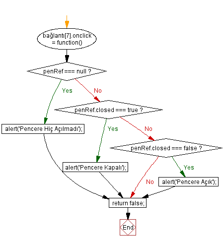

18.1 - Belge Çözümleyicisi Nesne Modeli (Browser Object Model) (BOM)
JavaScript yorumlanan bir script programlama dilidir ve JavaScript yorumlayıcısı, bir belge çözümleyicisi programı tarafından konuk edilmelidir. Konuk eden belge çözümleyicisi ortamına, konuk eden ortam (host) adı verilir. JavaScript yorumlayıcısını konuk eden belge çözümleyiciler ticari programlardır ve her belge çözümleyici üreticisinin belge çözümleyicisinde konuk ettiği JavaScript yorumlayıcısı diğerlerinden farklıdır.
JavaScript yorumlayıcısı, nesne teknolojisine göre organize edilmiştir. En tepe nesne window nesnesidir. Diğer tüm nesneler bu nesnenin alt nesneleri olarak tanımlanırlar. JavaScript window nesnesi, daha önce çekirdek nesneleri konusunda incelemiş olduğumuz, Global JavaScript Nesnesi olarak işlev yapar.
Çekirdek nesnelerini incelerken görmüş olduğumuz gibi, ECMA-262 standartları, sadece programlama yöntemlerini kapsar ve giriş çıkış ortamına ait detayları, JavaScript yorumlayıcısını konuk eden belge çözümleyici ortamına bırakır. Bu şekiilde konuk her konuk eden ortama ait JavaScript yorumlayıcısı diğerlerinden farklı olurken, eğer, ECMA-262 uyumlu ise desteklediği çekirdek nesneleri standart ve diğerleri ile aynıdır. Bu nedenle, JavaScript programlarında, çekirdek nesneleri ile çalışılan kısımlar, bu standardı destekleyen tüm belge çözümleyicilerince sorunsuz olarak çalışırlar. Sorun, JavaScript yorumlayıcısının, ECMA-262 standartları dışındaki kısımlarından kaynaklanmaktadır.
Modern işletim sistemlerinde, programlar pencereler içinde görüntülenirler ve işletim sistemleri, pencerelerin açılması, kapanması, yer değiştirmesi gibi çeşitli kolaylıklar içerirler. JavaScript yorumlayıcısının, çekirdek nesneler dışında kalan kısmı, pencere yöntemine JavaScript program adımlarında da sağlanabilmesi için, işletim sistemi ile ilişki kurulması ve koordinasyon sağlanması amacına yöneliktir. Bu nedenle, JavaScript yorumlayıcısının, çekirdek nesneler dışında kalan kısmına Belge Çözümleyisi Nesnesi Modeli (Browser Object Model) (BOM) adı verilir. Belki de, teknik olarak Window Object Model ifadesi daha doğru olabilirdi.
BOM yöntemleri, belge çözümleyicilere özgüdür ve bu nedenle belirli bir standart ile düzenlenmiş değillerdir. Dünyada kullanılan belge , çözümleyiciler, genel olarak iki temel motora dayalı olarak oluşturulmuşlardır. Bunlardan ilki, Microsoft tarafından geliştirilen Internet Explorer (MSIE) motoru, diğeri ise, eski Netscape grubu tarafından geliştirilen, FireFox ve diğer belge çözümleyicilerinin kullandığı, GECKO motorudur. Kullanıcıların yüzde yetmişbeş kadarı, sürüm 8 ye ulaşan MSIE ve türevlerini kullanırken, geri kalan kullanıcılar, GECKO temeline dayanan belge çözümleyicileri, kullanmaktadırlar. GECKO temeline dayanan belge çözümleyicileri arasında, özellikle sürüm 3.0 a ulaşan açık kaynak FireFox belge çözümleyicisi kullanılmaktadır. Son günlerde, 9.64 sürümüne ulaşan OPERA belge çözümleyicisinin de kullanımı artmaktadır. Bazı kullanıcılar FireFox belge çözümleyisinin LINUX işletim sistemi altında çalışan versiyonunu kullanırken, bazıları da salt LINUX işletim sistemine özgü Konqueror ve Apple tarafından Windows sürümü de çıkarılmış SAFARI belge çözümleyicilerini kullanabilirler. Son günlerde Google tarafından geliştirlen Chrome belge çözümleyici de çok kullanılmaktadır. Ayrıca, FreeBSD, Solaris, diğer farklı UNIX türleri gibi işletim sistemleri altında çalışan çeşitli belge çözümleyici türleri de kullanılabilir. Butün bu belge çözümleyici türleri, BOM yöntemlerinin kendi özel yazılımlarını geliştirmiş ve bu yazılımlar, kendi yöntemlerine bağlı olan çok sayıda kuruluş tarafından kullanımda olmasından dolayı bu konuda belirli bir standart üzerinde birleşme sağlanabilmesinin ne kadar güç olabileceğini ortaya koymaktadır. Bu nedenden dolayı BOM yöntemleri ECMA-262 standartları dışında tutulmuştur. Aslında, teknik olarak belirli bir standart etrafında uyuşmanın önünde hiçbir engelin olmadığı, sorunun belge çözümleyicilerini üretmekte olan kuruluşlardan kaynaklandığı herkesin paylaştığı bir düşüncedir. BOM yöntemlerinde belirli bir standardın olmamaması, web geliştiricileri için büyük bir sorun yaratmakta ve bu konuda bir anlaşmaya varılması için çaba sarfedilmesi için çalışılmaktadır.
Dünyada kullanılan belge çözümleyicilerinin yüzde yüzüne yakını Internet Explorer ve FireFox belge çözümleyicilerinden oluşmaktadır. Her iki belge çözümleyici de ücretsiz olarak dağıtılmaktadır. Bu nedenle, bu çalışmada, BOM yöntemlerinden sadece her iki belge çözümleyide desteklenebilen yöntemler incelenmiş ve uygulanmıştır. Bu şekilde, olanaklar ölçüsünde uygulamaların ortak olarak desteklenmeleri sağlanmaya çalışılmıştır.
18.2 - JavaScript window Nesnesi
JavaScript window nesnesi, konuk eden ortam tarafından düzenlenmiş JavaScript yorumlayıcısının tepe sınıfı olarak da adlandırılan en üst düzey sınıfıdır. Bu sınıf, global JavaScript nesnesi olarak hareket eder. Çekirdek nesneleri dışında, bu nesnenin window, history, location, navigator, frames, screen ve document alt nesneleri bulunmaktadır. Alt nesnelerin herbirine ait, özellik, metot ve alt nesneler tanımlanmıştır. Her alt nesne ayrı olarak incelenecektir.
(X)HTML kodlama sistemine göre, her bir belge tek bir işletim sistemi penceresinde görüntülenir ve her pencerede sadece bir tek JavaScript kod çalıştırma ortamı bulunabilir. Her kod çalıştırma ortamında da, sadece bir tek JavaScript window nesnesi bulunabilir.
Çekirdek nesnelerinin dışında olan tüm nesneler, belirli bir standarda bağlı değillerdir ve sadece JavaScript yorumlayıcısını oluşturan kuruluş tarafından düzenlenmişlerdir. Buna rağmen, bu yazılımlar birçok ortak olarak desteklenen öğeler içermektedir.
JavaScript window nesnesinin, çekirdek nesneleri dışında, içerdiği window, history, location, frames ve screen nesneleri, açılmış olan pencerenin tümünü hedefleyen yöntemleri içerirler. Bu yüzden bu yöntemlere, BOM yöntemleri adı verilir. Bu nesneler içinde, navigator alt nesnesi, açılmış olan pencereyi açan belge çözümleyicisini belrlemeye yarayan yöntemleri içerir. En sonuncu document alt nesnesi ise, pencerenin içerdiği belge ögeleri ile ilgilidir ve bu yüzden, document alt nesnesinin yöntemlerine Belge Nesne Modeli, (Document Object Model = DOM) adı verilir. DOM yöntemlerinin standartlaşmaması çok sakınca yarattığından, W3C bu yöntemleri bir standart altında toplamaya çalışmaktadır. Her JavaScript yorumlayıcısı, kendine özgü DOM yöntemleri yanında, W3C-DOM spesifikasyonunu da sınırlı olsa da desteklemektedir.
JavaScript window nesnesinin alt nenelerinin özelliklerine,
window. window.close(); window.history.back(-1); window.document.getElementsByTagName('p');
şeklinde erişilebilir. Burada window nesnesi, arsayılan tepe nesne olduğundan açıkça belirtilmeyebilir. Bu durumda, alt nesnelere erişim,
window.close(); history.back(-1); document.getElementsByTagName('p');
şekline indirgenebilir. JavaScript window nesnesinin, window alt nesnesinin özellikleri, varsayılan tepe nesnesi olan window nesnesinin özellikleri olduğundan, basitleştirmede bir adım ileri gidilip
window.close();
yerine, sadece
close();
olarak belirtilebilir. Fakat, hedeflenen alt nesnenin belirli olması için, genel olarak ilk şekil, yani window.close() şeklinde kullanım, tercih edilir. Bunun için uygulamada window alt nesnesinin özellikleri, window nesnesi özellikleri olarak kabul edlir.
Aşağıdaki tablolarda, JavaScript window nesnesinin özellik metot ve alt nesneleri, destekleyen belge çözümleyicileri ile birlikte aşağıda verilmiştir.
| Metot | İşlev | Destek |
|---|---|---|
| alert | Bir alert Diyalog Penceresi Açar. | MSIE, GECKO, OPERA ORTAK DESTEK |
| atob | 64 bit Temeline Göre Kodlanmış Bir Karakter Dizgisi (String) Değerin Kodunu Çözümler. | GECKO |
| back | Bir Sayfa Geriye | GECKO |
| attachEvent | Bir Özel Fonksiyonu Bir Olay Dinleyicisine Bağlar. | MSIE |
| blur | İlgiyi Kaldırır. | MSIE, GECKO, OPERA ORTAK DESTEK |
| btoa | 64 bit Temeline Göre Kodlanmış Bir Karakter dizgisi (String) Oluşturur. | GECKO |
| captureEvents | Bir olay yöneticisi yaratır. (Artık Kullanımda Değil) | GECKO |
| clearInterval | Tekrarlı Bir İşlemi İptal Eder. | MSIE, GECKO, OPERA ORTAK DESTEK |
| clearTimeout | Gecikmeli Bir İşlemi İptal Eder. | MSIE, GECKO, OPERA ORTAK DESTEK |
| close | Pencereyi Kapatır. | MSIE, GECKO, OPERA ORTAK DESTEK |
| confirm | Bir Onay Kutusu Açar. | MSIE, GECKO, OPERA ORTAK DESTEK |
| createPopup | Bir pop-up Penceresi Açar. | MSIE |
| detachEvent | Belirtilen Fonksiyonun Belirtilen Olayı Dinlemesini Kaldırır. | MSIE |
| dump | Bir Konsol Mesajı Yazar. | GECKO |
| escape | Bir Karakter Dizinini (str)Kodlar . | GECKO |
| execScript | Verilen Dilde Bir Script Programını Çalıştırır. | MSIE |
| find | Bir Karakteri Arar. | GECKO |
| forward | Belgeyi History listesindeki bir sayfa ilerisi ile Değiştirir. | GECKO |
| getAttention | Uyarı Işığı ile Bir Uygulamaya Dikkati Çeker. | GECKO |
| getComputedStyle | Bir Elementin Tüm Hesaplanmış CSS Özelliklerini Döndürür. | GECKO |
| getSelection | Seçilmiş Nesnelerin selection Nesnesini Döndürür. | GECKO |
| home | Ana Sayfaya Geri Döndürür. | GECKO |
| focus | İlgiyi Odaklar. | MSIE, GECKO, OPERA ORTAK DESTEK |
| moveBy | Belirtilen x ve y Kayma Değerlerine Göre Pencerenin Ekrandaki Yerini Değiştirir. | MSIE, GECKO, OPERA ORTAK DESTEK |
| moveTo | Belirtilen x ve y Mutlak Değerlerine Göre Pencerenin Ekrandaki Yerini Değiştirir. | MSIE, GECKO, OPERA ORTAK DESTEK |
| navigate | Belirtilen URL Değerini Geçerli Pencereye Yükler. | MSIE |
| open | Yeni Bir Pencere Açar ve Verilen URL Değerini Yükler. | MSIE, GECKO, OPERA ORTAK DESTEK |
| openDialog | Bir Diyalog Penceresi Açar. | GECKO |
| Sayfayı Yazdırmak için Yazıcı Diyalog Kutusunu Açar. | MSIE, GECKO, OPERA ORTAK DESTEK |
|
| prompt | Mesajlı Bir Diyalog Kutusu Açar ve Kullanıcının Girdiği Karakter dizgisi (str) Değerini Geri Döndürür. | MSIE, GECKO, OPERA ORTAK DESTEK |
| releaseEvents | Pencerenin Belirli Tipte Olayları Dinlemesini Sona Erdirir. (Devam Ettirilmiyor) | GECKO |
| resizeBy | Açılmış Pencerenin Kordinatlarına Belirli Bir x ve y Uzunluklarını Ekleyerek Boyutlarını Değiştirir. | MSIE, GECKO, OPERA ORTAK DESTEK |
| resizeTo | Açılmış Pencerenin Boyutlarını, Mutlak x (Genişlik) ve y ( Yükseklik) Değerlerini Atayarak Değiştirir. | MSIE, GECKO, OPERA ORTAK DESTEK |
| scroll | Açılmış Bir Pencerenin İçeriğini, Sağa Doğru x ve Sola Doğru y Değeri Ekleyerek Göre, Aşağıya Doğru Kaydırır. | MSIE, GECKO, OPERA ORTAK DESTEK |
| scrollBy | Açılmış Bir Pencerenin İçeriğini, Sağa Doğru x ve Sola Doğru y Değerleri Ekleyerek, Aşağıya Doğru Kaydırır. | MSIE, GECKO, OPERA ORTAK DESTEK |
| scrollByLines | Açılmış Bir Pencerenin İçeriğini, Belirli Sayıda Satır Ekleyerek, Aşağıya Doğru Kaydırır. | GECKO |
| scrollByPages | Açılmış Bir Pencerenin İçeriğini, Belirli Sayıda Sayfa Ekleyerek, Aşağıya Doğru Kaydırır. | GECKO |
| setActive | Açılmış Bir Pencereyi Üzerine İlgiyi Odaklamadan Aktif Hale Getirir. | MSIE |
| setInterval | Belirli Bir İşlemi, Belirli milisaniye Aralıkları ile Tekrarlar. | MSIE, GECKO, OPERA ORTAK DESTEK |
| setTimeout | Belirli Bir İşlemi Belirli Bir Milisaniye Süresi Geçince Çalıştırır. | MSIE, GECKO, OPERA ORTAK DESTEK |
| showHelp | Bir Yardım Diyalog Penceresi Açar. | MSIE |
| showModalDialog | Bir Modal Diyalog Penceresi Açar ve Belirli Bir HTML Belgesini Görüntüler. | MSIE GECKO, OPERA ORTAK DESTEK |
| showModelessDialog | Modal Olmayan (Kapanma Onayı Olmayan) Bir Diyalog Penceresi Açar ve Belirli Bir HTML Belgesini Görüntüler. | MSIE |
| sizeToContent | Açılmış Pencereyi İçeriğine Göre Boyutlar. | GECKO |
| unescape | Bir alert Diyalog Penceresi Açar. | GECKO |
| updateCommands | Bir alert Diyalog Penceresi Açar. | GECKO |
| Olay Yöneticisi | İşlev | Destek |
|---|---|---|
| onabort | Penceredeki abort İşlemlerini izler. | GECKO |
| onactivate | Bir Nesne Aktif Hale Geldiğinde, Belirtilmiş İşlemleri Başlatır. | MSIE |
| onafterprint | Nesnenin Bulunduğu Sayfa, Yazdılırdıktan veya Yazma Önizlenmesi İçin Açıldıktan Sonra, Belirli İşlemleri Başlatır. | MSIE |
| onbeforedeactivate | Nesnenin Bulunduğu Sayfada, Aktif Element Deaktive Olur ve Bir Başkası Aktif Hale Gelirse Belirli İşlemleri Başlatır. | MSIE |
| onbeforeprint | Nesnenin Bulunduğu Sayfa, Yazdılırdıktan veya Yazma Önizlenmesi İçin Açılmadan Önce, Belirli İşlemleri Başlatır. | MSIE |
| onbeforeunload | Nesnenin Bulunduğu Sayfa, Kapanmadan Önce, Belirli İşlemleri Başlatır. | MSIE |
| onblur | Nesne üzerinden İlgi Odağı Kalkınca, Belirli İşlemleri Başlatır. | MSIE, GECKO, OPERA ORTAK DESTEK |
| onchange | Penceredeki Değişim Olaylarına Tepki Verir. | GECKO |
| onclick | Mouse ile Tıklamalara Tepki Verir. | GECKO |
| onclose | Pencere Kapatılmaya Çalışıldığında, Belirli İşlemleri Başlatır. | GECKO |
| oncontrolselect | Nesnenin Kontrol Seçimi Yapıldığında, Belirli İşlemleri Başlatır. | MSIE |
| ondeactivate | Aktif Nesne Aktivitesini Yitirdiğinde, Belirli İşlemleri Başlatır. | MSIE |
| ondragdrop | Sürükle-Bırak İşlemleri Yapıldığında, Belirli İşlemleri Başlatır. | GECKO |
| onerror | Bir Nesne Yüklenirken, Hata Oluşursa, Belirli İşlemleri Başlatır. | MSIE, GECKO, OPERA ORTAK DESTEK |
| focus | Bir Nesne Üzerinde İlgi Odaklandığında, Belirli İşlemleri Başlatır. | MSIE, GECKO, OPERA ORTAK DESTEK |
| onhelp | Pencere Aktif Durumdayken Kullanıcı F1 Tuşuna Bastığında, Belirli İşlemleri Başlatır. | MSIE |
| onkeydown | Aktif Pencerede Klavye Tuşunun İndirilmesi ile Belirli İşlemleri Başlatır. | GECKO |
| onkeypress | Aktif Pencerede Klavye Tuşunun Basılması ile Belirli İşlemleri Başlatır. | GECKO |
| onkeyup | Aktif Pencerede Klavye Tuşunun Kaldırılması ile Belirli İşlemleri Başlatır. | GECKO |
| load | Bir Pencere Yüklendiğinde, Belirli İşlemleri Başlatır. | MSIE, GECKO, OPERA ORTAK DESTEK |
| onmousedown | Aktif Pencerede mousedown Olayı ile Belirli İşlemleri Başlatır. | GECKO |
| onmousemove | Aktif Pencerede Aktif Pencerede mousemove Olayı ile Belirli İşlemleri Başlatır. | GECKO |
| onmouseout | Aktif Pencerede Aktif Pencerede mouseout Olayı ile Belirli İşlemleri Başlatır. | GECKO |
| onmouseover | Aktif Pencerede mouseover Olayı ile Belirli İşlemleri Başlatır. | GECKO |
| onmouseup | Aktif Pencerede mouseup olayı ile Belirli İşlemleri Başlatır. | GECKO |
| onmove | Bir Nesne Hereket Ettiğinde, Belirtilmiş İşlemleri Başlatır. | MSIE |
| onmoveend | Bir Nesnenin Hereketi Sona Erdiğinde, Belirtilmiş İşlemleri Başlatır. | MSIE |
| onmovestart | Bir Nesnenin Hereketi Başladığında, Belirtilmiş İşlemleri Başlatır. | MSIE |
| onpaint | Aktif Pencerede Boyama İşlemleri Başladığında Belirli İşlemleri Başlatır. | GECKO |
| onreset | Aktif Pencerede Reset İşlemleri Başladığında Belirli İşlemleri Başlatır. | GECKO |
| resize | Bir Nesnenin Boyutu Değiştiğinde, Belirli İşlemleri Başlatır. | MSIE, GECKO, OPERA ORTAK DESTEK |
| onresizeend | Bir Nesnenin Boyut Değiştirmesi Sona, Erdiğinde, Belirtilmiş İşlemleri Başlatır. | MSIE |
| onscroll | Aktif Pencerenin İçeriği Kaydırıldığında Belirli İşlemleri Başlatır. | MSIE, GECKO, OPERA ORTAK DESTEK |
| onselect | Aktif Pencerede Seçme İşlemleri Başladığında Belirli İşlemleri Başlatır. | GECKO |
| onsubmit | Aktif Pencerede Submit İşlemleri Başladığında Belirli İşlemleri Başlatır. | GECKO |
| onunload | Aktif Pencerede, Bir Nesnenin Yüklenmesinin İptali, ile Belirli İşlemleri Başlatır. | MSIE, GECKO, OPERA ORTAK DESTEK |
window Nesnesinin alt nesnelerinin sınıflandırılması üzerine oluşmuş bir fikir birliği yoktur. Microsoft kaynakları, alt nesneleri, "Özellikler" (Properties), "Alt Nesneler" (Objects);, "Koleksiyonlar" (Collections) olarak üç ayrı grupta incelerken, Mozilla kaynakları, alt nesneler üzerinde hiç bir sınıflandırma yapmayarak tümünü alt nesne olarak belirtmektedir. Mozilla grubunun yaklaşımı aslında daha tutarlı gibi görünmektedir. Gerçekten, window Nesnesinin alt nesnelerinin birbirlerinden farkı yoktur. Hepsi de birer alt nesnedir. Farklılıklar belki de bunlardan bazılarının başka alt nesnelere sahip olmaması, bazılarının ise geniş bir alt nesne ailesine sahip olmalarıdır. Bunlar arasındaki fark sadece bu noktadadır ve bu ayrım da sadece bir tanımdan ibarettir. Temel nesne nitelikleri hepsi için aynıdır. Biz de çalışmalarımızda, Mozilla sisteminin yaklaşımlarını benimseyerek, tüm alt nesneleri, "Alt Nesne" olarak bir tek grupta inceleyeceğiz. Doğal olarak, her nesne diğerinden yapısı, işlevi, uygulaması ve içerdiği alt neneleri ile farklı olacaktır. Fakat teknik açıdan, alt nesnelerin yapıları, birer nesne olarak, birbirlerinin aynıdır.
| Özellik | İşlev | Destek |
|---|---|---|
| clientInformation | Belge Çözümleyicisi Hakkında Bilgiler İçerir. | MSIE |
| clipboardData | Önceden Tanımlanmış Clpboard Formatlarına Erişim Sağlar. | MSIE |
| closed | Geçerli Pencerenin Kapanmış Olup Olmadığını Kontrol Eder. | MSIE, GECKO, OPERA ORTAK DESTEK |
| Components | XPCOM Özelliklerine Giriş Noktası. | GECKO |
| content | Geçerli Pencerede content Elementinin Referansını Döndürür | GECKO |
| controllers | Geçerli Pencerede controller Nesnesini Döndürür | GECKO |
| crypto | Geçerli Pencerede crypto Nesnesini Döndürür | GECKO |
| defaultStatus | Geçerli Pencerenin Alt Tarafındaki Durum Çubuğundaki varsayılan Metni Geri Döndürür veya Oluşturur. | MSIE, GECKO, OPERA ORTAK DESTEK |
| dialogArguments | Modal Diyalog Penceresine Aktarılan Değişken veya Dizileri Döndürür. | MSIE |
| dialogHeight | Modal Diyalog Penceresinin Yüksekliğini Belirler veya Döndürür. | MSIE |
| dialogLeft | Modal Diyalog Penceresinin Sol Koordinatını Belirler veya Döndürür. | MSIE |
| dialogTop | Modal Diyalog Penceresinin Üst Koordinatını Belirler veya Döndürür. | MSIE |
| dialogWidth | Modal Diyalog Penceresinin Genişliğini Belirler veya Döndürür. | MSIE |
| directories | directories Araç Çubuğuna bir Referans Değerini Döndürürür. | GECKO |
| document | Pencerenin İçerdiği Belgenin Referansını Döndürür. | MSIE, GECKO, OPERA ORTAK DESTEK |
| event | Bir Olayın Durumunu Döndürür. | MSIE |
| external | Bir Dış Uygulamanın Nesne Modeline Giriş Bilgilerini İçerir. | MSIE |
| frameElement | Pencerenin İliştirilmiş Olduğu Elementi veya İlişik Değilse, null Değerini Döndürür. | MSIE, GECKO, OPERA ORTAK DESTEK |
| frames | Belgenin İlişik Olduğu Tüm window Nesnelerinin Toplu Bilgisini (Koleksion) verir. | MSIE, GECKO, OPERA ORTAK DESTEK |
| history | Kullanıcının Ziyaret Ettiği Tüm Sitelerin Bilgisini Verir. | MSIE, GECKO, OPERA ORTAK DESTEK |
| innerHeight | Belge Çözümleyisi Penceresinin Yüksekliğini Eğer Görüntüleniyorsa, Yatay Kaydırma Çubuğu Yüksekliği ile Birlikte Verir. | GECKO |
| innerWidth | Belge Çözümleyisi Penceresinin Genişliğini Eğer Görüntüleniyorsa, Dikey Kaydırma Çubuğu Genişliği ile Birlikte Verir. | GECKO |
| length | Bir Topluluk (Koleksiyon) İçindeki Nesnelerin Sayısını Döndürür veya Belirler. | MSIE, GECKO, OPERA ORTAK DESTEK |
| location | window Nesnesinin Lokasyonunu, Yani Geçerli URL adresini Geri Döndürürür. | MSIE, GECKO, OPERA ORTAK DESTEK |
| locationbar | Belge Çözümleyicisinin Yer İmi Çubuğunu Görüntüler veya Gizler. | GECKO |
| menubar | Belge Çözümleyicisinin Menü Çubuğunu Görüntüler veya Gizler. | GECKO |
| name | Bir Pencerenin Adını Belirten Bir Değeri Döndürür veya Belirler. | MSIE, GECKO, OPERA ORTAK DESTEK |
| navigator | navigator Nesnesinin Referansını Döndürür. | MSIE, GECKO, OPERA ORTAK DESTEK |
| offscreenBuffering | Kullanıcıya Görününmeden Önce bir Nesnelerin Ekran Dişına Çıktığını Belirler veya Döndürür. | MSIE |
| opener | Geçerli Pencereyi Açan Pencerenin Referansını Belirler veya Geri Döndürür. | MSIE, GECKO, OPERA ORTAK DESTEK |
| outerHeight | Belge Çözümleyicisi Penceresinin Dış Yüksekliğini Döndürür. | GECKO |
| outerWidth | Belge Çözümleyicisi Penceresinin Dış Yüksekliğini Döndürür. | GECKO |
| pageXoffset | Belge Çözümleyicisi Penceresinin İçeriğinin Sağa Kaydırılması (Scroll) ile Saklı Kalan Kısmını Döndürür. | GECKO |
| pageYoffset | Belge Çözümleyicisi Penceresinin İçeriğinin Aşağıya Kaydırılması (Scroll) ile Saklı Kalan Kısmını Döndürür. | GECKO |
| personalbar | Pencerede Görüntülenip Gizlenebilen Kişiye Özel Çubuğun Durumunu Döndürür veya Belirtir. | GECKO |
| pkcs11 | Driver veya Özel Programlar Yerleştirilmesi İçin Kullanılan PKCS11 Protokol Nesnesini Döndürür. | GECKO |
| parent | Geçerli Pencerenin veya Alt Çerçevenin İlk Atasının Referansını Geri Döndürür. | MSIE, GECKO, OPERA ORTAK DESTEK |
| returnValue | Modal Diyalog Penceresinden Girilen Değeri Belirler veya Döndürür. | MSIE |
| screenLeft | Belge Çözümleyicinin Üst Sol Köşesinin X Koordinatını Döndürür. | MSIE |
| screenTop | Belge Çözümleyicinin Üst Köşesinin Y Koordinatını Döndürür. | MSIE |
| screenX | Belge Çözümleyicisinin Sol sınırının Pencerenin Solundan Uzaklığını Döndürür. | GECKO |
| screenY | Belge Çözümleyicisinin Tepesinin Pencerenin En Üstünden Uzaklığını Döndürür. | GECKO |
| scrollMaxX | Belgenin İçeriğinin Kaydırılabileceği En Fazla Uzunluk. | GECKO |
| scrollMaxY | Belgenin İçeriğinin Kaydırılabileceği En Fazla Genişlik. | GECKO |
| scrollX | Belgenin İçeriğinin Kaydırılmış Olduğu Genişlik. | GECKO |
| scrollY | Belgenin İçeriğinin Kaydırılmış Olduğu Yükseklik. | GECKO |
| self | Geçerli Pencerenin veya Alt Çerçevenin Referansını Geri Döndürür. | MSIE, GECKO, OPERA ORTAK DESTEK |
| sidebar | Sidebar (Kenarlık) Nesnesinin Pencere Referansını Döndürür. | GECKO |
| status | Geçerli Pencerenin Durum Çubuğunda Görüntülenen Mesajı Geri Döndürür veya Görüntülenecek Yeni Bir Mesaj Oluşturur. | MSIE, GECKO, OPERA ORTAK DESTEK |
| top | Geçerli Pencerenin En Üst Düzey Sınıfını Geri Döndürür. | MSIE, GECKO, OPERA ORTAK DESTEK |
| window | Geçerli Pencere Referansını Döndürür. | GECKO |
Yukarıdaki tablolarda görülen özellik, metot, olay yöneticileri ve alt nesnelerin bir kısmı sadece belirli bir belge çözümleyicisine özgü iken, bazıları da ortak olarak desteklenmektedir.
18.3 - window Nesnesinin Metotları
window Nesnesinin metotları, Tablo 12-1 de görülmektedir. Bu tabloda, ortak olarak desteklendiği belirtilen metotlar arasında ilk olarak, open() metodu incelenecektir. Bunun nedeni, bu metodun JavaScript alt pencerelerinin açılması için kullanılması ve birçok metodun da açılmış alt pencereler üzerinde uygulanmasıdır.
18.3.1 - window.open() Metodu
Bu metot, alt pencere olarak da nitelendirilen, ikincil bir belge çözümleyicisi penceresi açar. Bu metodun sözdizimi, en genel şekliyle,
objPENCERE_REFERANS_DEĞİŞKENİ = window.open(strURI,strİSİM,[strPencere_Nitelikleri], [boolYERİNE_GEÇ]);
şeklinde belirtilir. Burada,
| objPENCERE_REFERANS_DEĞİŞKENİ | Pencere referansı olarak da adlandırılan, Nesne (Object) tipinde bir değişken. Bu değişkenin değeri, window .open ()metodunun geri dönüş (return) değeridir ve açılan bir pencerenin metot ve alt nesnelerine erişim sağlar. Pencere bir nedenle açılmazsa değeri null olarak geri döndürülür. | ||||||||
| strURI | Karakter dizgisi (str) tipinde URI yer imi literali. Bu Karakter dizgisi literali, dosya sistemi üzerinde bir dosya adı, bir Web belgesi, bir resim dosyası veya belge çözümleyicinin destekleyebildiği başka bir tip dosya adı olabilir. | ||||||||
| strİSİM | İsteğe Bağlı Karakter dizgisi (str) tipinde
bir literal. Bu isim, bir <form> veya bir<a> elementinin target niteliğinin
değeri olarak kullanılır. Bu değer, açılan
pencerenin <title> elementinin
içeriği değildir. Bu literal hiçbir boşluk karakteri
içermemelidir.
|
||||||||
| strPencere_Nitelikleri | İsteğe bağlı bir karakter dizgisi (str) listeral listesi. Bu liste, virgül ile ayrılmış, karakter dizgisi literallerden oluşur. Her liste elemanı, bir opsiyonu belirten literal, bir eşit işareti ve bir opsiyon değerinden oluşur. Örnek olarak, "left=40 px, fullscreen=yes,..." şeklinde bir liste düzenlenebilir. Desteklenen pencere nitelikleri Tablo 12-5 de listelenmiştir. | ||||||||
| boolYERİNE_GEÇ | Sadece MSIE tarafından desteklenen isteğe bağlı mantıksal (boolean) tipte bir parametre. Bu değer true ise, strURL literali, belge çözümleyicisinin history listesinde geçerli belgenin yerini alır. Eğer bu parametrenin değeri false ise, strURL değeri, belge çözümleyicisinin history listesinde kendine yeni bir yer açar. |
| Nitelik | İşlev | Destek |
|---|---|---|
| alwaysLowered | Bu nitelik, UniversalBrowserWrite ayrıcalığı gerektirir. Bu ayrıcalığa sahip olunmazsa, gözardı edilir. Eğer 1 olarak belirtilirse, kendisini açan ve küçültülmemiş olan pencerenin altında yüzen bir pencere açılır. Bu niteliğe sahip pencererelere "pop-under" adı verilmektedir. Bu tip pencereler, kendini açan üst düzey pencerenin üstünde olamaz, fakat üst düzey pencere küçültülebilir. | MSIE, GECKO, OPERA |
| alwaysRaised | Bu nitelik, UniversalBrowserWrite ayrıcalığı gerektirir. Bu ayrıcalığa sahip olunmazsa, gözardı edilir. Eğer 1 olarak belirtilirse, aktif olsun veya olmasın, diğer pencerelerin üstünde yüzen bir pencere açılır. | GECKO |
| channelmode | Sadece MSIE sürüm 7 öncesinde desteklenen bu özellik açılacak pencereyi tiyatro gösterimi moduna getirir. (ARTIK DESTEKLENMİYOR !) | MSIE |
| chrome | Mozilla 1.7 ve FireFox 0.9 dan başlayarak desteklenen bu nitelik, UniversalBrowserWrite ayrıcalığı gerektirir. Bu ayrıcalığa sahip olunmazsa, gözardı edilir. Bu özellik, sadece kullanıcı tarafından kontrol edilebilecek, standart özelliklerden kurtulmuş bir pencere açar. XUL belgeleri ve JavaScript konsolları genellikle bu şekilde açılır. | GECKO |
| close | Bu nitelik, UniversalBrowserWrite ayrıcalığı gerektirir. Bu ayrıcalığa sahip olunmazsa, gözardı edilir. Bu nitelik no olarak belirtilirse, belge çözümleyicinin pencereyi kapatma tutamağı ve menüdeki kapat seçeneği iptal edilir. | GECKO |
| dependent | Eğer 1 olarak belirtilirse, yeni pencere eskisinin çocuğu olarak açılır. Yani, ana pencere kapanırsa çocuk da kapanır. Açılan yeni pencere, eskisinin görev çubuğunda görünmez. | GECKO |
| dialog | Eğer evet olarak belirtilirse, açılacak pencerenin başlık çubuğundaki tüm ikonlar (restore, minimize, maximise) kaldırılır. | GECKO |
| directories | Eğer 1 olarak belirtilirse, yeni pencerede standart pencere düğmeleri olacaktır. Varsayılan değer 1 dir. | MSIE, GECKO |
| fullscreen | Bu özelliğin dikkatle kullanılması gerekir. Çünkü, açılacak pencere tüm ekranı kaplar ve üzerinde belge çözümleyicisinin başlık çubuğu ve menüleri bulunmaz. Kullanıcıya bu pencereyi kapatmak için bir olanağın tanınması gerekir. | MSIE |
| height | Açılacak pencerenin piksel olarak yüksekliğini belirtir. MSIE 7 için minimum yükseklik 150 pikseldir. Önceki sürümler ve GECKO motorlu belge çözümleyiciler 100 piksel değeri destekler. Eğer görüntüleniyorsa, yatay kaydırma çubuğu genişliği de yüksekliğe dahildir. | MSIE, GECKO, OPERA |
| innerHeight | Pencerenin iç yüksekliğini piksel olarak belirtir. height ile aynıdır. | GECKO |
| innerWidth | Pencerenin iç genişliğini piksel olarak belirtir. width ile aynıdır. | GECKO |
| left | Piksel olarak pencerenin sol kenarının ekranın sol kenarından uzaklığını belirtir. Bu değer 0 veya pozitif bir tamsayı olmalıdır. | MSIE, GECKO, OPERA |
| location | Evet olarak ayarlandığında, açılacak pencere içinde bir standart URI giriş alanı açar. | MSIE, GECKO, OPERA |
| menubar | Evet olarak ayarlandığında, açılacak pencerede standart menu bar (File, Edit, View, vs.) gibi öğelerle oluşturulur. | MSIE, GECKO |
| minimizable | GECKO motorunu kullanan belge çözümleyicilerde ve sadece dialog pencerelerinde çalışır. Evet olarak ayarlandığında, açılacak dialog penceresi, küçültme düğmesini içerir. | GECKO |
| modal | Bu nitelik, UniversalBrowserWrite ayrıcalığı gerektirir. Bu ayrıcalığa sahip olunmazsa, gözardı edilir. Evet olarak ayarlandığında, kullanıcı açılan pencereyi kapatmadan ana pencereye dönemez. Modal bir pencereye örnek olarak, alert() penceresi gösterilebilir. | GECKO |
| outerHeight | height ile aynıdır fakat, sadece GECKO temelli belge çözümleyicilerde çalışır. | GECKO |
| outerWidth | width ile aynıdır fakat, sadece GECKO temelli belge çözümleyicilerde çalışır. | GECKO |
| personalbar | directory ile aynıdır fakat, sadece GECKO temelli belge çözümleyicilerde çalışır. | GECKO |
| resizable | Eğer evet olarak ayarlanırsa, yeni açılacak pencerenin boyutları değiştirilebilir. | MSIE, GECKO |
| screenX | left ile aynıdır fakat, sadece GECKO temelli belge çözümleyicilerde çalışır. (Artık Devam Ettirilmiyor !) | GECKO |
| screenY | top ile aynıdır fakat, sadece GECKO temelli belge çözümleyicilerde çalışır. (Artık Devam Ettirilmiyor !) | GECKO |
| scrollbars | Evet olarak ayarlandığında, yeni açılacak belge, eğer viewport ölçülerine uymazsa, yatay ve dikey kayma çubukları ile birlikte görüntülenecektir. | MSIE, GECKO |
| status | Evet olarak ayarlandığında, yeni açılacak pencerenin altında, durum çubuğu görüntülenecektir. | MSIE, GECKO |
| titlebar | Sadece GECKO temelli belge çözümleyicilerde çalışır. Bu tip belge çözümleyicilerde alt pencereler daima bir başlık çubuğu ile açılır. Eğer, hayır olarak ayarlanırsa, bu nitelik GECKO temelli belge çözümleyicilerde açılan alt pencerelerdeki başlık çubuğunu görüntülemez. | GECKO |
| toolbar | Evet olarak ayarlandığında, yeni açılacak pencerenin altında, alet çubuğu (Back, Forward, ve Stop) görüntülenecektir. | MSIE, GECKO |
| top | Piksel olarak pencerenin üst kenarının ekranın üst kenarından uzaklığını belirtir. Bu değer 0 veya pozitif bir tamsayı olmalıdır. | MSIE, GECKO, OPERA |
| width | Piksel olarak pencerenin genişliğini belirtir. Minimum genişlik değeri MSIE 7 den önce 100 pikseldi. | MSIE, GECKO, OPERA |
| z-lock | alwaysLowered ile aynıdır. | GECKO |
Yukarıdaki tabloda,MSIE, FireFox ve Opera'nın tümünün birden destekleyebildiği sadece 6 tane nitelik olabildiği görülür. Bunlar, alwaysLowered, height, left, top, width, location nitelikleridir. Kullanıcısı sayısı az ve desteklediği nitelik sayısı kısıtlı olan Opera belge çözümleyicisinin açılan pencere niteliklerini desteklemesi beklenen belge çözümleyicileri arasından çıkartılırsa, sadece MSIE ve FireFox belge çözümleyicilerinin ortaklaşa desteklediği,
left, top, height, width, location, directories, toolbar, menubar, resizable, scrollbars, status
olarak 11 adet ortak olarak desteklenebilen nitelik, açık internet belgelerinde kullanılabilir. Diğerlerinin, şimdilik kapalı intranet belgelerinde değerlendirilmesi ile yetinilmelidir.
JavaScript iki tür pencereyi ayırdeder. Bunlar,
olarak ayırdedilir.
Bir pencere referansı olmadan açılan pencereler, sistem pencereleri olarak adlandırılan, işletim sisteminden yararlanılarak ve biraz ileride göreceğimiz, window.open metodu ile aynı programda bir pencere referansına atanmadan açılmış olan veya başka JavaScript programları tarafından açılmış olan pencerelerdir. JavaScript sadece kendisi tarafından açılmış pencere referansı belli olan ve kendi işletim sistemi sayfası olan pencerelerle bilgi alışverişi yapabilir. Diğer pencerelere erişemez.
JavaScript window nesnesi, tüm diğer nesneler gibi, referansla aktarılır. Bu nesnesnin özelliklerine erişim için, atanmış olduğu değişkene pencere referans değişkeni denilir. Pencere referans değişkeni, global bir değişkendir. Bu değişkeni fonksiyon alanı dışında veya bir fonksiyon alanı içinde var bildirimi yapılmadan tanımlamak gerekir. Aksi halde, pencere referans değişkeni sadece fonksiyon alanında tanımlı olabilecek ve fonksiyonun çalışması sona erince tanım da erişebilirliğini yitirecektir.
Alt pencere açılıca, diğer açık pencerelerle, üst sınıf/ alt sınıf ilişkisi kalmayacağından, açılan alt pencerelerin alt nesneleri ile metot, özellik ve olay yöntecilerine erişebilmek için mutlaka bir global pencere referans değişkeninin tanımlanmış olması gerekir.
window.open('URI', 'isim', '...' bildiriminin ilk parametresi, Bir karakter dizgisi literali veri tipinde olan URI değeri, mutlak ve bağıl URI değerleri olabileceği gibi, boş bir karakter dizgisi de olabilir. Bu durumda, URI değeri about:blank olan boş bir alt pencere, belirtilen niteliklerle veya eğer nitelikleri belirtilmemişse, varsayılan donatılar ve boyutlarda açılır.
İkinci parametre olan 'isim'; parametresi, en kritik ve anlaşılması güç olan bir değerdir. Bu parametre, bir çerçeve (frame) sistemini oluşturan pencerelerin ismidir. Bir çerçeve sistemi olmadığı durumlarda, bu pencereler, JavaScript window.open() metodu ile veya (X)HTML çapa elementinin target niteliğinde belirtilen isimle açılmış olabilir.
Normal olarak (X)HTML çözümleyicisi, açtığı belge çözümleyicisi pencerelerine bir isim vermez. Bu tip pencerelere, sistem pencereleri adı verilir. Açık bir sistem penceresi içine yüklenmiş bir (X)HTML belgesinden, <a href="merhabaDunya.htm">Merhaba Dünya !</a> şeklinde bir çapa elementinin çağrısı ile bir başka sayfa çağrılırsa, açık isimsiz sistem penceresinin içeriği boşaltılır ve çağrılan belge, pencerenin yeni içeriği haline gelir. Bu bağlantıyı lütfen deneyiniz.
Pencere yüklendikten önce ve sonra, sistemde sadece bir tane açık olan pencere bulunmakta olduğuna dikkat edilmelidir. Değişen sadece açık ve isimsiz sistem penceresinin içeriği olmuştur. Aynı pencereye, yeni bir belge yüklendiğinde, yeni belgenin history belleğinde, eski belgenin URI değeri bulunmaktadır. Bu şekilde, yeni belge yüklendiğinde, back düğmesi ile eski belge yeniden yüklenebilmekte, buradan forward düğmesi ile yeniden yeni belgeye dönülebilmektedir.
Sistem pencereleri, isimli olarak da açılabilirler. Eğer, yeni pencere, çapa elementinin target niteliği belirtilerek, <a href="MerhabaDunya.htm" target="ilk_pencere">pencere ismi</a> şeklinde açılırsa, durum çok farklı olacaktır. Bu durumda, yeni belgenin yüklenmesi için, ismi ilk_pencere olan bir pencere hedef gösterilmektedir. Sistemde bu isimde açık bir pencere varsa, yeni belge bu pencerenin yeni içeriği olacaktır. Sistemde bu isimde açık bir pencere yoksa, bu isimle yeni bir pencere açılacak ve belge bu yeni pencereye yüklenecektir. Bu taktik çoğunlukla ürün bilgilerini açık pencereyi etkilemeyecek şekilde sunmak isteyen web siteleri tarafından uygulanır. Örnek olarak,
<a href = "../uygulamalar/merhabaDunya.htm" target = "ilk_pencere">sayfayı aç</a>
Bu bağlantıyı lütfen deneyiniz. Bağlantı gerçekleştiğinde, sistemde iki tane açık belge çözümleyici penceresi olduğu ve en son açılan yeni pencerenin geçmiş belleğinde, çağıran belgenin URI bilgisinin olmadığı görülecektir. Yani, yeni açılan pencerenin back düğmesi çalışmayacaktır. Çünkü bu pencere yeni açılmıştır ve ilk içeriği de yeni yüklenmiştir.
Bundan sonraki, işleyiş aynı şekilde devam edecektir. Yeni bağlantılar, açık olan pencerelerden birini hedef gösterdiğinde, belgeler bu pencerelere yüklenecek, hedef olarak belirtilen isimde açık bir pencere yoksa, bu isimde yeni bir pencere açılarak, belge bu yeni pencereye yüklenecektir. Bu şekilde, duruma göre sonsuz sayıda yeni pencere açılabilir. Açılan her yeni pencerenin sistem kaynaklarını kullandığı da unutulmamalıdır. Bu nedenle, sistemde elden geldiği kadar az açık pencere tutulmasında yarar bulunmaktadır.
Yeni belgelerin, yeni pencerelere yüklenmesini sağlayacak bir hedefin target ="_blank" şeklinde bildirilmesi olanağı da bulunmaktadır. Bu durumda, isimsiz bir yeni sistem penceresi açılarak belge bu pencereye yüklenecek, doğal olarak back düğmesi bu durumda da çalışmayacaktır.
Çapa elementinin yönlendirme olanağından yararlanılarak açılan tüm pencereler XHTML işaretlemesinden yaralanılarak açılmış olan sistem pencereleridir. Bu pencerelerin açılması için, kullanıcı belge çözümleyicisinin JavaScript yorumlayıcısının devre dışı bırakılmış olması veya pop-up pencere engelleyicilerinin etkin olması bir engel oluşturmaz. Fakat açılan pencereler sistem pencereleridir ve bu pencerelerin düzeni üzerinde hiçbir kontrolümüz yoktur. Programcıların düzenlenmesini kontrol edebildikleri pencereler ancak JavaScript window.open () metodunun uygulanması ile açılabilir. Bunun için de ön koşul, kullanıcıların bilgisayarlarında JavaScript yorumlayıcısının etkin olması ve pop-up pencere engelleyicilerinin bulunmamasıdır.
Görüldüğü gibi, window.open( 'URI', 'isim', '...' metodunun ikinci parametresi, (X)HTML çözümleyicisinin değerlendirdiği pencere adıdır. Pencere adı, sadece açılış sırasında, çapa elementinin target niteliğinin değeri olarak veya alt pencere açılırken window.open( 'URI', 'isim', '...' metodunun ikinci parametresinin değeri olarak belirtilebilir.(X)HTML ile açık bir pencerenin isminin değiştirilebilmesi olanağı yoktur. Sadece JavaScript ile, window.name niteliğinin değerinin değiştirilmesi ile değiştirilebilir. Bu yöntemi kısa süre sonra, window.name niteliği ile birlikte inceleyeceğiz. Bunun dışında, açılan pencerelerin isimleri, açıldıkan sonra hiçbir şekilde değiştirilemez ve kapanmalarına kadar aynı ismi taşırlar.
Görüldüğü gibi, window.open( 'URI', 'isim', '...' metodunun ikinci parametresi, sadece, (X)HTML çözümleyicisinin hedef pencere olarak değerlendirdiği, karakter dizgisi (string) tipinde bir değerdir. Bu değer, çapa elementinin, target niteliği ile aynı işleve sahiptir. Çağıran çapa elementine bir target niteliği vermek ve bu değeri de açılacak pencere ismi olarak atamak, alışılagelmiş bir uygulama olarak kabul edilmektedir. Çapa elementinin, target niteliğinin değeri, JavaScript yorumlayıcısının pencere niteliklerini kontrol ettiği, pencere referans değişkeni değildir. Bu değer ayrıca açılan alt pencerenin <title> elementinin içeriği de değildir. Biraz ileride görüleceği gibi, <title> elementinin oluşturularak, açılacak alt sayfanın içeriğine ayrıca eklenmesi gerekir.
Çapa elementinin target niteliği, katı kuralcı (strict) XHTML 1.0 spesifikasyonunda iptal edilmiş fakat XHTML 1.1 spesifikasyonunda yeniden desteklenmeye başlanmıştır. En son spesifikasyon XHTML 1.1 olduğundan, bu konudaki sorunlar tamamen çözüme kavuşmuş ve çapa elementinin target niteliği belirtilmiş belge kodlamaları eğer geçerli XHTML 1.1 belgeleri ise, W3C kod değerlendiricisi bu belgeleri geçerli belgeler olarak kabul etmeye yeniden başlamıştırt Bu durumda XHTML 1.0 da yaşanmış olan kod değerlendirme sorunları geçmişte kalmıştır. Bu yeni ve olumlu durum, çerçeve sistemleri ile çalışılması ve isimli pencerelerin açılması işlemlerini çok kolaylaştırmaktadır.
window.open( 'URI', 'isim', '...' Metodunun ikinci parametresinin "" şeklinde boş bir karakter dizgisi olarak kullanılması durumunda, Internet Explorer her defasında yeni bir pencere açarken, Firefox ilk açlacak pencerenin ardından, açılacak tüm belgeleri aynı pencereye yükleyecektir. Genel olarak, window.open( 'URI', 'isim', '...' metodunun ikinci parametresinin, boş bir karakter dizgisi olarak kullanılması uygun değildir.
window.open( 'URI', 'isim', '...' Metodunun üçüncü parametresi, açılacak alt pencerenin donatıları ile ilgilidir. Bu parametre hiç kullanılmazsa, açılacak alt pencere, varsayılan donatılarla açılır. Bu parametre, "" şeklinde boş bir karakter dizgisi olarak verilirse, açılacak alt pencerede, başlık çubuğu dışında hiç bir donatı bulunmayacaktır.
window.open( 'URI', 'isim', '...', '...' Metodunun dördüncü parametresi, sadece Internet Explorer de çalıştığı için, kamuya açık Internet de değil, kapalı Intranet yayınlarında kullanılması sağlık verilir.
window.open( 'URI', 'isim', '...' Metodunun , kısa olarak sadece open() olarak kullanılması doğru değildir. JavaScript yorumlayıcısı, statik nesnelerin kökenini yukarı doğru tarar. Burada ilk yapılandırma, document.open() şeklinde olacak ve bu ifade, geçerli olacağı için daha yukarı kökenlerine doğru arama yapmayacaktır. Bu durumda, window.open() ifadesi yerine, document.open() ifadesi çalıştırılacak ve yeni bir pencere açılması yerine, yeni bir belge açılacaktır.
Bir alt pencerenin içeriği, uzak bir bigisayarda bulunan bir dosya olabilir. Uzak bir noktadaki URI belgesinin anında indirilip, açılan alt pencerenin içeriğini anında doldurmasının beklenmemesi gerekir. Burada, ilk olarak boş bir pencere açılacak, sonra istenen belge verilen URI adresinden indirilerek, açılmış olan boş pencere içeriği ile yer değiştirecektir. Pencerenin yaratılması içeriğinin yüklenmesi, asenkron olarak gerçekleşecektir. Bütün bu işlemler, zaman alıcı işlemler olacağından, açılan alt pencerenin içeriğinin doldurulması biraz zaman alabilir.
Bir alt pencerenin açılması, kullanıcıya ek bir bilginin sunulması anlamına gelmektedir. JavaScript işlevselliğinin belge çözümleyicisinde kapatılmış olması veya başka bir nedenle alt pencerenin açılması engellenirse, kullanıcı önemli bir bilgi kaynağından yoksun kalacaktır. Bu durumun engellenmesi için, pop-up pencereler daha önce gördüğümüz, "Aşamalı Geliştirme" ve "Farkedilmeden Kayboluş" prensiplerinin uygulandığı sadece sayfadaki bilgilerin vurgulandığı, açılmadıklarında bilgi kaybına neden olmayacak dikkatli hazırlanmış içeriklerle oluşturulması sağlık verilir.
Alt pencereleri açacak programların, HTML/XHTML/XML olay yöneticilerinin algılayacağı olayları gerçekleştirerek veya bir bağlantıyı tıklayarak çalıştırılması gerekir. Bu çalıştırma yönteminin, "Farkedilmeyen Kayboluş" prensibine göre, Javascript çalışmasa da en azından sayfanın açılmasını sağlayarak kullanıcının bilgiden yoksun kalmasını önlemesi beklenir. Uygulamalarda, olanaklar ölçüsünde bu amacın sağlanmasına çalışılmalıdır. Aşağıdaki örneklerde bu işlevselliğin sağlanma yöntemleri açıklanmıştır.
Bir sayfanın açılma onayını daima kullancıya bırakmak gerekir. Sayfa yüklendiğinde, kullanıcının kontrolü dışında sayfa ile birlikte otomatik olarak açılan pencereler, reklem amacı taşımasalar bile kullanıcıyı tedirgin eder. Buna ek olarak, dikkati çekmek amacı ile bu pencereler görüntü alanı içinde dolaştırılırsa, kullanıcının irkilmesi artar ve bu sitede zararlı kodların olabileceği kuşkusunun oluşmasına neden olabilir. Kullanıcı bu siteleri acele olarak terketme eğilimine girebilir ve bu hiç istenmeyen bir durumdur.
Açılan pencerler konusunda inceleyeceğimiz ilk örnek, kullanılması sağlık verilmeyen bir yöntem olan, JavaScript pseudoprotokolunu kullanan bir uygulamadır. JavaScript pseudoprotokolunu sayfada JavaScript programlarını çalıştımak için kullanılan ve aslında uzak durulması gerken bir yöntemdir. Bu yöntem, bölüm 1.1.3 de incelenmişti. Aşağıda kodları görülen, program, açılan pencerelerinin açılması için JavaScript pseudoprotokolunu kullanmaktadır.
/* <![CDATA[ */ function pencereAç(URI) { pencereRef = window.open(URI, 'otobusTarifesi', 'resizable=yes,toolbar=yes,location=yes,scrollbars=yes,' + 'menubar=yes,width=780,height=400,top=200,left=800'); pencereRef.focus(); // Açık pencere nesnesini yeniden ilgi odağına getir. } /* ]]> */
Bu program bağlantılı olduğu örnek sayfasında, aşağıda görüldüğü gibi çalışmaktadır.
... <ul id="center-navlist"> <li id="ilk"> <a href="javascript:void pencereAç('../uygulamalar/tarifeler.htm');"><em>Otobus Tarifesi</em></a> </li> </ul> ...
Yukarıdaki örnekte görülen,
<a href="javascript: void pencereAç('../uygulamalar/tarifeler.htm');"
şeklindeki ifade, çapa elementinin href niteliğinin yorumlanmasında, bir URI değerinin aranmasının değil, bir JavaScript ifadesinin çalıştırılacağını belirtir. Bu ifadede void bildirimi, geriye bir değer döndürülmeyeceğini belirtir. JavaScript komutlarının bu şekilde çalıştırılmasına, "JavaScript Pseudo (Sahte)-Protokolu" adı verildiği, 1.1.3 de açıklanmıştı. Tekrar hatırlamak için, tanımları yeniden inceleyelim. İletişim protokolu, uzak siteler arasında belge transferinde, iletişim standartlarının sağlanması için kullanılan bir kodlama sistemidir. Pseudo(sahte) protokol, görünüşte protokola benzeyen, fakat protokol olmayan bir program kısmı anlamına gelir. Yukarıdaki örnekte görülen, JavaScript pseudo-protokolu, çapa elementinin bağlama fonksiyonunu ortadan kaldırdığı için bir "kırık bağlantı" türü yaratır ve böylelikle, bağlantı değil, JavaScript ifadesi çalışarak pencere açılır. JavaScript pseudo-protokolu, sayfada JavaScript programlarının çalıştırılabilmesi için, bir olanak sağlamasına karşın, sayfada bazı erişilebilirlik ve kullanılabilirlik sorunları yaratabilir. Bu sorunlar, aşağıda kısaca belirtilmiştir:
Bütün bu nedenlerden dolayı, JavaScript pseudo-protokolundan uzak durmak gerekmektedir. Biz de çalışmalarımızda, çok gerekli olmadıkça JavaScript pseudo-protokolunu kullanmamaya çalışacağız.
Yukarıdaki programda olumsuz olan JavaScript pseudo-protokolu kullanımı dışında, olumlu olan birçok nokta da bulunmaktadır. Bu noktaların yakından izlenmesi yararlı olacaktır.
Yukarıdaki programda , olumsuz yönleri olan global değişkenlerin kullanılması yerine, Jonathan Snook tarafından önerilen window global nesnesine bir özellik eklenmesi yoluna gidilmiştir. JavaScript programlama dilinde, global değişken tanımı ile, global nesne görevini yapan window nesnesine bir özellik eklenmesi aynı anlama gelmektedir. Bu nedenle , olumsuz yönleri olan global değişken tanımı yerine window nesnesine bir özellik eklenmesi daha olumlu olabilir. Açılan pencere referanslarının global olarak tanımlanması yararlıdır. Çünkü, açılan bir pencere içeriğine başka bir fonksiyondan erişim sağlanması gerektiğinde, bu pencerenin referansına ancak global olarak tanımlanmış olması durumunda başka bir fonksiyon tarafından erişilebilir. Bu programda, pencere içeriğine, pencerinin açıldığı fonksiyondan başka bir fonksiyondan erişim yapılması gerekmemesine karşın yine de pencere referansı global olarak fakat window global nesnesinin bir metodu şeklinde tanımlanmaktadır
Yukarıdaki programda açılmış olan isimli pencerelerin yeniden açılmaması için JavaScript programına bir yöntem konulmamış olduğu görülmektedir. Bu kontrol, bu konuda daha yetenekli olan, (X)HTML çözümleyicisine bırakılmıştır. (X)HTML çözümleyicisi, belirli bir isimle açılmış olan pencerelerin, henüz açık durumda iken, aynı isimle yeniden açılmasına olanak vermez. Bu konuda JavaScript programlarına ek bir yük yüklemek gerekli değildir. Kontrolün (X)HTML tarafından üstlenilmesini sağlamak için açılacak pencerelerin bu programda olduğu gibi bir isim verilerek açılması yeterlidir.
Açılan alt pencere, yeni bir pencere olarak açılırsa, otomatik olarak ön plana alınacak ve ilgi üzerine odaklanacaktır. Eğer, açılacak olan alt sayfa, mevcut bir pencerenin yeni içeriği olacak şekilde açılırsa, arka planda kalacaktır. Bu durumda, kullanıcı, gözünün önünden kaybolan alt pencereyi arayarak vakit kaybedebilir. Bunun önlenmesi için, arka plana düşmüş olan alt pencerenin, yeniden ön plana taşınması ve ilginin üzerine yoğunlaştırılması gerekir. Bu, amaçla, kısa süre sonra inceleyeceğimiz, window nesnesinin,focus() metodundan yararlanılmaktadır. Bu şekilde, açılan pencerenin her zaman kullanıcının gözönünde tutulması sağlanmış olmaktadır.
JavaScript pseudoprotokuluna gerek olmadan açılan bir pencere programının yazılması, birçok önemli noktanın dikkate alınmasını gerektirir. Bu programın yazılmasında dikkate alınması gereken noktalar, http://www.accesify.com da açıklanmıştır. Bu konuları gözönüne alan örnek bir programın kodları aşağıda görülmektedir:
/* <![CDATA[ */ function penref() { window.pencereRef = null; } function varsayılanEtkiyiGözardıEt(e) { if ( window . event) { window.event.returnValue = false; window.event.cancelBubble = true; } else if(e) { e.stopPropagation(); e.preventDefault(); } } function pencereAç(URI) { pencereRef = window.open(URI, 'otobusTarifesi', 'resizable=yes,toolbar=yes,location=yes,scrollbars=yes,' + 'menubar=yes,width=780,height=400,top=200,left=800'); pencereRef.focus(); // Açık pencere nesnesini yeniden ilgi odağına getir. } function popup(e) { pencereAç(this.getAttribute('href')); varsayılanEtkiyiGözardıEt(e); // popup penceresi açılınca çapa elementinin varsayılan etkisinin bloke edilmesi ! } function başlat() { var bağlantı = document.getElementById('tutamak'); penref(); bağlantı.onclick = popup; bağlantı.setAttribute('title', 'popup penceresi olarak açılır !');// thumbnail olarak gösterilir ! } sayfaYüklenmesiTamamlandıktanSonraÇalıştır(başlat); /* ]]> */
Bu program, bağlantılı olduğu, sayfada aşağıda görülen çapa elementinin tıklanması ile bir popup penceresi açar.
<ul id="center-navlist"> <li id="ilk"> <a href="../uygulamalar/tarifeler.htm" id="tutamak"><em>Otobus Tarifesi</em></a> </li> </ul>
Bu uygulama, programların birbirlerinin okunmasını engellememe prensibini tam olarak karşılamaktadır. Çünkü, tüm uygulamalarımızda olduğu gibi, HHTML, JavaScript ve CSS kodları ayrı sayfalarda saklanmakta ve birbirleri ile ilişkilendirilerek bir bütün oluşturulmaktadır. XHTML kodlarında hiç JavaScript ve CSS kodlarının görünmemesinin sağlanması hedefine ulaşılabilmesi amacı ile XHTML kodlarında, elementlerin olay yöneticileri ve stil nitelikleri kullanılmamakta, elementlerin stil nitelikleri ve olay yönetimi tüm olarak sayfaya ilişkilendirilmiş CSS ve JavaScript program sayfalarında çözümlenmektedir.
Bu uygulama, Javascript programlarının aşamalı geliştirme (progressive enhancement) ve farkedilmeden kayboluş, (graceful degradation) prensiplarini tam olarak karşılamaktadır. Sayfada JavaScript sadece açılan sayfanın ekrandaki konumunu, boyutlarını ve niteliklerini düzenleyerek açılan pencerenin kullanıcının gözüne hoş görünmesini sağlamak işlevini yüklenmektedir. JavaScript kullanıcının belge çözümleyicisinde çalışmıyorsa, sayfanın çapa elementinin işlevi açık kalmakta ve bağlantı çalışır halde kalarak, tıklandığında yine açılan pencere açılmakta fakat nitelikleri, JavaScript tarafından yapılabilecek iyileştirmelerden yoksun kalmaktadır. Bu şekilde, JavaScript sayfanın erişilebilirliğini azaltıcı bir etkiye neden olmamaktadır.
Kullanıcının belge çözümleyicisinde, JavaScript yorumlayıcısı çalışır durumda ise, çapa elementinin biçeriğine tıklandığında, çapa elementinin href niteliğinde belirtilen URI bilgisine göre sayfanın açılmasını JavaScript programı sağlayacaktır. Bu durumda, çapa elementinin işlevselliği bloke edilmelidir. Bu işlem için, return false bildirimi yeterli olabilir. Fakat, belge çözümleyicilerin özel kodları daha etkilidir. Bu kodlar, IE ve Mozilla tabanlı belge çözümleyiciler için farklı olduklarından, her ikisi için geçerli olan kodların programda yazılması gerekmektedir. Programda varsayılanEtkiyiGözardıEt() fonksiyonu bu işlevi sağlmaktadır. Bu fonksiyon, bdelib.js program kitaplığına alınmıştır.
Tüm programda, URI bilgisinin sadece, çapa elementinin hrf niteliğinin değeri olarak belirtilmesine dikkat edilmiştir. Bunun nedeni, sayfanın bir site düzenleyicisi, örnek olarak Adobe DreamWeaver ile düzenlenmesinde, sayfanın site içinde yeri değişebildiğinde, site düzenleyicisi, URI bilgilerinin de yeni yerleşime göre düzenlenmesini sağlayabilir. Eğer bir URI bilgisi JavaScript programı içinde belirtilmiş ise otomatik olarak düzeltime olanağı bulunamaz. Bu yüzden, bu uygulamada olduğu gibi, URI bilgilerinin sadece XHTML kodları içinde belirtilmesinde yarar bulunmaktadır.
Yukarıdaki program, tüm belge çözümleyicilerde ortak olarak çalışabilen, sayfanın erişilebilirliğini azaltmayan, farkedilmedem kaybolabilen, açılan pencereler için örnek olabilecek bir programdır. Tüm açılabilir pencereler için, bu programdaki, yöntemlerin uygulanmasına özen gösterilmelidir.
Bazı durumlarda birden çok alt pencere açılması gereği olabilir. Bu pencerelerden yenilerinin açılıp, eskileri gereksiz yere açık olarak arka planda kalacağına, yeni pencereyi eskisinin ismi ile yeniden açmak, sistem kaynakları açısından, daha verimli olacaktır. Bu durumda, yeni belge, açık olan belge çözümleyicisi alt penceresinin yeni içeriği haline gelecek ve sistem gereksiz yere açık olarak arka planda bekleyen alt pencerelerin kaynakları kullanmasından kurtarılmış olacaktır. Bu yöntemin kullanıldığı bir program aşağıda görülmektedir. Bu program, bağlı olduğu uygulama sayfasında çalışmaktadır.
/* <![CDATA[ */ function penref() { window.pencereRef = null; } function pencereAç(URI) { /*Not: Eğer isim parametresi ile bir boş karakter dizgisi (str) literal veya _blank değil geçerli bir karakter dizgisi (str) literal veriliyorsa ve bu isim ile sistemde açık bir pencere varsa, yeni bir pencere (window) değil, aynı pencerede , içeriği, bu fonksiyonun URI argümanının işaret ettiği belgenin içeriği olan yeni bir belge (document) açılacaktır. Yani, aynı isimli açık pencerenin içeriği değişecektir*/ pencereRef=window.open(URI, "Tarifeler", 'resizable=yes,toolbar=yes,location=yes,scrollbars=yes,menubar=yes,width=780,height=400,top=200,left=800'); pencereRef.focus(); // Açık pencere nesnesini yeniden ilgi odağına getir. } function otobüsTarifesi() { var bağlantı = document.getElementsByTagName('a'); for (var i = 0; i < l < bağlantı.length; i++ ) { if ( bağlantı[i]. rel == 'otobus') { pencereAç(bağlantı[i].getAttribute('href')); } } varsayılanEtkiyiGözardıEt();//popup penceresi açılınca çapa elementinin varsayılan etkisinin bloke edilmesi } function vapurTarifesi() { var bağlantı = document.getElementsByTagName('a'); for (var i = 0; i < l < bağlantı.length; i++ ) { if ( bağlantı[i]. rel == 'vapur') { pencereAç(bağlantı[i].getAttribute('href')); } } varsayılanEtkiyiGözardıEt();//popup penceresi açılınca çapa elementinin varsayılan etkisinin bloke edilmesi } function uçakTarifesi() { var bağlantı = document.getElementsByTagName('a'); for (var i = 0; i < l < bağlantı.length; i++ ) { if ( bağlantı[i]. rel == ucak') { pencereAç(bağlantı[i].getAttribute('href')); } } varsayılanEtkiyiGözardıEt();//popup penceresi açılınca çapa elementinin varsayılan etkisinin bloke edilmesi } function başlat() { var bağlantı = document.getElementsByTagName('a'); penref(); for (var i = 0; i < l < bağlantı.length; i++ ) { if ( bağlantı[i].rel == otobus') { olayDinleyicisiEkle(bağlantı[i], 'click', otobüsTarifesi); } if ( bağlantı[i].rel == 'vapur') { olayDinleyicisiEkle(bağlantı[i], 'click', vapurTarifesi); } if ( bağlantı[i].rel == 'ucak') { olayDinleyicisiEkle(bağlantı[i], 'click', uçakTarifesi); } } } sayfaYüklendiktenSonraÇalıştır(başlat); /* ]]> */
Bu programın geliştirilmesinde, sayfanın yapısının sonradan değiştirilmesinin progamı etkilememesine dikkat edilmiştir. Çapa elementlerinin rel nitelikleri, bu elementlerinin tanımlanmsı için bir tür kimlik niteliği gibi kullanılmaktadır.
Bazı durumlarda, içeriği sistemde kayıtlı dosyalar olmayan alt pencerelerin açılması istenebilir. Bu tip alt pencerelerin içerikleri, çalışma anında (on the fly) oluşturulur. Bu tür Pencerelerin görüntüleri ve içerikleri, programın çalışması sırasında oluşturulduğundan, hem büyük ölçüde işlem gücüne gereksinme duyulur hem de bu pencerelere kapsamlı bir içerik sağlamak için, büyük sayıda program adımı içermesi gereken bir program kodlaması gerekir. Bu nedenle, kayıtlı olmayan pencerelerin içeriği olarak, pratikte ancak mesaj nitelikli kısa bilgiler verilebilir. Yine de, bu tip pencereler, istendiğinde, her türlü mültimedya olanağı ile donatılabilir ve alert() penceresine göre çok daha renkli mesajlar verilmesine olanak sağlayabilir.
Havada uçan, yani içeriğinin kayıtlı bir dosyaya dayanmayıp program adımları ile açık bir pencereye yüklenen alt pencerelerin programlanması hassas ve özenli bir programlama tekniği gerektirir. Bu çalışmada ve bundan sonra yapılacak uygulamalarda, W3C tarafından geliştirilmiş yeni belge nesne modeli (Document Object Model = DOM) yöntemlerini kullanacağız. Bu yöntemler ayrıntılı olarak Bölüm 13 de incelenecektir.
İçeriği JavaScript programı tararfından belilenen havada uçan pencerelere ilk örneğimiz, bir mesaj metni içeren, havada uçan bir penceredir. Kullanıcının belge çözümleyicisi, JavaScript programlarını destelemiyorsa, bu mesajın kullanıcıya ulaştırlamayacağı unutulmamalııdr. Bu nedenle, programın farkedilmefen kaybolabilmesi için, bu tip mesajların eğer statik metin parçaları içeriyorlarsa, bir önceki programda örneği verilmiş olan pop-up pencerleri olarak tasarlanmlarında yarar bulunmaktadır. Bu tip pencereler, ancak, JavaScript tararfından hesaplanmış içerikleri kullanıcıya aktarmak için kullanıldıklarında, kullanımları doğrulanabilir. Bu programın JavaScript kodları, sayfanın XHTMl kodlarından tam olarak ayrılmış ve Internet Explorer'in destekleyebildiği kadarı ile W3C DOM CORE yöntemleri ile, Internet Explorer'in destekleyemediği noktalar ise, W3C-HTMl DOM yöntemleri ile programlanmıştır. Bu program kodları aşağıda görülmekte ve ilişikli olduğu sayfada çalışmaktadır.
/* <![CDATA[ */ function penref() { window.pencereRef = null; } function pencereKapat() { pencereRef.close(); } function pencereiçeriğiniYazdır() { pencereRef.print(); } function pencereAç() { pencereRef = window.open('', 'Yeni_Pencere', 'resizable=yes,toolbar=yes,location=yes,scrollbars=yes,' + 'menubar=yes,width=780,height=200,top=450,left=450'); } function nodEkle(pencere, mesaj) { var eklemeYeri = pencere.document.getElementsByTagName('body').item(0), yeniParagraf = pencere.document.createElement('p'), düğme1 = pencere.document.createElement('button'), düğme2 = pencere.document.createElement('button'), eklenecekMesaj = pencere.document.createTextNode(mesaj); yeniParagraf.appendChild(eklenecekMesaj); yeniParagraf.setAttribute('style', 'color : red;'); eklemeYeri.appendChild(yeniParagraf); if düğme1 (addEventListener) { düğme1.appendChild(document.createTextNode('Pencereyi Kapat')); düğme1.setAttribute('style', 'position : relative; left : 250px; float : left; font : 17px verdana; color : white; background-color : red;'); düğme1.onclick = PencereKapat; eklemeYeri.appendChild(düğme1); düğme2.appendChild(document.createTextNode('Pencereyi Kapat')); düğme2.setAttribute('style', 'position : relative; left : 350px; float : left; font : 17px verdana; color : white; background-color : blue;'); düğme2.onclick = PencereİçeriğiniYazdır; eklemeYeri.appendChild(düğme2); return } if düğme1 (attachEvent) { düğme1.value ='Pencereyi Kapat'; düğme1.style.color ='white'; düğme1.style.backgroundColor ='red'; düğme1.style.position ='relative'; düğme1.style.left ='250px'; düğme1.onclick = PencereKapat; eklemeYeri.appendChild(düğme1); düğme2.value ='Pencereyi Kapat'; düğme2.style.color ='white'; düğme2.style.backgroundColor ='blue'; düğme2.style.position ='relative'; düğme2.style.left ='350px'; düğme2.onclick = PencereİçeriğiniYazdır; eklemeYeri.appendChild(düğme2); } } function altPencere(pencereRef) { var içerik = new Array(); içerik = pencereRef.document.getElementsByTagName("p"); if(içerik.length == 0) { // Pencere İçeriği Boş İse, nodEkle(pencereRef, 'Her Türlü Mesaj Verilebilir !'); } } pencereRef.focus(); // Açık pencere nesnesini yeniden ilgi odağına getir. } function başlat() { penref(); olayDinleyicisiEkle(document.getElementById('buton1'),'click', altPencere); } sayfaYüklendiktenSonraÇalıştır(başlat); /* ]]> */
Bu programın açtığı mesaj penceresi, son derece dayanıklıdır. Kullanıcı hiçbir şekilde bu pencerenin içeriğine zarar veremez. Kullanıcı kapatıncaya kadar, bu alt pencere açık kalacaktır.
Kullanıcı alt pencereyi kapatmadan, yeniden açma düğmesine basarsa, pencere isimli ve açık olduğundan, (X)HTML çözümleyici, aynı pencerenin yeniden açılmasına olanak vermez. Ama, JavaScript olanak verirse, içeriği değişebilir. JavaScript de bu olanağı vermeyecektir, çünkü kontroller olumsuzdur. Sadece pencere window.focus() komutu ile, pencere yeniden ilgi odağına taşınacaktır.
Kullanıcı alt pencereyi kapatmadan, ana pencereyi yeniden yükler (tazeleme düğmesine basarak) ve pencere açma düğmesine, yeniden tıklarsa, durum çok can sıkıcı olabilir. Çünkü, bu durumda pencereRef değişkeni yeniden başlangıç değerine güncellenir. Pencere açma kontrolu olumlu hale gelir, aynı adla pencere açık durumda olduğundan yeni pencere açılmaz, fakat içeriği değişebilir. Bunu, açık pencerenin içeriğini kontrol eden a dizisinin eleman sayısının sıfır olmaması önler. Sonuçta alt pencerenin içeriği etkilenmez ve yeniden ön plana taşınır.
Bu şekilde, dayanıklı bir uçan alt pencere açabilme tekniğinin kazanılması büyük önem taşır. Uçan alt pencerelerin içeriği, (X)HTML formatındadır. Bu pencereler her türlü, renkli, mültimedya destekli mesajları verebilirler. Bu mesajlar, kullanıcıyı etkilemek için her türlü şansa sahiptir
Açılan pencerelerin kullanıcıya etkin mesajlar verilebilmesi açısından önemi büyüktür. Daha önceleri görülebilen teknik sorunlar, en son sürüm belge çözümleyicilerle ortadan kalkmış görünmektedir. Buna rağmen, bu pencereler, kullanıcıyı az çok rahatsız edici olabilmektedir. Bu nedenle, bunların kullanımında aşırıya kaçılmaması uygun olacaktır. Görülebilecek sorunların en aza indirilebilmesi için, belge çözümleyicilerin büyük bir çoğunluğu tarafından ortak olarak desteklenen niteliklerin kullanması, ve açılan sayfalara bir isim verilmesi sağlık verilir.
18.2 - JavaScript window Nesnesi
JavaScript window nesnesi, konuk eden ortam tarafından düzenlenmiş JavaScript yorumlayıcısının tepe sınıfı olarak da adlandırılan en üst düzey sınıfıdır. Bu sınıf, global JavaScript nesnesi olarak hareket eder. Çekirdek nesneleri dışında, bu nesnenin window, history, location, navigator, frames, screen ve document alt nesneleri bulunmaktadır. Alt nesnelerin herbirine ait, özellik, metot ve alt nesneler tanımlanmıştır. Her alt nesne ayrı olarak incelenecektir.
(X)HTML kodlama sistemine göre, her bir belge tek bir işletim sistemi penceresinde görüntülenir ve her pencerede sadece bir tek JavaScript kod çalıştırma ortamı bulunabilir. Her kod çalıştırma ortamında da, sadece bir tek JavaScript window nesnesi bulunabilir.
Çekirdek nesnelerinin dışında olan tüm nesneler, belirli bir standarda bağlı değillerdir ve sadece JavaScript yorumlayıcısını oluşturan kuruluş tarafından düzenlenmişlerdir. Buna rağmen, bu yazılımlar birçok ortak olarak desteklenen öğeler içermektedir.
JavaScript window nesnesinin, çekirdek nesneleri dışında, içerdiği window, history, location, frames ve screen nesneleri, açılmış olan pencerenin tümünü hedefleyen yöntemleri içerirler. Bu yüzden bu yöntemlere, BOM yöntemleri adı verilir. Bu nesneler içinde, navigator alt nesnesi, açılmış olan pencereyi açan belge çözümleyicisini belrlemeye yarayan yöntemleri içerir. En sonuncu document alt nesnesi ise, pencerenin içerdiği belge ögeleri ile ilgilidir ve bu yüzden, document alt nesnesinin yöntemlerine Belge Nesne Modeli, (Document Object Model = DOM) adı verilir. DOM yöntemlerinin standartlaşmaması çok sakınca yarattığından, W3C bu yöntemleri bir standart altında toplamaya çalışmaktadır. Her JavaScript yorumlayıcısı, kendine özgü DOM yöntemleri yanında, W3C-DOM spesifikasyonunu da sınırlı olsa da desteklemektedir.
JavaScript window nesnesinin alt nenelerinin özelliklerine,
window. window.close(); window.history.back(-1); window.document.getElementsByTagName('p');
şeklinde erişilebilir. Burada window nesnesi, arsayılan tepe nesne olduğundan açıkça belirtilmeyebilir. Bu durumda, alt nesnelere erişim,
window.close(); history.back(-1); document.getElementsByTagName('p');
şekline indirgenebilir. JavaScript window nesnesinin, window alt nesnesinin özellikleri, varsayılan tepe nesnesi olan window nesnesinin özellikleri olduğundan, basitleştirmede bir adım ileri gidilip
window.close();
yerine, sadece
close();
olarak belirtilebilir. Fakat, hedeflenen alt nesnenin belirli olması için, genel olarak ilk şekil, yani window.close() şeklinde kullanım, tercih edilir. Bunun için uygulamada window alt nesnesinin özellikleri, window nesnesi özellikleri olarak kabul edlir.
Aşağıdaki tablolarda, JavaScript window nesnesinin özellik metot ve alt nesneleri, destekleyen belge çözümleyicileri ile birlikte aşağıda verilmiştir.
| Metot | İşlev | Destek |
|---|---|---|
| alert | Bir alert Diyalog Penceresi Açar. | MSIE, GECKO, OPERA ORTAK DESTEK |
| atob | 64 bit Temeline Göre Kodlanmış Bir Karakter Dizgisi (String) Değerin Kodunu Çözümler. | GECKO |
| back | Bir Sayfa Geriye | GECKO |
| attachEvent | Bir Özel Fonksiyonu Bir Olay Dinleyicisine Bağlar. | MSIE |
| blur | İlgiyi Kaldırır. | MSIE, GECKO, OPERA ORTAK DESTEK |
| btoa | 64 bit Temeline Göre Kodlanmış Bir Karakter dizgisi (String) Oluşturur. | GECKO |
| captureEvents | Bir olay yöneticisi yaratır. (Artık Kullanımda Değil) | GECKO |
| clearInterval | Tekrarlı Bir İşlemi İptal Eder. | MSIE, GECKO, OPERA ORTAK DESTEK |
| clearTimeout | Gecikmeli Bir İşlemi İptal Eder. | MSIE, GECKO, OPERA ORTAK DESTEK |
| close | Pencereyi Kapatır. | MSIE, GECKO, OPERA ORTAK DESTEK |
| confirm | Bir Onay Kutusu Açar. | MSIE, GECKO, OPERA ORTAK DESTEK |
| createPopup | Bir pop-up Penceresi Açar. | MSIE |
| detachEvent | Belirtilen Fonksiyonun Belirtilen Olayı Dinlemesini Kaldırır. | MSIE |
| dump | Bir Konsol Mesajı Yazar. | GECKO |
| escape | Bir Karakter Dizinini (str)Kodlar . | GECKO |
| execScript | Verilen Dilde Bir Script Programını Çalıştırır. | MSIE |
| find | Bir Karakteri Arar. | GECKO |
| forward | Belgeyi History listesindeki bir sayfa ilerisi ile Değiştirir. | GECKO |
| getAttention | Uyarı Işığı ile Bir Uygulamaya Dikkati Çeker. | GECKO |
| getComputedStyle | Bir Elementin Tüm Hesaplanmış CSS Özelliklerini Döndürür. | GECKO |
| getSelection | Seçilmiş Nesnelerin selection Nesnesini Döndürür. | GECKO |
| home | Ana Sayfaya Geri Döndürür. | GECKO |
| focus | İlgiyi Odaklar. | MSIE, GECKO, OPERA ORTAK DESTEK |
| moveBy | Belirtilen x ve y Kayma Değerlerine Göre Pencerenin Ekrandaki Yerini Değiştirir. | MSIE, GECKO, OPERA ORTAK DESTEK |
| moveTo | Belirtilen x ve y Mutlak Değerlerine Göre Pencerenin Ekrandaki Yerini Değiştirir. | MSIE, GECKO, OPERA ORTAK DESTEK |
| navigate | Belirtilen URL Değerini Geçerli Pencereye Yükler. | MSIE |
| open | Yeni Bir Pencere Açar ve Verilen URL Değerini Yükler. | MSIE, GECKO, OPERA ORTAK DESTEK |
| openDialog | Bir Diyalog Penceresi Açar. | GECKO |
| Sayfayı Yazdırmak için Yazıcı Diyalog Kutusunu Açar. | MSIE, GECKO, OPERA ORTAK DESTEK |
|
| prompt | Mesajlı Bir Diyalog Kutusu Açar ve Kullanıcının Girdiği Karakter dizgisi (str) Değerini Geri Döndürür. | MSIE, GECKO, OPERA ORTAK DESTEK |
| releaseEvents | Pencerenin Belirli Tipte Olayları Dinlemesini Sona Erdirir. (Devam Ettirilmiyor) | GECKO |
| resizeBy | Açılmış Pencerenin Kordinatlarına Belirli Bir x ve y Uzunluklarını Ekleyerek Boyutlarını Değiştirir. | MSIE, GECKO, OPERA ORTAK DESTEK |
| resizeTo | Açılmış Pencerenin Boyutlarını, Mutlak x (Genişlik) ve y ( Yükseklik) Değerlerini Atayarak Değiştirir. | MSIE, GECKO, OPERA ORTAK DESTEK |
| scroll | Açılmış Bir Pencerenin İçeriğini, Sağa Doğru x ve Sola Doğru y Değeri Ekleyerek Göre, Aşağıya Doğru Kaydırır. | MSIE, GECKO, OPERA ORTAK DESTEK |
| scrollBy | Açılmış Bir Pencerenin İçeriğini, Sağa Doğru x ve Sola Doğru y Değerleri Ekleyerek, Aşağıya Doğru Kaydırır. | MSIE, GECKO, OPERA ORTAK DESTEK |
| scrollByLines | Açılmış Bir Pencerenin İçeriğini, Belirli Sayıda Satır Ekleyerek, Aşağıya Doğru Kaydırır. | GECKO |
| scrollByPages | Açılmış Bir Pencerenin İçeriğini, Belirli Sayıda Sayfa Ekleyerek, Aşağıya Doğru Kaydırır. | GECKO |
| setActive | Açılmış Bir Pencereyi Üzerine İlgiyi Odaklamadan Aktif Hale Getirir. | MSIE |
| setInterval | Belirli Bir İşlemi, Belirli milisaniye Aralıkları ile Tekrarlar. | MSIE, GECKO, OPERA ORTAK DESTEK |
| setTimeout | Belirli Bir İşlemi Belirli Bir Milisaniye Süresi Geçince Çalıştırır. | MSIE, GECKO, OPERA ORTAK DESTEK |
| showHelp | Bir Yardım Diyalog Penceresi Açar. | MSIE |
| showModalDialog | Bir Modal Diyalog Penceresi Açar ve Belirli Bir HTML Belgesini Görüntüler. | MSIE GECKO, OPERA ORTAK DESTEK |
| showModelessDialog | Modal Olmayan (Kapanma Onayı Olmayan) Bir Diyalog Penceresi Açar ve Belirli Bir HTML Belgesini Görüntüler. | MSIE |
| sizeToContent | Açılmış Pencereyi İçeriğine Göre Boyutlar. | GECKO |
| unescape | Bir alert Diyalog Penceresi Açar. | GECKO |
| updateCommands | Bir alert Diyalog Penceresi Açar. | GECKO |
| Olay Yöneticisi | İşlev | Destek |
|---|---|---|
| onabort | Penceredeki abort İşlemlerini izler. | GECKO |
| onactivate | Bir Nesne Aktif Hale Geldiğinde, Belirtilmiş İşlemleri Başlatır. | MSIE |
| onafterprint | Nesnenin Bulunduğu Sayfa, Yazdılırdıktan veya Yazma Önizlenmesi İçin Açıldıktan Sonra, Belirli İşlemleri Başlatır. | MSIE |
| onbeforedeactivate | Nesnenin Bulunduğu Sayfada, Aktif Element Deaktive Olur ve Bir Başkası Aktif Hale Gelirse Belirli İşlemleri Başlatır. | MSIE |
| onbeforeprint | Nesnenin Bulunduğu Sayfa, Yazdılırdıktan veya Yazma Önizlenmesi İçin Açılmadan Önce, Belirli İşlemleri Başlatır. | MSIE |
| onbeforeunload | Nesnenin Bulunduğu Sayfa, Kapanmadan Önce, Belirli İşlemleri Başlatır. | MSIE |
| onblur | Nesne üzerinden İlgi Odağı Kalkınca, Belirli İşlemleri Başlatır. | MSIE, GECKO, OPERA ORTAK DESTEK |
| onchange | Penceredeki Değişim Olaylarına Tepki Verir. | GECKO |
| onclick | Mouse ile Tıklamalara Tepki Verir. | GECKO |
| onclose | Pencere Kapatılmaya Çalışıldığında, Belirli İşlemleri Başlatır. | GECKO |
| oncontrolselect | Nesnenin Kontrol Seçimi Yapıldığında, Belirli İşlemleri Başlatır. | MSIE |
| ondeactivate | Aktif Nesne Aktivitesini Yitirdiğinde, Belirli İşlemleri Başlatır. | MSIE |
| ondragdrop | Sürükle-Bırak İşlemleri Yapıldığında, Belirli İşlemleri Başlatır. | GECKO |
| onerror | Bir Nesne Yüklenirken, Hata Oluşursa, Belirli İşlemleri Başlatır. | MSIE, GECKO, OPERA ORTAK DESTEK |
| focus | Bir Nesne Üzerinde İlgi Odaklandığında, Belirli İşlemleri Başlatır. | MSIE, GECKO, OPERA ORTAK DESTEK |
| onhelp | Pencere Aktif Durumdayken Kullanıcı F1 Tuşuna Bastığında, Belirli İşlemleri Başlatır. | MSIE |
| onkeydown | Aktif Pencerede Klavye Tuşunun İndirilmesi ile Belirli İşlemleri Başlatır. | GECKO |
| onkeypress | Aktif Pencerede Klavye Tuşunun Basılması ile Belirli İşlemleri Başlatır. | GECKO |
| onkeyup | Aktif Pencerede Klavye Tuşunun Kaldırılması ile Belirli İşlemleri Başlatır. | GECKO |
| load | Bir Pencere Yüklendiğinde, Belirli İşlemleri Başlatır. | MSIE, GECKO, OPERA ORTAK DESTEK |
| onmousedown | Aktif Pencerede mousedown Olayı ile Belirli İşlemleri Başlatır. | GECKO |
| onmousemove | Aktif Pencerede Aktif Pencerede mousemove Olayı ile Belirli İşlemleri Başlatır. | GECKO |
| onmouseout | Aktif Pencerede Aktif Pencerede mouseout Olayı ile Belirli İşlemleri Başlatır. | GECKO |
| onmouseover | Aktif Pencerede mouseover Olayı ile Belirli İşlemleri Başlatır. | GECKO |
| onmouseup | Aktif Pencerede mouseup olayı ile Belirli İşlemleri Başlatır. | GECKO |
| onmove | Bir Nesne Hereket Ettiğinde, Belirtilmiş İşlemleri Başlatır. | MSIE |
| onmoveend | Bir Nesnenin Hereketi Sona Erdiğinde, Belirtilmiş İşlemleri Başlatır. | MSIE |
| onmovestart | Bir Nesnenin Hereketi Başladığında, Belirtilmiş İşlemleri Başlatır. | MSIE |
| onpaint | Aktif Pencerede Boyama İşlemleri Başladığında Belirli İşlemleri Başlatır. | GECKO |
| onreset | Aktif Pencerede Reset İşlemleri Başladığında Belirli İşlemleri Başlatır. | GECKO |
| resize | Bir Nesnenin Boyutu Değiştiğinde, Belirli İşlemleri Başlatır. | MSIE, GECKO, OPERA ORTAK DESTEK |
| onresizeend | Bir Nesnenin Boyut Değiştirmesi Sona, Erdiğinde, Belirtilmiş İşlemleri Başlatır. | MSIE |
| onscroll | Aktif Pencerenin İçeriği Kaydırıldığında Belirli İşlemleri Başlatır. | MSIE, GECKO, OPERA ORTAK DESTEK |
| onselect | Aktif Pencerede Seçme İşlemleri Başladığında Belirli İşlemleri Başlatır. | GECKO |
| onsubmit | Aktif Pencerede Submit İşlemleri Başladığında Belirli İşlemleri Başlatır. | GECKO |
| onunload | Aktif Pencerede, Bir Nesnenin Yüklenmesinin İptali, ile Belirli İşlemleri Başlatır. | MSIE, GECKO, OPERA ORTAK DESTEK |
window Nesnesinin alt nesnelerinin sınıflandırılması üzerine oluşmuş bir fikir birliği yoktur. Microsoft kaynakları, alt nesneleri, "Özellikler" (Properties), "Alt Nesneler" (Objects);, "Koleksiyonlar" (Collections) olarak üç ayrı grupta incelerken, Mozilla kaynakları, alt nesneler üzerinde hiç bir sınıflandırma yapmayarak tümünü alt nesne olarak belirtmektedir. Mozilla grubunun yaklaşımı aslında daha tutarlı gibi görünmektedir. Gerçekten, window Nesnesinin alt nesnelerinin birbirlerinden farkı yoktur. Hepsi de birer alt nesnedir. Farklılıklar belki de bunlardan bazılarının başka alt nesnelere sahip olmaması, bazılarının ise geniş bir alt nesne ailesine sahip olmalarıdır. Bunlar arasındaki fark sadece bu noktadadır ve bu ayrım da sadece bir tanımdan ibarettir. Temel nesne nitelikleri hepsi için aynıdır. Biz de çalışmalarımızda, Mozilla sisteminin yaklaşımlarını benimseyerek, tüm alt nesneleri, "Alt Nesne" olarak bir tek grupta inceleyeceğiz. Doğal olarak, her nesne diğerinden yapısı, işlevi, uygulaması ve içerdiği alt neneleri ile farklı olacaktır. Fakat teknik açıdan, alt nesnelerin yapıları, birer nesne olarak, birbirlerinin aynıdır.
| Özellik | İşlev | Destek |
|---|---|---|
| clientInformation | Belge Çözümleyicisi Hakkında Bilgiler İçerir. | MSIE |
| clipboardData | Önceden Tanımlanmış Clpboard Formatlarına Erişim Sağlar. | MSIE |
| closed | Geçerli Pencerenin Kapanmış Olup Olmadığını Kontrol Eder. | MSIE, GECKO, OPERA ORTAK DESTEK |
| Components | XPCOM Özelliklerine Giriş Noktası. | GECKO |
| content | Geçerli Pencerede content Elementinin Referansını Döndürür | GECKO |
| controllers | Geçerli Pencerede controller Nesnesini Döndürür | GECKO |
| crypto | Geçerli Pencerede crypto Nesnesini Döndürür | GECKO |
| defaultStatus | Geçerli Pencerenin Alt Tarafındaki Durum Çubuğundaki varsayılan Metni Geri Döndürür veya Oluşturur. | MSIE, GECKO, OPERA ORTAK DESTEK |
| dialogArguments | Modal Diyalog Penceresine Aktarılan Değişken veya Dizileri Döndürür. | MSIE |
| dialogHeight | Modal Diyalog Penceresinin Yüksekliğini Belirler veya Döndürür. | MSIE |
| dialogLeft | Modal Diyalog Penceresinin Sol Koordinatını Belirler veya Döndürür. | MSIE |
| dialogTop | Modal Diyalog Penceresinin Üst Koordinatını Belirler veya Döndürür. | MSIE |
| dialogWidth | Modal Diyalog Penceresinin Genişliğini Belirler veya Döndürür. | MSIE |
| directories | directories Araç Çubuğuna bir Referans Değerini Döndürürür. | GECKO |
| document | Pencerenin İçerdiği Belgenin Referansını Döndürür. | MSIE, GECKO, OPERA ORTAK DESTEK |
| event | Bir Olayın Durumunu Döndürür. | MSIE |
| external | Bir Dış Uygulamanın Nesne Modeline Giriş Bilgilerini İçerir. | MSIE |
| frameElement | Pencerenin İliştirilmiş Olduğu Elementi veya İlişik Değilse, null Değerini Döndürür. | MSIE, GECKO, OPERA ORTAK DESTEK |
| frames | Belgenin İlişik Olduğu Tüm window Nesnelerinin Toplu Bilgisini (Koleksion) verir. | MSIE, GECKO, OPERA ORTAK DESTEK |
| history | Kullanıcının Ziyaret Ettiği Tüm Sitelerin Bilgisini Verir. | MSIE, GECKO, OPERA ORTAK DESTEK |
| innerHeight | Belge Çözümleyisi Penceresinin Yüksekliğini Eğer Görüntüleniyorsa, Yatay Kaydırma Çubuğu Yüksekliği ile Birlikte Verir. | GECKO |
| innerWidth | Belge Çözümleyisi Penceresinin Genişliğini Eğer Görüntüleniyorsa, Dikey Kaydırma Çubuğu Genişliği ile Birlikte Verir. | GECKO |
| length | Bir Topluluk (Koleksiyon) İçindeki Nesnelerin Sayısını Döndürür veya Belirler. | MSIE, GECKO, OPERA ORTAK DESTEK |
| location | window Nesnesinin Lokasyonunu, Yani Geçerli URL adresini Geri Döndürürür. | MSIE, GECKO, OPERA ORTAK DESTEK |
| locationbar | Belge Çözümleyicisinin Yer İmi Çubuğunu Görüntüler veya Gizler. | GECKO |
| menubar | Belge Çözümleyicisinin Menü Çubuğunu Görüntüler veya Gizler. | GECKO |
| name | Bir Pencerenin Adını Belirten Bir Değeri Döndürür veya Belirler. | MSIE, GECKO, OPERA ORTAK DESTEK |
| navigator | navigator Nesnesinin Referansını Döndürür. | MSIE, GECKO, OPERA ORTAK DESTEK |
| offscreenBuffering | Kullanıcıya Görününmeden Önce bir Nesnelerin Ekran Dişına Çıktığını Belirler veya Döndürür. | MSIE |
| opener | Geçerli Pencereyi Açan Pencerenin Referansını Belirler veya Geri Döndürür. | MSIE, GECKO, OPERA ORTAK DESTEK |
| outerHeight | Belge Çözümleyicisi Penceresinin Dış Yüksekliğini Döndürür. | GECKO |
| outerWidth | Belge Çözümleyicisi Penceresinin Dış Yüksekliğini Döndürür. | GECKO |
| pageXoffset | Belge Çözümleyicisi Penceresinin İçeriğinin Sağa Kaydırılması (Scroll) ile Saklı Kalan Kısmını Döndürür. | GECKO |
| pageYoffset | Belge Çözümleyicisi Penceresinin İçeriğinin Aşağıya Kaydırılması (Scroll) ile Saklı Kalan Kısmını Döndürür. | GECKO |
| personalbar | Pencerede Görüntülenip Gizlenebilen Kişiye Özel Çubuğun Durumunu Döndürür veya Belirtir. | GECKO |
| pkcs11 | Driver veya Özel Programlar Yerleştirilmesi İçin Kullanılan PKCS11 Protokol Nesnesini Döndürür. | GECKO |
| parent | Geçerli Pencerenin veya Alt Çerçevenin İlk Atasının Referansını Geri Döndürür. | MSIE, GECKO, OPERA ORTAK DESTEK |
| returnValue | Modal Diyalog Penceresinden Girilen Değeri Belirler veya Döndürür. | MSIE |
| screenLeft | Belge Çözümleyicinin Üst Sol Köşesinin X Koordinatını Döndürür. | MSIE |
| screenTop | Belge Çözümleyicinin Üst Köşesinin Y Koordinatını Döndürür. | MSIE |
| screenX | Belge Çözümleyicisinin Sol sınırının Pencerenin Solundan Uzaklığını Döndürür. | GECKO |
| screenY | Belge Çözümleyicisinin Tepesinin Pencerenin En Üstünden Uzaklığını Döndürür. | GECKO |
| scrollMaxX | Belgenin İçeriğinin Kaydırılabileceği En Fazla Uzunluk. | GECKO |
| scrollMaxY | Belgenin İçeriğinin Kaydırılabileceği En Fazla Genişlik. | GECKO |
| scrollX | Belgenin İçeriğinin Kaydırılmış Olduğu Genişlik. | GECKO |
| scrollY | Belgenin İçeriğinin Kaydırılmış Olduğu Yükseklik. | GECKO |
| self | Geçerli Pencerenin veya Alt Çerçevenin Referansını Geri Döndürür. | MSIE, GECKO, OPERA ORTAK DESTEK |
| sidebar | Sidebar (Kenarlık) Nesnesinin Pencere Referansını Döndürür. | GECKO |
| status | Geçerli Pencerenin Durum Çubuğunda Görüntülenen Mesajı Geri Döndürür veya Görüntülenecek Yeni Bir Mesaj Oluşturur. | MSIE, GECKO, OPERA ORTAK DESTEK |
| top | Geçerli Pencerenin En Üst Düzey Sınıfını Geri Döndürür. | MSIE, GECKO, OPERA ORTAK DESTEK |
| window | Geçerli Pencere Referansını Döndürür. | GECKO |
Yukarıdaki tablolarda görülen özellik, metot, olay yöneticileri ve alt nesnelerin bir kısmı sadece belirli bir belge çözümleyicisine özgü iken, bazıları da ortak olarak desteklenmektedir.
18.3 - window Nesnesinin Metotları
window Nesnesinin metotları, Tablo 12-1 de görülmektedir. Bu tabloda, ortak olarak desteklendiği belirtilen metotlar arasında ilk olarak, open() metodu incelenecektir. Bunun nedeni, bu metodun JavaScript alt pencerelerinin açılması için kullanılması ve birçok metodun da açılmış alt pencereler üzerinde uygulanmasıdır.
18.3.1 - window.open() Metodu
Bu metot, alt pencere olarak da nitelendirilen, ikincil bir belge çözümleyicisi penceresi açar. Bu metodun sözdizimi, en genel şekliyle,
objPENCERE_REFERANS_DEĞİŞKENİ = window.open(strURI,strİSİM,[strPencere_Nitelikleri], [boolYERİNE_GEÇ]);
şeklinde belirtilir. Burada,
| objPENCERE_REFERANS_DEĞİŞKENİ | Pencere referansı olarak da adlandırılan, Nesne (Object) tipinde bir değişken. Bu değişkenin değeri, window .open ()metodunun geri dönüş (return) değeridir ve açılan bir pencerenin metot ve alt nesnelerine erişim sağlar. Pencere bir nedenle açılmazsa değeri null olarak geri döndürülür. | ||||||||
| strURI | Karakter dizgisi (str) tipinde URI yer imi literali. Bu Karakter dizgisi literali, dosya sistemi üzerinde bir dosya adı, bir Web belgesi, bir resim dosyası veya belge çözümleyicinin destekleyebildiği başka bir tip dosya adı olabilir. | ||||||||
| strİSİM | İsteğe Bağlı Karakter dizgisi (str) tipinde
bir literal. Bu isim, bir <form> veya bir<a> elementinin target niteliğinin
değeri olarak kullanılır. Bu değer, açılan
pencerenin <title> elementinin
içeriği değildir. Bu literal hiçbir boşluk karakteri
içermemelidir.
|
||||||||
| strPencere_Nitelikleri | İsteğe bağlı bir karakter dizgisi (str) listeral listesi. Bu liste, virgül ile ayrılmış, karakter dizgisi literallerden oluşur. Her liste elemanı, bir opsiyonu belirten literal, bir eşit işareti ve bir opsiyon değerinden oluşur. Örnek olarak, "left=40 px, fullscreen=yes,..." şeklinde bir liste düzenlenebilir. Desteklenen pencere nitelikleri Tablo 12-5 de listelenmiştir. | ||||||||
| boolYERİNE_GEÇ | Sadece MSIE tarafından desteklenen isteğe bağlı mantıksal (boolean) tipte bir parametre. Bu değer true ise, strURL literali, belge çözümleyicisinin history listesinde geçerli belgenin yerini alır. Eğer bu parametrenin değeri false ise, strURL değeri, belge çözümleyicisinin history listesinde kendine yeni bir yer açar. |
| Nitelik | İşlev | Destek |
|---|---|---|
| alwaysLowered | Bu nitelik, UniversalBrowserWrite ayrıcalığı gerektirir. Bu ayrıcalığa sahip olunmazsa, gözardı edilir. Eğer 1 olarak belirtilirse, kendisini açan ve küçültülmemiş olan pencerenin altında yüzen bir pencere açılır. Bu niteliğe sahip pencererelere "pop-under" adı verilmektedir. Bu tip pencereler, kendini açan üst düzey pencerenin üstünde olamaz, fakat üst düzey pencere küçültülebilir. | MSIE, GECKO, OPERA |
| alwaysRaised | Bu nitelik, UniversalBrowserWrite ayrıcalığı gerektirir. Bu ayrıcalığa sahip olunmazsa, gözardı edilir. Eğer 1 olarak belirtilirse, aktif olsun veya olmasın, diğer pencerelerin üstünde yüzen bir pencere açılır. | GECKO |
| channelmode | Sadece MSIE sürüm 7 öncesinde desteklenen bu özellik açılacak pencereyi tiyatro gösterimi moduna getirir. (ARTIK DESTEKLENMİYOR !) | MSIE |
| chrome | Mozilla 1.7 ve FireFox 0.9 dan başlayarak desteklenen bu nitelik, UniversalBrowserWrite ayrıcalığı gerektirir. Bu ayrıcalığa sahip olunmazsa, gözardı edilir. Bu özellik, sadece kullanıcı tarafından kontrol edilebilecek, standart özelliklerden kurtulmuş bir pencere açar. XUL belgeleri ve JavaScript konsolları genellikle bu şekilde açılır. | GECKO |
| close | Bu nitelik, UniversalBrowserWrite ayrıcalığı gerektirir. Bu ayrıcalığa sahip olunmazsa, gözardı edilir. Bu nitelik no olarak belirtilirse, belge çözümleyicinin pencereyi kapatma tutamağı ve menüdeki kapat seçeneği iptal edilir. | GECKO |
| dependent | Eğer 1 olarak belirtilirse, yeni pencere eskisinin çocuğu olarak açılır. Yani, ana pencere kapanırsa çocuk da kapanır. Açılan yeni pencere, eskisinin görev çubuğunda görünmez. | GECKO |
| dialog | Eğer evet olarak belirtilirse, açılacak pencerenin başlık çubuğundaki tüm ikonlar (restore, minimize, maximise) kaldırılır. | GECKO |
| directories | Eğer 1 olarak belirtilirse, yeni pencerede standart pencere düğmeleri olacaktır. Varsayılan değer 1 dir. | MSIE, GECKO |
| fullscreen | Bu özelliğin dikkatle kullanılması gerekir. Çünkü, açılacak pencere tüm ekranı kaplar ve üzerinde belge çözümleyicisinin başlık çubuğu ve menüleri bulunmaz. Kullanıcıya bu pencereyi kapatmak için bir olanağın tanınması gerekir. | MSIE |
| height | Açılacak pencerenin piksel olarak yüksekliğini belirtir. MSIE 7 için minimum yükseklik 150 pikseldir. Önceki sürümler ve GECKO motorlu belge çözümleyiciler 100 piksel değeri destekler. Eğer görüntüleniyorsa, yatay kaydırma çubuğu genişliği de yüksekliğe dahildir. | MSIE, GECKO, OPERA |
| innerHeight | Pencerenin iç yüksekliğini piksel olarak belirtir. height ile aynıdır. | GECKO |
| innerWidth | Pencerenin iç genişliğini piksel olarak belirtir. width ile aynıdır. | GECKO |
| left | Piksel olarak pencerenin sol kenarının ekranın sol kenarından uzaklığını belirtir. Bu değer 0 veya pozitif bir tamsayı olmalıdır. | MSIE, GECKO, OPERA |
| location | Evet olarak ayarlandığında, açılacak pencere içinde bir standart URI giriş alanı açar. | MSIE, GECKO, OPERA |
| menubar | Evet olarak ayarlandığında, açılacak pencerede standart menu bar (File, Edit, View, vs.) gibi öğelerle oluşturulur. | MSIE, GECKO |
| minimizable | GECKO motorunu kullanan belge çözümleyicilerde ve sadece dialog pencerelerinde çalışır. Evet olarak ayarlandığında, açılacak dialog penceresi, küçültme düğmesini içerir. | GECKO |
| modal | Bu nitelik, UniversalBrowserWrite ayrıcalığı gerektirir. Bu ayrıcalığa sahip olunmazsa, gözardı edilir. Evet olarak ayarlandığında, kullanıcı açılan pencereyi kapatmadan ana pencereye dönemez. Modal bir pencereye örnek olarak, alert() penceresi gösterilebilir. | GECKO |
| outerHeight | height ile aynıdır fakat, sadece GECKO temelli belge çözümleyicilerde çalışır. | GECKO |
| outerWidth | width ile aynıdır fakat, sadece GECKO temelli belge çözümleyicilerde çalışır. | GECKO |
| personalbar | directory ile aynıdır fakat, sadece GECKO temelli belge çözümleyicilerde çalışır. | GECKO |
| resizable | Eğer evet olarak ayarlanırsa, yeni açılacak pencerenin boyutları değiştirilebilir. | MSIE, GECKO |
| screenX | left ile aynıdır fakat, sadece GECKO temelli belge çözümleyicilerde çalışır. (Artık Devam Ettirilmiyor !) | GECKO |
| screenY | top ile aynıdır fakat, sadece GECKO temelli belge çözümleyicilerde çalışır. (Artık Devam Ettirilmiyor !) | GECKO |
| scrollbars | Evet olarak ayarlandığında, yeni açılacak belge, eğer viewport ölçülerine uymazsa, yatay ve dikey kayma çubukları ile birlikte görüntülenecektir. | MSIE, GECKO |
| status | Evet olarak ayarlandığında, yeni açılacak pencerenin altında, durum çubuğu görüntülenecektir. | MSIE, GECKO |
| titlebar | Sadece GECKO temelli belge çözümleyicilerde çalışır. Bu tip belge çözümleyicilerde alt pencereler daima bir başlık çubuğu ile açılır. Eğer, hayır olarak ayarlanırsa, bu nitelik GECKO temelli belge çözümleyicilerde açılan alt pencerelerdeki başlık çubuğunu görüntülemez. | GECKO |
| toolbar | Evet olarak ayarlandığında, yeni açılacak pencerenin altında, alet çubuğu (Back, Forward, ve Stop) görüntülenecektir. | MSIE, GECKO |
| top | Piksel olarak pencerenin üst kenarının ekranın üst kenarından uzaklığını belirtir. Bu değer 0 veya pozitif bir tamsayı olmalıdır. | MSIE, GECKO, OPERA |
| width | Piksel olarak pencerenin genişliğini belirtir. Minimum genişlik değeri MSIE 7 den önce 100 pikseldi. | MSIE, GECKO, OPERA |
| z-lock | alwaysLowered ile aynıdır. | GECKO |
Yukarıdaki tabloda,MSIE, FireFox ve Opera'nın tümünün birden destekleyebildiği sadece 6 tane nitelik olabildiği görülür. Bunlar, alwaysLowered, height, left, top, width, location nitelikleridir. Kullanıcısı sayısı az ve desteklediği nitelik sayısı kısıtlı olan Opera belge çözümleyicisinin açılan pencere niteliklerini desteklemesi beklenen belge çözümleyicileri arasından çıkartılırsa, sadece MSIE ve FireFox belge çözümleyicilerinin ortaklaşa desteklediği,
left, top, height, width, location, directories, toolbar, menubar, resizable, scrollbars, status
olarak 11 adet ortak olarak desteklenebilen nitelik, açık internet belgelerinde kullanılabilir. Diğerlerinin, şimdilik kapalı intranet belgelerinde değerlendirilmesi ile yetinilmelidir.
JavaScript iki tür pencereyi ayırdeder. Bunlar,
olarak ayırdedilir.
Bir pencere referansı olmadan açılan pencereler, sistem pencereleri olarak adlandırılan, işletim sisteminden yararlanılarak ve biraz ileride göreceğimiz, window.open metodu ile aynı programda bir pencere referansına atanmadan açılmış olan veya başka JavaScript programları tarafından açılmış olan pencerelerdir. JavaScript sadece kendisi tarafından açılmış pencere referansı belli olan ve kendi işletim sistemi sayfası olan pencerelerle bilgi alışverişi yapabilir. Diğer pencerelere erişemez.
JavaScript window nesnesi, tüm diğer nesneler gibi, referansla aktarılır. Bu nesnesnin özelliklerine erişim için, atanmış olduğu değişkene pencere referans değişkeni denilir. Pencere referans değişkeni, global bir değişkendir. Bu değişkeni fonksiyon alanı dışında veya bir fonksiyon alanı içinde var bildirimi yapılmadan tanımlamak gerekir. Aksi halde, pencere referans değişkeni sadece fonksiyon alanında tanımlı olabilecek ve fonksiyonun çalışması sona erince tanım da erişebilirliğini yitirecektir.
Alt pencere açılıca, diğer açık pencerelerle, üst sınıf/ alt sınıf ilişkisi kalmayacağından, açılan alt pencerelerin alt nesneleri ile metot, özellik ve olay yöntecilerine erişebilmek için mutlaka bir global pencere referans değişkeninin tanımlanmış olması gerekir.
window.open('URI', 'isim', '...' bildiriminin ilk parametresi, Bir karakter dizgisi literali veri tipinde olan URI değeri, mutlak ve bağıl URI değerleri olabileceği gibi, boş bir karakter dizgisi de olabilir. Bu durumda, URI değeri about:blank olan boş bir alt pencere, belirtilen niteliklerle veya eğer nitelikleri belirtilmemişse, varsayılan donatılar ve boyutlarda açılır.
İkinci parametre olan 'isim'; parametresi, en kritik ve anlaşılması güç olan bir değerdir. Bu parametre, bir çerçeve (frame) sistemini oluşturan pencerelerin ismidir. Bir çerçeve sistemi olmadığı durumlarda, bu pencereler, JavaScript window.open() metodu ile veya (X)HTML çapa elementinin target niteliğinde belirtilen isimle açılmış olabilir.
Normal olarak (X)HTML çözümleyicisi, açtığı belge çözümleyicisi pencerelerine bir isim vermez. Bu tip pencerelere, sistem pencereleri adı verilir. Açık bir sistem penceresi içine yüklenmiş bir (X)HTML belgesinden, <a href="merhabaDunya.htm">Merhaba Dünya !</a> şeklinde bir çapa elementinin çağrısı ile bir başka sayfa çağrılırsa, açık isimsiz sistem penceresinin içeriği boşaltılır ve çağrılan belge, pencerenin yeni içeriği haline gelir. Bu bağlantıyı lütfen deneyiniz.
Pencere yüklendikten önce ve sonra, sistemde sadece bir tane açık olan pencere bulunmakta olduğuna dikkat edilmelidir. Değişen sadece açık ve isimsiz sistem penceresinin içeriği olmuştur. Aynı pencereye, yeni bir belge yüklendiğinde, yeni belgenin history belleğinde, eski belgenin URI değeri bulunmaktadır. Bu şekilde, yeni belge yüklendiğinde, back düğmesi ile eski belge yeniden yüklenebilmekte, buradan forward düğmesi ile yeniden yeni belgeye dönülebilmektedir.
Sistem pencereleri, isimli olarak da açılabilirler. Eğer, yeni pencere, çapa elementinin target niteliği belirtilerek, <a href="MerhabaDunya.htm" target="ilk_pencere">pencere ismi</a> şeklinde açılırsa, durum çok farklı olacaktır. Bu durumda, yeni belgenin yüklenmesi için, ismi ilk_pencere olan bir pencere hedef gösterilmektedir. Sistemde bu isimde açık bir pencere varsa, yeni belge bu pencerenin yeni içeriği olacaktır. Sistemde bu isimde açık bir pencere yoksa, bu isimle yeni bir pencere açılacak ve belge bu yeni pencereye yüklenecektir. Bu taktik çoğunlukla ürün bilgilerini açık pencereyi etkilemeyecek şekilde sunmak isteyen web siteleri tarafından uygulanır. Örnek olarak,
<a href = "../uygulamalar/merhabaDunya.htm" target = "ilk_pencere">sayfayı aç</a>
Bu bağlantıyı lütfen deneyiniz. Bağlantı gerçekleştiğinde, sistemde iki tane açık belge çözümleyici penceresi olduğu ve en son açılan yeni pencerenin geçmiş belleğinde, çağıran belgenin URI bilgisinin olmadığı görülecektir. Yani, yeni açılan pencerenin back düğmesi çalışmayacaktır. Çünkü bu pencere yeni açılmıştır ve ilk içeriği de yeni yüklenmiştir.
Bundan sonraki, işleyiş aynı şekilde devam edecektir. Yeni bağlantılar, açık olan pencerelerden birini hedef gösterdiğinde, belgeler bu pencerelere yüklenecek, hedef olarak belirtilen isimde açık bir pencere yoksa, bu isimde yeni bir pencere açılarak, belge bu yeni pencereye yüklenecektir. Bu şekilde, duruma göre sonsuz sayıda yeni pencere açılabilir. Açılan her yeni pencerenin sistem kaynaklarını kullandığı da unutulmamalıdır. Bu nedenle, sistemde elden geldiği kadar az açık pencere tutulmasında yarar bulunmaktadır.
Yeni belgelerin, yeni pencerelere yüklenmesini sağlayacak bir hedefin target ="_blank" şeklinde bildirilmesi olanağı da bulunmaktadır. Bu durumda, isimsiz bir yeni sistem penceresi açılarak belge bu pencereye yüklenecek, doğal olarak back düğmesi bu durumda da çalışmayacaktır.
Çapa elementinin yönlendirme olanağından yararlanılarak açılan tüm pencereler XHTML işaretlemesinden yaralanılarak açılmış olan sistem pencereleridir. Bu pencerelerin açılması için, kullanıcı belge çözümleyicisinin JavaScript yorumlayıcısının devre dışı bırakılmış olması veya pop-up pencere engelleyicilerinin etkin olması bir engel oluşturmaz. Fakat açılan pencereler sistem pencereleridir ve bu pencerelerin düzeni üzerinde hiçbir kontrolümüz yoktur. Programcıların düzenlenmesini kontrol edebildikleri pencereler ancak JavaScript window.open () metodunun uygulanması ile açılabilir. Bunun için de ön koşul, kullanıcıların bilgisayarlarında JavaScript yorumlayıcısının etkin olması ve pop-up pencere engelleyicilerinin bulunmamasıdır.
Görüldüğü gibi, window.open( 'URI', 'isim', '...' metodunun ikinci parametresi, (X)HTML çözümleyicisinin değerlendirdiği pencere adıdır. Pencere adı, sadece açılış sırasında, çapa elementinin target niteliğinin değeri olarak veya alt pencere açılırken window.open( 'URI', 'isim', '...' metodunun ikinci parametresinin değeri olarak belirtilebilir.(X)HTML ile açık bir pencerenin isminin değiştirilebilmesi olanağı yoktur. Sadece JavaScript ile, window.name niteliğinin değerinin değiştirilmesi ile değiştirilebilir. Bu yöntemi kısa süre sonra, window.name niteliği ile birlikte inceleyeceğiz. Bunun dışında, açılan pencerelerin isimleri, açıldıkan sonra hiçbir şekilde değiştirilemez ve kapanmalarına kadar aynı ismi taşırlar.
Görüldüğü gibi, window.open( 'URI', 'isim', '...' metodunun ikinci parametresi, sadece, (X)HTML çözümleyicisinin hedef pencere olarak değerlendirdiği, karakter dizgisi (string) tipinde bir değerdir. Bu değer, çapa elementinin, target niteliği ile aynı işleve sahiptir. Çağıran çapa elementine bir target niteliği vermek ve bu değeri de açılacak pencere ismi olarak atamak, alışılagelmiş bir uygulama olarak kabul edilmektedir. Çapa elementinin, target niteliğinin değeri, JavaScript yorumlayıcısının pencere niteliklerini kontrol ettiği, pencere referans değişkeni değildir. Bu değer ayrıca açılan alt pencerenin <title> elementinin içeriği de değildir. Biraz ileride görüleceği gibi, <title> elementinin oluşturularak, açılacak alt sayfanın içeriğine ayrıca eklenmesi gerekir.
Çapa elementinin target niteliği, katı kuralcı (strict) XHTML 1.0 spesifikasyonunda iptal edilmiş fakat XHTML 1.1 spesifikasyonunda yeniden desteklenmeye başlanmıştır. En son spesifikasyon XHTML 1.1 olduğundan, bu konudaki sorunlar tamamen çözüme kavuşmuş ve çapa elementinin target niteliği belirtilmiş belge kodlamaları eğer geçerli XHTML 1.1 belgeleri ise, W3C kod değerlendiricisi bu belgeleri geçerli belgeler olarak kabul etmeye yeniden başlamıştırt Bu durumda XHTML 1.0 da yaşanmış olan kod değerlendirme sorunları geçmişte kalmıştır. Bu yeni ve olumlu durum, çerçeve sistemleri ile çalışılması ve isimli pencerelerin açılması işlemlerini çok kolaylaştırmaktadır.
window.open( 'URI', 'isim', '...' Metodunun ikinci parametresinin "" şeklinde boş bir karakter dizgisi olarak kullanılması durumunda, Internet Explorer her defasında yeni bir pencere açarken, Firefox ilk açlacak pencerenin ardından, açılacak tüm belgeleri aynı pencereye yükleyecektir. Genel olarak, window.open( 'URI', 'isim', '...' metodunun ikinci parametresinin, boş bir karakter dizgisi olarak kullanılması uygun değildir.
window.open( 'URI', 'isim', '...' Metodunun üçüncü parametresi, açılacak alt pencerenin donatıları ile ilgilidir. Bu parametre hiç kullanılmazsa, açılacak alt pencere, varsayılan donatılarla açılır. Bu parametre, "" şeklinde boş bir karakter dizgisi olarak verilirse, açılacak alt pencerede, başlık çubuğu dışında hiç bir donatı bulunmayacaktır.
window.open( 'URI', 'isim', '...', '...' Metodunun dördüncü parametresi, sadece Internet Explorer de çalıştığı için, kamuya açık Internet de değil, kapalı Intranet yayınlarında kullanılması sağlık verilir.
window.open( 'URI', 'isim', '...' Metodunun , kısa olarak sadece open() olarak kullanılması doğru değildir. JavaScript yorumlayıcısı, statik nesnelerin kökenini yukarı doğru tarar. Burada ilk yapılandırma, document.open() şeklinde olacak ve bu ifade, geçerli olacağı için daha yukarı kökenlerine doğru arama yapmayacaktır. Bu durumda, window.open() ifadesi yerine, document.open() ifadesi çalıştırılacak ve yeni bir pencere açılması yerine, yeni bir belge açılacaktır.
Bir alt pencerenin içeriği, uzak bir bigisayarda bulunan bir dosya olabilir. Uzak bir noktadaki URI belgesinin anında indirilip, açılan alt pencerenin içeriğini anında doldurmasının beklenmemesi gerekir. Burada, ilk olarak boş bir pencere açılacak, sonra istenen belge verilen URI adresinden indirilerek, açılmış olan boş pencere içeriği ile yer değiştirecektir. Pencerenin yaratılması içeriğinin yüklenmesi, asenkron olarak gerçekleşecektir. Bütün bu işlemler, zaman alıcı işlemler olacağından, açılan alt pencerenin içeriğinin doldurulması biraz zaman alabilir.
Bir alt pencerenin açılması, kullanıcıya ek bir bilginin sunulması anlamına gelmektedir. JavaScript işlevselliğinin belge çözümleyicisinde kapatılmış olması veya başka bir nedenle alt pencerenin açılması engellenirse, kullanıcı önemli bir bilgi kaynağından yoksun kalacaktır. Bu durumun engellenmesi için, pop-up pencereler daha önce gördüğümüz, "Aşamalı Geliştirme" ve "Farkedilmeden Kayboluş" prensiplerinin uygulandığı sadece sayfadaki bilgilerin vurgulandığı, açılmadıklarında bilgi kaybına neden olmayacak dikkatli hazırlanmış içeriklerle oluşturulması sağlık verilir.
Alt pencereleri açacak programların, HTML/XHTML/XML olay yöneticilerinin algılayacağı olayları gerçekleştirerek veya bir bağlantıyı tıklayarak çalıştırılması gerekir. Bu çalıştırma yönteminin, "Farkedilmeyen Kayboluş" prensibine göre, Javascript çalışmasa da en azından sayfanın açılmasını sağlayarak kullanıcının bilgiden yoksun kalmasını önlemesi beklenir. Uygulamalarda, olanaklar ölçüsünde bu amacın sağlanmasına çalışılmalıdır. Aşağıdaki örneklerde bu işlevselliğin sağlanma yöntemleri açıklanmıştır.
Bir sayfanın açılma onayını daima kullancıya bırakmak gerekir. Sayfa yüklendiğinde, kullanıcının kontrolü dışında sayfa ile birlikte otomatik olarak açılan pencereler, reklem amacı taşımasalar bile kullanıcıyı tedirgin eder. Buna ek olarak, dikkati çekmek amacı ile bu pencereler görüntü alanı içinde dolaştırılırsa, kullanıcının irkilmesi artar ve bu sitede zararlı kodların olabileceği kuşkusunun oluşmasına neden olabilir. Kullanıcı bu siteleri acele olarak terketme eğilimine girebilir ve bu hiç istenmeyen bir durumdur.
Açılan pencerler konusunda inceleyeceğimiz ilk örnek, kullanılması sağlık verilmeyen bir yöntem olan, JavaScript pseudoprotokolunu kullanan bir uygulamadır. JavaScript pseudoprotokolunu sayfada JavaScript programlarını çalıştımak için kullanılan ve aslında uzak durulması gerken bir yöntemdir. Bu yöntem, bölüm 1.1.3 de incelenmişti. Aşağıda kodları görülen, program, açılan pencerelerinin açılması için JavaScript pseudoprotokolunu kullanmaktadır.
/* <![CDATA[ */ function pencereAç(URI) { pencereRef = window.open(URI, 'otobusTarifesi', 'resizable=yes,toolbar=yes,location=yes,scrollbars=yes,' + 'menubar=yes,width=780,height=400,top=200,left=800'); pencereRef.focus(); // Açık pencere nesnesini yeniden ilgi odağına getir. } /* ]]> */
Bu program bağlantılı olduğu örnek sayfasında, aşağıda görüldüğü gibi çalışmaktadır.
... <ul id="center-navlist"> <li id="ilk"> <a href="javascript:void pencereAç('../uygulamalar/tarifeler.htm');"><em>Otobus Tarifesi</em></a> </li> </ul> ...
Yukarıdaki örnekte görülen,
<a href="javascript: void pencereAç('../uygulamalar/tarifeler.htm');"
şeklindeki ifade, çapa elementinin href niteliğinin yorumlanmasında, bir URI değerinin aranmasının değil, bir JavaScript ifadesinin çalıştırılacağını belirtir. Bu ifadede void bildirimi, geriye bir değer döndürülmeyeceğini belirtir. JavaScript komutlarının bu şekilde çalıştırılmasına, "JavaScript Pseudo (Sahte)-Protokolu" adı verildiği, 1.1.3 de açıklanmıştı. Tekrar hatırlamak için, tanımları yeniden inceleyelim. İletişim protokolu, uzak siteler arasında belge transferinde, iletişim standartlarının sağlanması için kullanılan bir kodlama sistemidir. Pseudo(sahte) protokol, görünüşte protokola benzeyen, fakat protokol olmayan bir program kısmı anlamına gelir. Yukarıdaki örnekte görülen, JavaScript pseudo-protokolu, çapa elementinin bağlama fonksiyonunu ortadan kaldırdığı için bir "kırık bağlantı" türü yaratır ve böylelikle, bağlantı değil, JavaScript ifadesi çalışarak pencere açılır. JavaScript pseudo-protokolu, sayfada JavaScript programlarının çalıştırılabilmesi için, bir olanak sağlamasına karşın, sayfada bazı erişilebilirlik ve kullanılabilirlik sorunları yaratabilir. Bu sorunlar, aşağıda kısaca belirtilmiştir:
Bütün bu nedenlerden dolayı, JavaScript pseudo-protokolundan uzak durmak gerekmektedir. Biz de çalışmalarımızda, çok gerekli olmadıkça JavaScript pseudo-protokolunu kullanmamaya çalışacağız.
Yukarıdaki programda olumsuz olan JavaScript pseudo-protokolu kullanımı dışında, olumlu olan birçok nokta da bulunmaktadır. Bu noktaların yakından izlenmesi yararlı olacaktır.
Yukarıdaki programda , olumsuz yönleri olan global değişkenlerin kullanılması yerine, Jonathan Snook tarafından önerilen window global nesnesine bir özellik eklenmesi yoluna gidilmiştir. JavaScript programlama dilinde, global değişken tanımı ile, global nesne görevini yapan window nesnesine bir özellik eklenmesi aynı anlama gelmektedir. Bu nedenle , olumsuz yönleri olan global değişken tanımı yerine window nesnesine bir özellik eklenmesi daha olumlu olabilir. Açılan pencere referanslarının global olarak tanımlanması yararlıdır. Çünkü, açılan bir pencere içeriğine başka bir fonksiyondan erişim sağlanması gerektiğinde, bu pencerenin referansına ancak global olarak tanımlanmış olması durumunda başka bir fonksiyon tarafından erişilebilir. Bu programda, pencere içeriğine, pencerinin açıldığı fonksiyondan başka bir fonksiyondan erişim yapılması gerekmemesine karşın yine de pencere referansı global olarak fakat window global nesnesinin bir metodu şeklinde tanımlanmaktadır
Yukarıdaki programda açılmış olan isimli pencerelerin yeniden açılmaması için JavaScript programına bir yöntem konulmamış olduğu görülmektedir. Bu kontrol, bu konuda daha yetenekli olan, (X)HTML çözümleyicisine bırakılmıştır. (X)HTML çözümleyicisi, belirli bir isimle açılmış olan pencerelerin, henüz açık durumda iken, aynı isimle yeniden açılmasına olanak vermez. Bu konuda JavaScript programlarına ek bir yük yüklemek gerekli değildir. Kontrolün (X)HTML tarafından üstlenilmesini sağlamak için açılacak pencerelerin bu programda olduğu gibi bir isim verilerek açılması yeterlidir.
Açılan alt pencere, yeni bir pencere olarak açılırsa, otomatik olarak ön plana alınacak ve ilgi üzerine odaklanacaktır. Eğer, açılacak olan alt sayfa, mevcut bir pencerenin yeni içeriği olacak şekilde açılırsa, arka planda kalacaktır. Bu durumda, kullanıcı, gözünün önünden kaybolan alt pencereyi arayarak vakit kaybedebilir. Bunun önlenmesi için, arka plana düşmüş olan alt pencerenin, yeniden ön plana taşınması ve ilginin üzerine yoğunlaştırılması gerekir. Bu, amaçla, kısa süre sonra inceleyeceğimiz, window nesnesinin,focus() metodundan yararlanılmaktadır. Bu şekilde, açılan pencerenin her zaman kullanıcının gözönünde tutulması sağlanmış olmaktadır.
JavaScript pseudoprotokuluna gerek olmadan açılan bir pencere programının yazılması, birçok önemli noktanın dikkate alınmasını gerektirir. Bu programın yazılmasında dikkate alınması gereken noktalar, http://www.accesify.com da açıklanmıştır. Bu konuları gözönüne alan örnek bir programın kodları aşağıda görülmektedir:
/* <![CDATA[ */ function penref() { window.pencereRef = null; } function varsayılanEtkiyiGözardıEt(e) { if ( window . event) { window.event.returnValue = false; window.event.cancelBubble = true; } else if(e) { e.stopPropagation(); e.preventDefault(); } } function pencereAç(URI) { pencereRef = window.open(URI, 'otobusTarifesi', 'resizable=yes,toolbar=yes,location=yes,scrollbars=yes,' + 'menubar=yes,width=780,height=400,top=200,left=800'); pencereRef.focus(); // Açık pencere nesnesini yeniden ilgi odağına getir. } function popup(e) { pencereAç(this.getAttribute('href')); varsayılanEtkiyiGözardıEt(e); // popup penceresi açılınca çapa elementinin varsayılan etkisinin bloke edilmesi ! } function başlat() { var bağlantı = document.getElementById('tutamak'); penref(); bağlantı.onclick = popup; bağlantı.setAttribute('title', 'popup penceresi olarak açılır !');// thumbnail olarak gösterilir ! } sayfaYüklenmesiTamamlandıktanSonraÇalıştır(başlat); /* ]]> */
Bu program, bağlantılı olduğu, sayfada aşağıda görülen çapa elementinin tıklanması ile bir popup penceresi açar.
<ul id="center-navlist"> <li id="ilk"> <a href="../uygulamalar/tarifeler.htm" id="tutamak"><em>Otobus Tarifesi</em></a> </li> </ul>
Bu uygulama, programların birbirlerinin okunmasını engellememe prensibini tam olarak karşılamaktadır. Çünkü, tüm uygulamalarımızda olduğu gibi, HHTML, JavaScript ve CSS kodları ayrı sayfalarda saklanmakta ve birbirleri ile ilişkilendirilerek bir bütün oluşturulmaktadır. XHTML kodlarında hiç JavaScript ve CSS kodlarının görünmemesinin sağlanması hedefine ulaşılabilmesi amacı ile XHTML kodlarında, elementlerin olay yöneticileri ve stil nitelikleri kullanılmamakta, elementlerin stil nitelikleri ve olay yönetimi tüm olarak sayfaya ilişkilendirilmiş CSS ve JavaScript program sayfalarında çözümlenmektedir.
Bu uygulama, Javascript programlarının aşamalı geliştirme (progressive enhancement) ve farkedilmeden kayboluş, (graceful degradation) prensiplarini tam olarak karşılamaktadır. Sayfada JavaScript sadece açılan sayfanın ekrandaki konumunu, boyutlarını ve niteliklerini düzenleyerek açılan pencerenin kullanıcının gözüne hoş görünmesini sağlamak işlevini yüklenmektedir. JavaScript kullanıcının belge çözümleyicisinde çalışmıyorsa, sayfanın çapa elementinin işlevi açık kalmakta ve bağlantı çalışır halde kalarak, tıklandığında yine açılan pencere açılmakta fakat nitelikleri, JavaScript tarafından yapılabilecek iyileştirmelerden yoksun kalmaktadır. Bu şekilde, JavaScript sayfanın erişilebilirliğini azaltıcı bir etkiye neden olmamaktadır.
Kullanıcının belge çözümleyicisinde, JavaScript yorumlayıcısı çalışır durumda ise, çapa elementinin biçeriğine tıklandığında, çapa elementinin href niteliğinde belirtilen URI bilgisine göre sayfanın açılmasını JavaScript programı sağlayacaktır. Bu durumda, çapa elementinin işlevselliği bloke edilmelidir. Bu işlem için, return false bildirimi yeterli olabilir. Fakat, belge çözümleyicilerin özel kodları daha etkilidir. Bu kodlar, IE ve Mozilla tabanlı belge çözümleyiciler için farklı olduklarından, her ikisi için geçerli olan kodların programda yazılması gerekmektedir. Programda varsayılanEtkiyiGözardıEt() fonksiyonu bu işlevi sağlmaktadır. Bu fonksiyon, bdelib.js program kitaplığına alınmıştır.
Tüm programda, URI bilgisinin sadece, çapa elementinin hrf niteliğinin değeri olarak belirtilmesine dikkat edilmiştir. Bunun nedeni, sayfanın bir site düzenleyicisi, örnek olarak Adobe DreamWeaver ile düzenlenmesinde, sayfanın site içinde yeri değişebildiğinde, site düzenleyicisi, URI bilgilerinin de yeni yerleşime göre düzenlenmesini sağlayabilir. Eğer bir URI bilgisi JavaScript programı içinde belirtilmiş ise otomatik olarak düzeltime olanağı bulunamaz. Bu yüzden, bu uygulamada olduğu gibi, URI bilgilerinin sadece XHTML kodları içinde belirtilmesinde yarar bulunmaktadır.
Yukarıdaki program, tüm belge çözümleyicilerde ortak olarak çalışabilen, sayfanın erişilebilirliğini azaltmayan, farkedilmedem kaybolabilen, açılan pencereler için örnek olabilecek bir programdır. Tüm açılabilir pencereler için, bu programdaki, yöntemlerin uygulanmasına özen gösterilmelidir.
Bazı durumlarda birden çok alt pencere açılması gereği olabilir. Bu pencerelerden yenilerinin açılıp, eskileri gereksiz yere açık olarak arka planda kalacağına, yeni pencereyi eskisinin ismi ile yeniden açmak, sistem kaynakları açısından, daha verimli olacaktır. Bu durumda, yeni belge, açık olan belge çözümleyicisi alt penceresinin yeni içeriği haline gelecek ve sistem gereksiz yere açık olarak arka planda bekleyen alt pencerelerin kaynakları kullanmasından kurtarılmış olacaktır. Bu yöntemin kullanıldığı bir program aşağıda görülmektedir. Bu program, bağlı olduğu uygulama sayfasında çalışmaktadır.
/* <![CDATA[ */ function penref() { window.pencereRef = null; } function pencereAç(URI) { /*Not: Eğer isim parametresi ile bir boş karakter dizgisi (str) literal veya _blank değil geçerli bir karakter dizgisi (str) literal veriliyorsa ve bu isim ile sistemde açık bir pencere varsa, yeni bir pencere (window) değil, aynı pencerede , içeriği, bu fonksiyonun URI argümanının işaret ettiği belgenin içeriği olan yeni bir belge (document) açılacaktır. Yani, aynı isimli açık pencerenin içeriği değişecektir*/ pencereRef=window.open(URI, "Tarifeler", 'resizable=yes,toolbar=yes,location=yes,scrollbars=yes,menubar=yes,width=780,height=400,top=200,left=800'); pencereRef.focus(); // Açık pencere nesnesini yeniden ilgi odağına getir. } function otobüsTarifesi() { var bağlantı = document.getElementsByTagName('a'); for (var i = 0; i < l < bağlantı.length; i++ ) { if ( bağlantı[i]. rel == 'otobus') { pencereAç(bağlantı[i].getAttribute('href')); } } varsayılanEtkiyiGözardıEt();//popup penceresi açılınca çapa elementinin varsayılan etkisinin bloke edilmesi } function vapurTarifesi() { var bağlantı = document.getElementsByTagName('a'); for (var i = 0; i < l < bağlantı.length; i++ ) { if ( bağlantı[i]. rel == 'vapur') { pencereAç(bağlantı[i].getAttribute('href')); } } varsayılanEtkiyiGözardıEt();//popup penceresi açılınca çapa elementinin varsayılan etkisinin bloke edilmesi } function uçakTarifesi() { var bağlantı = document.getElementsByTagName('a'); for (var i = 0; i < l < bağlantı.length; i++ ) { if ( bağlantı[i]. rel == ucak') { pencereAç(bağlantı[i].getAttribute('href')); } } varsayılanEtkiyiGözardıEt();//popup penceresi açılınca çapa elementinin varsayılan etkisinin bloke edilmesi } function başlat() { var bağlantı = document.getElementsByTagName('a'); penref(); for (var i = 0; i < l < bağlantı.length; i++ ) { if ( bağlantı[i].rel == otobus') { olayDinleyicisiEkle(bağlantı[i], 'click', otobüsTarifesi); } if ( bağlantı[i].rel == 'vapur') { olayDinleyicisiEkle(bağlantı[i], 'click', vapurTarifesi); } if ( bağlantı[i].rel == 'ucak') { olayDinleyicisiEkle(bağlantı[i], 'click', uçakTarifesi); } } } sayfaYüklendiktenSonraÇalıştır(başlat); /* ]]> */
Bu programın geliştirilmesinde, sayfanın yapısının sonradan değiştirilmesinin progamı etkilememesine dikkat edilmiştir. Çapa elementlerinin rel nitelikleri, bu elementlerinin tanımlanmsı için bir tür kimlik niteliği gibi kullanılmaktadır.
Bazı durumlarda, içeriği sistemde kayıtlı dosyalar olmayan alt pencerelerin açılması istenebilir. Bu tip alt pencerelerin içerikleri, çalışma anında (on the fly) oluşturulur. Bu tür Pencerelerin görüntüleri ve içerikleri, programın çalışması sırasında oluşturulduğundan, hem büyük ölçüde işlem gücüne gereksinme duyulur hem de bu pencerelere kapsamlı bir içerik sağlamak için, büyük sayıda program adımı içermesi gereken bir program kodlaması gerekir. Bu nedenle, kayıtlı olmayan pencerelerin içeriği olarak, pratikte ancak mesaj nitelikli kısa bilgiler verilebilir. Yine de, bu tip pencereler, istendiğinde, her türlü mültimedya olanağı ile donatılabilir ve alert() penceresine göre çok daha renkli mesajlar verilmesine olanak sağlayabilir.
Havada uçan, yani içeriğinin kayıtlı bir dosyaya dayanmayıp program adımları ile açık bir pencereye yüklenen alt pencerelerin programlanması hassas ve özenli bir programlama tekniği gerektirir. Bu çalışmada ve bundan sonra yapılacak uygulamalarda, W3C tarafından geliştirilmiş yeni belge nesne modeli (Document Object Model = DOM) yöntemlerini kullanacağız. Bu yöntemler ayrıntılı olarak Bölüm 13 de incelenecektir.
İçeriği JavaScript programı tararfından belirlenen havada uçan pencerelere örnek bir uygulama, bir mesaj metni içeren, havada uçan bir penceredir. Kullanıcının belge çözümleyicisi, JavaScript programlarını destelemiyorsa, bu mesajın kullanıcıya ulaştırlamayacağı unutulmamalııdr. Bu nedenle, programın farkedilmefen kaybolabilmesi için, bu tip mesajların eğer statik metin parçaları içeriyorlarsa, bir önceki programda örneği verilmiş olan pop-up pencerleri olarak tasarlanmlarında yarar bulunmaktadır. Bu tip pencereler, ancak, JavaScript tararfından hesaplanmış içerikleri kullanıcıya aktarmak için kullanıldıklarında, kullanımları doğrulanabilir. Bu programın JavaScript kodları, sayfanın XHTMl kodlarından tam olarak ayrılmış ve Internet Explorer'in destekleyebildiği kadarı ile W3C DOM CORE yöntemleri ile, Internet Explorer'in destekleyemediği noktalar ise, W3C-HTMl DOM yöntemleri ile programlanmıştır. Bu program kodları aşağıda görülmekte ve ilişikli olduğu sayfada çalışmaktadır.
/* <![CDATA[ */ function penref() { window.pencereRef = null; } function boşPencere() { var altSoy = [], elementSayısı = 0; altSoy = pencereRef.document.getElementsByTagName("body").item(0).childNodes; for (var i = 0; i < altSoy.length; i++ ) { if (altSoy[i] = 1) { elementSayısı++; } } return elementSayısı; } function pencereKapat() { pencereRef.close(); } function pencereİçeriğiniYazdır() { pencereRef.print(); } function pencereAç() { pencereRef = window.open('', 'Yeni_Pencere', 'resizable=yes,toolbar=yes,location=yes,scrollbars=yes,' + 'menubar=yes,width=780,height=200,top=450,left=450'); } function nodEkle(pencere, mesaj) { var eklemeYeri = pencere.document.getElementsByTagName('body').item(0), yeniParagraf = pencere.document.createElement('p'), düğme1 = pencere.document.createElement('button'), düğme2 = pencere.document.createElement('button'), eklenecekMesaj = pencere.document.createTextNode(mesaj); yeniParagraf.appendChild(eklenecekMesaj); yeniParagraf.setAttribute('style', 'color : red;'); eklemeYeri.appendChild(yeniParagraf); if düğme1 (addEventListener) { düğme1.appendChild(document.createTextNode('Pencereyi Kapat')); düğme1.setAttribute('style', 'position : relative; left : 250px; float : left; font : 17px verdana; color : white; background-color : red;'); düğme1.onclick = PencereKapat; eklemeYeri.appendChild(düğme1); düğme2.appendChild(document.createTextNode('Pencereyi Yazdır')); düğme2.setAttribute('style', 'position : relative; left : 350px; float : left; font : 17px verdana; color : white; background-color : blue;'); düğme2.onclick = PencereİçeriğiniYazdır; eklemeYeri.appendChild(düğme2); return } if düğme1 (attachEvent) { düğme1.value ='Pencereyi Kapat'; düğme1.style.color ='white'; düğme1.style.backgroundColor ='red'; düğme1.style.position ='relative'; düğme1.style.left ='250px'; düğme1.onclick = PencereKapat; eklemeYeri.appendChild(düğme1); düğme2.value ='Pencereyi Kapat'; düğme2.style.color ='white'; düğme2.style.backgroundColor ='blue'; düğme2.style.position ='relative'; düğme2.style.left ='350px'; düğme2.onclick = PencereİçeriğiniYazdır; eklemeYeri.appendChild(düğme2); } } function altPencere() { pencereAç(); if(boşPencere() === 0) { // Pencere İçeriği Boş İse, nodEkle(pencereRef, 'Her Türlü Mesaj Verilebilir !'); } } pencereRef.focus(); // Açık pencere nesnesini yeniden ilgi odağına getir. } function başlat() { penref(); olayDinleyicisiEkle(document.getElementById('buton1'), 'click', altPencere); } sayfaYüklendiktenSonraÇalıştır(başlat); /* ]]> */
Bu programın açtığı mesaj penceresi, son derece dayanıklıdır. Kullanıcı hiçbir şekilde bu pencerenin içeriğine zarar veremez. Kullanıcı kapatıncaya kadar, bu alt pencere açık kalacaktır.
Kullanıcı alt pencereyi kapatmadan, yeniden açma düğmesine basarsa, pencere isimli ve açık olduğundan, (X)HTML çözümleyici, aynı pencerenin yeniden açılmasına olanak vermez. Ama, JavaScript olanak verirse, içeriği değişebilir. JavaScript de bu olanağı vermeyecektir, çünkü kontroller olumsuzdur. Sadece pencere window.focus() komutu ile, pencere yeniden ilgi odağına taşınacaktır.
Kullanıcı alt pencereyi kapatmadan, ana pencereyi yeniden yükler (tazeleme düğmesine basarak) ve pencere açma düğmesine, yeniden tıklarsa, durum çok can sıkıcı olabilir. Çünkü, bu durumda pencereRef değişkeni yeniden başlangıç değerine güncellenir. Pencere açma kontrolu olumlu hale gelir, aynı adla pencere açık durumda olduğundan yeni pencere açılmaz, fakat içeriği değişebilir. Bunu, açık pencerenin içeriğini kontrol eden eleman sayısının sıfır olmaması önler. Sonuçta alt pencerenin içeriği etkilenmez ve yeniden ön plana taşınır.
Bu şekilde, dayanıklı bir uçan alt pencere açabilme tekniğinin kazanılması büyük önem taşır. Uçan alt pencerelerin içeriği, (X)HTML formatındadır. Bu pencereler her türlü, renkli, mültimedya destekli mesajları verebilirler. Bu mesajlar, kullanıcıyı etkilemek için her türlü şansa sahiptir
Açılan pencerelerin kullanıcıya etkin mesajlar verilebilmesi açısından önemi büyüktür. Daha önceleri görülebilen teknik sorunlar, en son sürüm belge çözümleyicilerle ortadan kalkmış görünmektedir. Buna rağmen, bu pencereler, kullanıcıyı az çok rahatsız edici olabilmektedir. Bu nedenle, bunların kullanımında aşırıya kaçılmaması uygun olacaktır. Görülebilecek sorunların en aza indirilebilmesi için, belge çözümleyicilerin büyük bir çoğunluğu tarafından ortak olarak desteklenen niteliklerin kullanması, ve açılan sayfalara bir isim verilmesi sağlık verilir.
18.3.2 - window.blur Metodu
Bu metot, Javascript program adımları tarafından open() metodu ile ve açılan pencere nesnesinin bellek işaretçisinin bir pencere referans değişkenine atanmış olan açılmış pencereler üzerinden ilgi odağını kaldırır. Bu metodun uygulanması sonucunda, geçerli pencere, geçerli pencere olma niteliğini kaybederek, arka plana geçer. Arka plandaki bir pencereden okuma yapılamaz ve böyle bir pencereye bilgi yazılamaz. JavaScript pencere nesnesinin blur() Metodu, sadece Javascript program adımları tarafından açılmış ve referansı bir değişkene atanmış yani bir pencere referansı belirlenmiş olan pencerereler üzerinde etkilidir. İşletim sistemi tarafından açılmış olan pencere refransı belli olmayan pencerelere JavaScript program adımları ile erişilemediğinden, bu pencerelerin üstündeki ilgi odağının bu metot ile kaldırılması olanağı yoktur. İşletim sistemi tarafından açılmış olan pencerelerin üzerindeki ilgi odağı, ancak kullanıcı başka bir pencereye geçtiğinde kalkarak, yeni pencereye geçer.
Bu yöntemin uygulanması aşağıda JavaScript kodları görülen bir örnekle açıklanmıştır.
/* <![CDATA[ */ function pencereAç(URI) { /*Not: Eğer isim parametresi ile bir boş karakter dizgisi (str) literal veya _blank değil geçerli bir karakter dizgisi (str) literal veriliyorsa ve bu isim ile sistemde açık bir pencere varsa, yeni bir pencere (window) değil, aynı pencerede , içeriği, bu fonksiyonun URI argümanının işaret ettiği belgenin içeriği olan yeni bir belge (document) açılacaktır. Yani, aynı isimli açık pencerenin içeriği değişecektir*/ pencereRef=window.open(URI, "Tarifeler", 'left = 400, top = 10, width = 600, height = 450,' + 'toolbar = no, menubar = no, location = no,' + 'directories = no, scrollbars = yes,' + 'resizable = no, status = yes'); pencereRef.blur(); // Açık pencere nesnesini yeniden ilgi odağına getir. } function otobüsTarifesi() { var bağlantı = [], URI = ''; bağlantı = document.getElementsByTagName('a'); URI = bağlantı[5].getAttribute('href'); pencereAç(URI); return false; } function başlat() { var bağlantı = []; bağlantı = document.getElementsByTagName('a'); bağlantı [5].onclick = otobüsTarifesi; } sayfaYüklendiktenSonraÇalıştır(başlat); /* ]]> */
Bu örnekte, açılan pencerenin, açıldığı anda ortadan kaybolduğu görülmektedir. Aslında pencere kapanmamış, fakat arka plana atılmış ve üzerinden ilgi kalkmıştır. Bu olaya blur (gözönünden uzaklaştırma) adı verilmektedir. İlgi odağının değiştirilmesi, bir kullanıcının sürekli yaptığı bir eylemdir. Açık pencerelerden birisi ile çalışılırken, mouse ile başka bir pencerenin içeriğine tıklanması, anında ilgi odağının yeni penceye aktarılmasına neden olur. Çalışmanın akışı içinde bir kullanıcı bunu doğal kabul eder ve geçişi farketmeyebilir. Olayların oluşunu gözleyen, olay yöneticileri ise, bu gibi olayları anında algılar ve vermeleri programlanmış olan tepkileri verirler. Böylece, bir blur olayını gözleyen onblur olay yöneticisi, ilgi değişikliğini algıladığı anda, örnek olarak bir alert() mesajı verdirebilir.
Kullanıcılar, ilgilenmekte oldukları pencerelerin, kendi kontrolleri dışında, gözönünden kaybolmasından hoşlanmazlar. Bu nedenle, blur olay yaratıcısının ve olay yöneticisinin fazla kullanılmaması yönünde genel bir eğilim oluşmuştur.
18.3.3 - setInterval() ve clearInterval() Metotları
setInterval() Metodu, bir program kodunu belirli aralıklar (interval) ile tekrar eder. Kullanımı,
window.setInterval(Program Kodu,milisaniye);
şeklindedir. Burada, program kodu bir ifade veya fonksiyon olabilir. Milisaniye türünden aralık süreci, 60000 milisaniye=1dakika olacak şekilde hesaplanır. setInterval() Metodunda, her yeniden başayan aralık süreci, kendisi için spesifik bir tamsayı değer olan süreçKimlikDeğeri kimlik değerini geri döndürür. Bu kimlik değerinden yararlanılarak, başlatılmış bir aralık işlemi, clearInterval() metodu ile sona erdirilebilir.
clearInterval() Metodu, setInterval() metodu ile konulan bir aralık sürecini durdurur. Kullanımı,
window.clearInterval(süreçKimlikDeğeri);
şeklindedir. Bu metot, belirli bir aralık sürecini durdurmak için, süreçKimlikDeğerinden yararlanır. Birden fazla aralık süreci çalışıyorsa, durdurulacak aralık süreci, özgün süreçKimlikDeğeri değerlerinden yararlanılarak durdurulabilir.
Aşağıda, bu konudaki uygulama sayfasının ilgili kısmı görülmektedir:
<p id="sayfaortala"> <input type="button" class="sil" size="50" value="Başlat!" /> <input type="button" class="kaydet" size="50" value="Sonlandır!" /> </p> <p id="indent"> <input type="text" size="30" /> <input type="text" size="70" /> </p> <p id="indent"> <input type="text" size="23" /> <input type="text" size="30" /> </p>
Program kodları ise,
/* <![CDATA[ */ function Başlangıç() { var düğme = document.getElementByTagNames('input'), süreç1KimlikDeğeri = 0, _gizli = true; this başlat = function () { if (_gizli) { süreç1KimlikDeğeri = setInterval(alarm(), 5E3); düğme[2].style.color = 'red'; düğme[2].value = 'Süreç1 Başlatıldı !'; düğme[3].style.color = 'red'; düğme[3].value = ''Süreç1 Başlatıldı, Süreç1 Kimlik Değeri Üretildi, Göstergeyi Bekleyiniz !'; düğme[4].style.color = 'brown'; düğme[4].value = 'Süreç1 Kimlik Değeri'; düğme[5].style.color = 'brown'; düğme[5].value = Süreç1KimlikDeğeri; } _gizli = false; } this sonlandır = function () { clearInterval(süreç1KimlikDeğeri); süreç1KimlikDeğeri = 0; düğme[2].style.color = 'red'; düğme[2].value = 'Süreç1 Durduruldu !'; düğme[3].style.color = 'red'; düğme[3].value = 'Süreç1 Durduruldu, Yeniden Başlamak İçin Lütfen Başlat Düğmesine Yeniden Basınız !'; düğme[5].value = 0; } } function alarm() { var zaman=new Date(); alert(zaman.toLocaleString()); } function başlat() { var buton = document.getElementByTagNames('input'), süreç1 = new Başlangıç(); buton[0].onclick= süreç1.başlat; buton[1].onclick= süreç1.sonlandır; buton[2].style.color = 'navy'; buton[2].value = 'Yeni Süreç !'; buton[3].style.color = 'navy'; buton[3].value = 'Süreçi Başlatmak İçin Lütfen Başlat Düğmesine Basınız !'; buton[4].style.color = 'navy'; buton[4].value = 'Süreç Kimlik Değeri'; buton[5].style.color = 'navy'; buton[5].value = 'Henüz Verilmedi!'; } sayfaYüklendiktenSonraÇalıştır(başlat); /* ]]> */
şeklindedir.
Yukarıdaki program, basit görünmesine karşın çözümü çok zor olan duyarlı konuların üstesinden gelebilmiş orijinal bir yazılımdır. Herşeyden önce bu program, sayfa kodlarını engellemeyen bir JavaScript programı niteliğindedir. Sayfa kodlarında hiç JavaScript kodu görülmemektedir. Tüm JavaScript kodları ayrı bir kod sayfasında toplanmıştır. Sayfa kodlarında hiç JavaScript kodu görülmemesinin sağlanabilmesi için, XHTML olay yöneticileri kullanılmamış, bunun yerine JavaScript olay yöneticileri kullanılmıştır. Bunun programlama açısından çeşitli ek güçlükler getirdiği bilinmektedir. Buna rağmen kodların temizliği adına zorluklar göze alınmış ve aşılmaya çalışılmıştır. Yine bu programda, hiç global değişken kullanılmamış ve bunun da getirdiği zorluklar altedimeye çalışılmıştır.
JavaScript yorumlayıcısı, setInterval() Metodu ile başlatılan her sürece özgün bir tamsayı olan bir süreçKimlikDeğeri verir. Bu değer belirtilmeden, yaratılmış bir süreç clearInterval() metodu ile durdurulamaz. Global değişken kullanılmadan Bu değerin olay yöntecisi fonksiyonlar arası akatrımı çok güçtür, çünkü, JavaScript olay yönetiminde, bir olaya bağlanacak fonksiyonlarda, argüman kullanılamamaktadır.
setInterval() ve clearInterval() Metotları ile çalışmanın ek bir zorluğu, kullanıcının bir sürecin başlatılmasından sonra yeniden bilinçsizce başlat düğmesine sürekli basmasıdır. Bu durumda, sürecin kimlik değeri yenileceğinden, saklanan süreç kimlik değeri ile sürecin clearInterval () metodu ile iptal edilmesi olanağı ortadan kalkacaktır. Bu konudaki programlarda, üstüste tıklamanın etkisiz kalması için bir yöntem bulunmalıdır.
Tüm bu sorunların aşılması için, yukarıdaki programda olağanüstü önlemler alınmıştır. Süreç kimlik değeri ve üstüste tıklamanın etkisizleştirilmesi için, kullanıcı tipli nesnelerin özel üyeleri kullanılmıştır. Burada Başlangıç() sınıfının özel üyeleri, süreç1KimlikDeğeri ve _gizli adlı değişkenlerdir. Bu değişkenler sayesinde değer aktarımı ve üstüste tıklamanın etkisizleştirilmesi sağlanabilmektedir. Yukarıdaki programın çok iyi izlenmesi gerekmektedir.
Yukarıdaki programda, örnek olarak tek bir sürecin başlatılıp durdurulması yapılmıştır. Bu program istendiğinde birden çok sürecin kontrolünü sağlayabilir. Bunun için, birinci süreçte gerçekleştirilen program adımları, bundan sonraki süreçler için de tekrar edilmelidir.
18.3.4 - setTimeout() ve clearTimeout() Metotları (Gecikmeli Kod Çalıştırılması)
setTimeout() Metodu, belirli bir fonksiyon veya ifadenin gecikmeli olarak çalıştırılması için kullanılır. Kullanımı
setTimeout('fonksiyon veya ifade',milisaniye olarak zaman);
şeklindedir. Bu sözdiziminin setInterval() metodu ile aynı olduğu görülmektedir.
setTimeout() Metodu, yarattığı olayın sadece bir kez gerçekleşebilmesi açısından, setInterval () metodundan farklıdır. Bu nedenle, bu metodun durdurulmasına yarayan clearTimeout() metoduna fazla gereksinme olmaz. Kullanıcının ancak setTimeout() metodu ile gerçekleşecek olayın gerçekleşmesine kadar olan süre içinde, geröekleşecek olayı clearTimeout() metodu ile durdurma şansı vardır ve normalde, kullanıcı bu süre içinde olayı durdurmakta başarılı olamaz. Bu nedenle, olayın gerçekleşmeden durdurulması için kullanıcıya güvenmemek gerekir. Web sitelerinin izleyicilerinin sitede ne kadat duracakları belli olmaz. Bu nedenle ne kadar uzun süreli gerçekleşme süreçleri yaratılırsa olayın izlenme şansı da o kadar düşer. Bu nedenle, önemli bilgilerin görüntülenmesi hiçbir şekilde setTimeout() metoduna bağlanmamalıdır. Çünkü, bu durumda kullanıcıların bu bilgiden yoksun kalma olasılıkları yüksek olacaktır.
setTimeout() Metodunun en çok kullanıldığı uygulamalar, animasyon tipi ugulamalar, resimlerin yer değiştirmesi reklem pencerelerinin açılması ve benzeri işlemlerdir. clearTimeout() Metodu ise çoğunlukla turunu tamamlamış bir animasyonun otomatik olarak durdurulması amacı ile kullanılır.
setTimeout() Metodunun programlanması da setInterval() metodundan daha kolaydır. Burada olay sadece bir kez gerçekleştiğinden tıklama kontrolüne gerek kalmamaktadır. Çünkü, olay zaten bir kez gerçekleşecektir ve clearTimeout() metodu en son oluşan süreçKimilkDeğerini izleyecektir. Bu konuda, oluşturulmuş örnek program, bir önceki setInterval() metodu örnek programına kıyasla, önemli değişiklikler içermektedir. Bu programda, tıklama kontrolü yapılmamaktadır. Başlatılan bir sürecin durdurulabilmesini sağlayan, süreçKimlikDeğerinin, clearTimeout() metoduna global değişken kullanılmaksızın aktarılabilmesinin sağlanması için, olayın başlatılma ve durdurulması aynı fonksiyonun alt fonksiyonları olarak düzenlenmiştir. Bu bir kapalı devre (closures) uygulamasıdır. setTimeout() Metodunun uygulama programının yazılımı aşağıda görülmektedir. Bu programın ilişkili olduğu sayfada verdiği sonuç yerinde denenebilir.
/* <![CDATA[ */ function alarm() { var zaman=new Date(), düğme = document.getElementByTagNames('input'); alert(zaman.toLocaleString()); düğme[2].style.color = 'red'; düğme[2].value = 'Olay Gerçekleşti !'; düğme[3].style.color = 'red'; düğme[3].value = 'Olayı Yeniden Başlatmak İçin Lütfen Sayfayı Yenileyiniz Veya Başlat Düğmesine Yeniden Basınız !'; düğme[5].value = 0; } function başlat() { var düğme = document.getElementByTagNames('input'), süreç1KimlikDeğeri = 0; buton[2].style.color = 'navy'; buton[2].value = 'Yeni Süreç !'; buton[3].style.color = 'navy'; buton[3].value = 'Süreçi Başlatmak İçin Lütfen Başlat Düğmesine Basınız !'; buton[4].style.color = 'navy'; buton[4].value = 'Süreç Kimlik Değeri'; buton[5].style.color = 'navy'; buton[5].value = 'Henüz Verilmedi!'; buton[0].onclick= function() { süreç1KimlikDeğeri = setTimeout('alarm()', 2E3); düğme[2].style.color = 'red'; düğme[2].value = 'Süreç1 Başlatıldı !'; düğme[3].style.color = 'red'; düğme[3].value = ''Süreç1 Başlatıldı, Süreç1 Kimlik Değeri Üretildi, Göstergeyi Bekleyiniz !'; düğme[4].style.color = 'brown'; düğme[4].value = 'Süreç1 Kimlik Değeri'; düğme[5].style.color = 'brown'; düğme[5].value = Süreç1KimlikDeğeri; } buton[1].onclick = function () { clearTimeout(süreç1KimlikDeğeri); süreç1KimlikDeğeri = 0; düğme[2].style.color = 'red'; düğme[2].value = 'Süreç1 Durduruldu !'; düğme[3].style.color = 'red'; düğme[3].value = 'Yeniden Başlamak İçin Lütfen Sayfayı Yenileyiniz Veya Başlat Düğmesine Yeniden Basınız !'; düğme[5].value = 0; } } sayfaYüklendiktenSonraÇalıştır(başlat); /* ]]> */
18.3.5 - Modal Pencereler
Modal pencereler, JavaScript tarafından açılan ve kullanıcıdan bir etki bekleyen ve bu etki gerçekleştiğinde otomatik olarak kapanan pencerelerdir. Modal bir pencere açıldığında, JavaScript program çalışması durur ve kullanıcının vereceği tepkiye göre yeniden devam eder.
JavaScript programlamasında, iki tür modal pencere oluşturulabilir. Bunlardan ilki, window nesnesinin, öntanımlı hazır metotları olan alert(), confirm() ve prompt() metotları ile açılan modal diyalog pencereleridir. İkinci tür modal pencereler, Scott Andew tarafından örneklerinin verildiği ve W3C-DOM yöntemlerinden yararlanılarak görüntülenen pencerelerdir. Bu tür pencereler, Bölüm 19 da açıklanacaktır. Burada sadece window nesnesinin üç hazır metodundan yararlanılarak açılabilen modal diyalog pencereleri incelenecektir.
Bu metot, modal bir mesaj penceresi açar ve window nesnesinin, modal pencere açan metotlarından biridir. Modal pencere, kullanıcı tarafından kapanması gereken bir pencere türüdür. Modal pencerelere, dialog kutusu adı da verilmektedir. Kullanımı,
window.alert([sMesaj]);
şeklindedir. Burada, metodun argümanı olan ve karakter dizgisi tipinde olacağı belirtilen veri, bir karakter dizgisi literal veya program akışı içinde sayısal bir değeri olan ve değeri otomatik olarak karakter dizgisi tipine çevrilen bir değer de olabilir. Bu metodun açtığı modal pencerenin (diyalog kutusunun) başlığı kullanıcı tarafından değiştirilemez.
window.alert() hazır fonksiyonu, geriye bir değer döndürmez. Bu metodun içeriği olan karakter dizgisi, (X)HTML değil düz metin formatındadır ve mesajın görüntülenmesi için sadece standart metin düzenleme kodlarından yararlanılabilir. Bu kodlar,
| kontrol/kaçış | Unicode değeri | etkisi |
|---|---|---|
| t | \u0009 | yatay tab |
| n | \u000A | Satırbaşı |
| v | \u000B | dikey tab |
| f | \u000C | form feed |
| r | \u000D | tekrar aynı satırın başına |
şeklindedir. Bu konuda, aşağıda görülen bir örnek, girilen bir sayısal verinin kullanılması ile gerçekleştirilebilecek her türlü matematik işlemin sonucun hesaplayacak kapasitede bir hesapla() fonksiyonunu kullanarak sonucu bir window.alert() penceresinde görüntülemektedir. Bu sayfanın ilgili elementlerinin XHTML kodları aşağıda görülmektedir:
<p class="indent green pl-50 dikeyTab-10"> Sonucu hesaplamakiçin lütfen düğmeye basınız ! </p> <p class="indent green pl-200 dikeyTab-10"> <input type="text" size="4" value="√" /> <input type="text" size="20" id="veri" /> </p> <p class="dikeyTab-50"> <input type="text" class="option-2" value="Sonucu Hesapla !" /> </p>
Görüldüğü sayfanın içerik (XHTML), görütelenme(CSS) ve davranış (JavaScript) kodları, birbirinden kesinlikle ayrılmıştır. Tüm kodlar, kendilerine özgü, ayrı sayfarda bulunmaktadır. Kodların birbirbirini engellememesi amacı ile, XHTMl olay yöneticileri değil, JavaScript olay yöneticileri kullanılmıştır. Bu sayfanın, Program kodları ise,
/* <![CDATA[ */ function başlat() { var düğme = document.getElementByTagNames('input'), veriGirişi = giriş[1], düğme = giriş[2]; düğme.onclick = function () { var veri = veriGirişi.value, sonuç = Math.sqrt(veri); alert('Sonuç = ' + sonuç); } } sayfaYüklendiktenSonraÇalıştır(başlat); /* ]]> */
şeklindedir.
alert() Modal pencereleri, bir tür kullanıcıyı bilgilendirme pencereleridir. Bunları mesaj pencereleri olarak tanımlamak daha doğru olacaktır. Bu pencereler, son derece yararlı enstrümanlardır ve kullanıcılara her türlü verilerin iletilmesi için kullanılabilirler. Bu pencerelerde, yanlış girilen veriler, bulunmayan aranan bilgiler, hesap sonuçları gibi bilgiler kullanıcılara kolaylıkla iletilebilir.
alert() Mesaj pencereleri, daha önce incelenmiş olan, havada uçan (on the fly pop-up) mesaj pencerelerinin yaratabileceği sorunları yaratmaz. Pop-up pencere önleyicileri, alert() pencerelerini engellemez. alert() Pencerelerinin kullanımları daha güvenli, fakat içerik olarak salt metin temelli olduklarından, verebilecekleri salt metin mesaj daha renksiz ve formatlanması daha zordur. Havada uçan pencerelerin kullanımında ise, bu pencerelerin içerikleri (X)HTML formatında olduğundan tüm mültimedya olanaklarından yararlanma olanağı elde edilerek. gözalıcı mesajlar verilebilir. Fakat, açılan pencere önleyicileri bu pencereleri engelleyecektir.
Bu metodun amacı, bir diyalog kutusunun (modal bir pencerenin) açılarak kullanıcıya bir değişkenin değerini belirleme olanağı sağlamaktır. Diyalog kutusu kapatıldığında, program değişkenin yeni değeri ile kaldığı yerden devam eder.
prompt() Metodunun kullanım şekli, aşağıda görülmektedir:
değer=prompt('[Mesaj]'[,varsayılan değer]);
prompt() Metodu, etkili fakat demode bir veri girişi sağlar. Açılan prompt() penceresi, sakil bir görüntü verir. JavaScript yeni W3C-DOM yöntemleri ile sayfaya girilecek tüm veri kaynaklarını değerlendirebilecek durumdadır. Yani, prompt ()pencerelerine artık gerek kalmamıştır. Yine de, metodun çalışmasının bilinmesi gerekir.
Bu metot, modal alt pencere açan JavaScript hazır pencere metotlarının sonuncusudur. Bu metodun amacı kullanıcının onay yanıtı verebileceği bir mesaj penceresinin açılmasıdır. Bu metodun sözdizimi,
onay=window.confirm ([sMesaj]);
şeklindedir. window sözcüğü diğerlerinde olduğu gibi istenirse ihmal edilebilir. Burada onay, isteğe bağlı bir mantıksal değişken, Mesaj isteğe bağlı bir karakter dizgisi (str) değişkendir. Bu Metot geriye mantıksal bir değer döndürmektedir. Kullanıcı onay kutusunun önermesini onaylarsa, geri döndürülen değer true, aksi halde false olacaktır. Bu metot da aynı bir önceki metot gibi demode olmuştur ve günümüzde daha etkili etkileşim yöntemleri kullanılmaktadır.
18.3.6 - window.close() Metodu (Sayfanın Kapanması)
Bu metodun uygulanması,
window.close();
şeklindedir. Bu metodun uygulanmasında, olayların anlaşılması için, öncelikle açılmış olan belge çözümleyici penceresi türlerinin iyi anlaşılması gerekir. Belge çözümleyicisi pencereleri iki farklı yöntemle açılmış olabilir. Bu pencereler:
olarak nitelendirilirler.
window.close() Metodu, uygulandığı pencerenin kapatılmasına çalışır. Pencereler bu isteme, açılmış oldukları yönteme ve belge çözümleyicisi türüne bağlı olarak farklı tepkiler verirler. Belge çözümleyicisi:
Internet Explorer (8.0) ise :
FireFox (3.0) ise :
Opera (9.2) ise :
Programlamada genel uygulanabilirlik gözetilmek durumunda olduğundan, sistem pencerelerinin window.close() metodu ile kapatılmasına çalışılmamalıdır. Çünkü Firefox ve Mozilla ailesi (GECKO Motoru) bir belge çözümleyici kullanan bir kullanıcının penceresinde, bu metot çalışmayacaktır. Ayrıca, sistem pencerelerinin zaten bir kapanma tutamakları bulunmaktadır. Sistem pencerelerini (hatta her açılan pencereyi), kapatma tutamağına tıklayarak kapatma olanağı her zaman bulunmaktadır.
Alt pencererelere bir kapatma olanağı eklenmesi ise, alt pencerin kapatma tutamağı görünmez durumda olarak açıldığı durumlarda gereklidir. Diğer durumlarda, alt pencereler de, sistem pencereleri gibi, kapatma tutamaklarından yararlanılarak kapatılabilirler.
Bu konudaki ilk örneğimiz, bir sistem penceresinin window.close() metodu ile kapatılmaya çalışılmasıdır. Bu programın kodları aşağıda görülmektedir:
/* <![CDATA[ */ function PencereyiKapat() { window.setTimeOut('windows.close()', 2E3); } sayfaYüklendiktenSonraÇalıştır(pencereyiKapat); /* ]]> */
Bu program, ilişkilendirildiği sayfada, hiçbir sayfa elemanı ile ilişki kurmamamakta, sadece sayfanın açıldığı pencerenin kapatılmasına çalışmaktadır. Bu sayfayı, değişik belge çözümleyiciler ile açmaya çalışınız. Sadece Internet Explorer uygun bir mesajal sistem penceresini katma olanağı sağlayacaktır. GECKO temeli ile çalışan hiçbir belge çözümleyici, sistem pencerelerinin kapılmasına olanak vermemektedir. Bazı belge çözümleyiciler ise, hiçbir mesaj vermeksizin anında pencereyi kapatmaktadır ve bu kullanıcıyı rahatsız etmektedir. Sonuç olarak, Yukarıdaki program ortak desteklenebilen bir program değildir ve kullanılmaması gerekir. Sistem pencerelerinin kapatılması için, kapatma tutamaklarından yararlanılması daha doğru olacaktır.
İkinci uygulama, JavaScript program adımları ile açılmış olan pencerelerin kapatılmasıdır. Bu konudaki uygulamalar, ilk olarak, 18.3.1 konusunda incelenmiş olan yöntemle bir açılan pencere (pop-up penceresi) açarak, bu pencerenin kullanıcı eliye kapatılmasına çalışacaklardır. Kapatma düğmeleri çoğunlukla açılan sayfa üzerindedir. Bu uygulamada da açılan pencere üzerinde bir kapatma düğmesi bulunmaktadır. Bu program, prensip olarak, 18.3.1 konusunda üçüncü uygulama olarak incelenmiş olan, pencere açma programı ile açılan sayfanın ilişikli olduğu, program kodlarını içermektedir. Bu program kodları aşağıda görülmektedir:
/* <![CDATA[ */ function pencereyiKapat() { self.close(); } function pencereyiYazdır() { self.print(); } function başlat() { var kapat = document.getElementById('kapat'), yazdır = document.getElementById('yaz'); kapat.onclick = pencereyiKapat; yazdır.onclick = pencereyiYazdır; } sayfaYüklendiktenSonraÇalıştır(başlat); /* ]]> */
Bu program kodlarının, ilişikli olduğu tarifeler.htm sayfasının XHTML kodlarının programla ilgili kısımları ise aşağıda görüldüğü gibi sadece sayfa kodlarından oluşmaktadır ve JavaScript kodları bu kodlarla karışmaması için, kendisine özgü bir dış JavaScript sayfasında bulunmaktadır.
... <p class="indent pl-200"> <input id="kapat" value="Sayfayı Kapat !" /> <input id="yaz" value="Sayfayı Yazdır !" /> </p> ...
Bu uygulama, tüm belge çözümleyicilerde sorunsuz çalışabilmektedir.
18.3.7 - window.focus() Metodu (Sayfanın İlgi Kazanması)
Bu metot, klavye ilgisinin sağlanması olarak açıklanabilir. Klavye ilgisi bir pencere üzerinde odaklandığında, klavye girişleri, ilginin odaklandığı pencereye yönelir. focus Metodu, blur metodunun antagonistidir (blur metodunun etkisi, focus metodunun etkisi ile ters yöndedir). Klavye ilgisi, bir nesne üzerinde odaklandığında, o nesnenin onfocus olay dinleyicisi, bir eylemi başlatabilir. Genel olarak, window.open() metodu ile açılan alt pencerelerin açılma kodlarına window.focus() metodunun eklenmesi, açılan pencereye anında ilgi sağlayacağı için, iyi bir fikir olabilir. Çünkü, yeni açılan bir pencerenin otomatik olarak ilgi kazanmasına karşın, aynı isimle açık halde olan bir pencereye yeni bir belge yüklenmesi ile sonuçlanan isimli bir alt pencere açma olayında, yeni bir belge yüklenen açık pencere arka plana düşer. Kullanıcının bu pencereye window.focus() bildirimi ile yeniden ilgi kazandırması (ön plana çekmesi) gerekebilir.
Çalışmalarınıza, window.focus() metodunun kullanıldığı çeşitli örnekler verilmiştir. Bu konudaki en son örnek, yukarıdaki, uygulamada gerçekleşmiştir.
18.3.8 - window.moveBy() Metodu (Sayfanın Yer Değiştirmesi)
Bu metot, pencerenin bulunduğu yerden, verilen piksel değerlerine kadar, dikey ve yatay yönde kaydırılmasını sağlar. Kullanımı,
window.moveBy(yatay kaydırma piksel değeri, dikey kaydırma piksel değeri);
şeklindedir. Bu metodun koordinat sistemi görelidir. Verilen koordinat değerleri, pencerenin bulunduğu koodinatlar (0,0) kabul edilerek, verilen piksel biriminde segment parçaları kadar, pencerenin yerini değiştirirler. Pozitif ve negatif uzunluklar kullanılabilir.
Bu metodun uygulanmasında alt pencerelerde bir sorun yaşanmaz fakat, sistem pencerelerinde, sekmeli sayfalar (tabbed browsing) ve çerçevelerle yapılacak çalışmalarda (frames) bu metot çalışmaz.
Bu konuda, kodları aşağıda görülen bir örnek program verilmiştir. Bu program, uygulama sayfası ile ilişikli olarak çalışmaktadır. Örnekte, sayfanın yer değiştirmeden önce arka plana alınması ve bu şekilde, yer değiştirme işleminin, kullanıcının görüş alanı dışında tamamlanarak, bir rahatsızlığa neden olmaması sağlanmıştır. Yer değiştirme işlemi tamamlandığında, alt pencere tekrar ön plana taşınmaktadır.
/* <![CDATA[ */ function pencereAç(URI) { /*Not: Eğer isim parametresi ile bir boş karakter dizgisi (str) literal veya _blank değil geçerli bir karakter dizgisi (str) literal veriliyorsa ve bu isim ile sistemde açık bir pencere varsa, yeni bir pencere (window) değil, aynı pencerede , içeriği, bu fonksiyonun URI argümanının işaret ettiği belgenin içeriği olan yeni bir belge (document) açılacaktır. Yani, aynı isimli açık pencerenin içeriği değişecektir*/ pencereRef=window.open(URI, "reklam", 'left = 100, top = 10, width = 300, height = 250,' + 'toolbar = no, menubar = no, location = no,' + 'directories = no, scrollbars = no,' + 'resizable = no, status = no'); pencereRef.blur(); // Açık pencere nesnesini ilgi odağından uzaklaştır. pencereRef.moveBy(400, 100); // Açık pencere nesnesinin yerini Değiştir. pencereRef.focus(); // Açık pencere nesnesini yeniden ilgi odağına getir. } function reklam() { var bağlantı = [], URI = ''; bağlantı = document.getElementsByTagName('a'); URI = bağlantı[6].getAttribute('href'); pencereAç(URI); return false; } function başlat() { var bağlantı = []; bağlantı = document.getElementsByTagName('a'); bağlantı [6].onclick = reklam; } sayfaYüklendiktenSonraÇalıştır(başlat); /* ]]> */
18.3.9 - window.moveTo() Metodu (Sayfanın Yer Değiştirmesi)
Bu metot, pencerenin belirtilen piksel değerlerine uygun olarak yeni koordinatlara geçmesini sağlar. Kullanımı,
window.moveTo(yatay koordinat bileşeni, dikey koordinat bileşeni);
şeklindedir. Yatay ve dikey koordinat bileşenleri, piksel olarak verilmelidir. Bu metodun koordinat sistemi mutlaktır. Koordinat ekseni başlangıcı, pencerenin sol üst köşesi, (0,0) olacak şekilde kabul edilmiştir. Negatif koordinat değerleri kullanılmaz.
Bu metodun kullanımı, window.moveBy() metoduna benzer. Uygulanmasında alt pencerelerde bir sorun yaşanmaz fakat, sistem pencerelerinde, sekmeli sayfalar (tabbed browsing) ve çerçevelerle (frames) çalışmalarda bu metot da çalışmaz.
Bu konuda, kodları aşağıda görülen bir örnek program verilmiştir. Bu program, uygulama sayfası ile ilişikli olarak çalışmaktadır. Örnekte, sayfanın yer değiştirmeden önce arka plana alınması ve bu şekilde, yer değiştirme işleminin, kullanıcının görüş alanı dışında tamamlanarak, bir rahatsızlığa neden olmaması sağlanmıştır. Yer değiştirme işlemi tamamlandığında, alt pencere tekrar ön plana taşınmaktadır.
/* <![CDATA[ */ function pencereAç(URI) { /*Not: Eğer isim parametresi ile bir boş karakter dizgisi (str) literal veya _blank değil geçerli bir karakter dizgisi (str) literal veriliyorsa ve bu isim ile sistemde açık bir pencere varsa, yeni bir pencere (window) değil, aynı pencerede , içeriği, bu fonksiyonun URI argümanının işaret ettiği belgenin içeriği olan yeni bir belge (document) açılacaktır. Yani, aynı isimli açık pencerenin içeriği değişecektir*/ pencereRef=window.open(URI, "reklam", 'left = 100, top = 10, width = 300, height = 250,' + 'toolbar = no, menubar = no, location = no,' + 'directories = no, scrollbars = no,' + 'resizable = no, status = no'); pencereRef.blur(); // Açık pencere nesnesini ilgi odağından uzaklaştır. pencereRef.moveTo(400, 100); // Açık pencere nesnesinin yerini Değiştir. pencereRef.focus(); // Açık pencere nesnesini yeniden ilgi odağına getir. } function reklam() { var bağlantı = [], URI = ''; bağlantı = document.getElementsByTagName('a'); URI = bağlantı[6].getAttribute('href'); pencereAç(URI); return false; } function başlat() { var bağlantı = []; bağlantı = document.getElementsByTagName('a'); bağlantı [6].onclick = reklam; } sayfaYüklendiktenSonraÇalıştır(başlat); /* ]]> */
18.3.10 - window.scroll() Metodu (Sayfanın İçeriğinin Kaydırılması)
Bu metot, pencerenin içeriğinin, verilen piksel değerleri kadar olarak yana ve aşağıya doğru kaymasını sağlar. Kullanımı,
window.scroll(yatay kayma değeri, dikey kayma değeri);
şeklindedir. Bu metot, göreli bir kayma sağlar. Yatay ve dikey kayma değerlerinin, başlangıç noktası sayfanın, o anda bulunduğu durumdaki değerlerdir. Değerler piksel biriminde belirtilirler. Bu metodun kullanımı, prensip olarak , window.scrollBy() metodu ile aynı sonucu verir.
Bu konuda, kodları aşağıda görülen bir örnek program verilmiştir. Bu program, uygulama sayfası ile ilişikli olarak çalışmaktadır.
/* <![CDATA[ */ function pencereAç(URI) { /*Not: Eğer isim parametresi ile bir boş karakter dizgisi (str) literal veya _blank değil geçerli bir karakter dizgisi (str) literal veriliyorsa ve bu isim ile sistemde açık bir pencere varsa, yeni bir pencere (window) değil, aynı pencerede , içeriği, bu fonksiyonun URI argümanının işaret ettiği belgenin içeriği olan yeni bir belge (document) açılacaktır. Yani, aynı isimli açık pencerenin içeriği değişecektir*/ pencereRef=window.open(URI, "sayfa", 'left = 100, top = 10, width = 300, height = 250,' + 'toolbar = no, menubar = no, location = no,' + 'directories = no, scrollbars = no,' + 'resizable = no, status = no'); pencereRef.scroll(0, 6890); // Açık pencere nesnesinin içeriğinin gösterimini yeni bir koordinattan başlat. pencereRef.focus(); // Açık pencere nesnesini yeniden ilgi odağına getir. } function kaydır() { var bağlantı = [], URI = ''; bağlantı = document.getElementsByTagName('a'); URI = bağlantı[4].getAttribute('href'); pencereAç(URI); return false; } function başlat() { var bağlantı = []; bağlantı = document.getElementsByTagName('a'); bağlantı [4].onclick = kaydır; } sayfaYüklendiktenSonraÇalıştır(başlat); /* ]]> */
18.3.11 - window.scrollBy() Metodu (Sayfanın İçeriğinin Kaydırılması)
Bu metot, prensip olarak bir önceki, window.scroll() metodu ile aynı etkiyi yapar. Bu konuda yukarııdaki son uygulama, sadece ilgi program adımı,
... pencereRef.scrollBy(0, 10450); // Açık pencere nesnesinin içeriğinin gösterimini yeni bir koordinattan başlat. ...
şeklinde değiştirilerek yenilenmiştir. Bu program, bağlantılı olduğu sayfada çalışmaktadır.
18.3.12 - window.scrollTo() Metodu (Sayfanın İçeriğinin Kaydırılması)
Bu metot diğer önceki kaydırma metotları gibi, sayfa içeriğinin belirli bir koordinata kadar kaydırılmasına yarar. Bu yöntemdeki koordinatlar mıutlak değerlerdir. Kartezyen koordinat sisteminin başlangıcı, açılan sayfanın en sol üst köşesinin koordinatları olarak kabul edilen (0, 0) değerleridir. Koordinat birimleri piksel değerleridir.
Bu konuda bir uygulama programı, bir önceki programın ilgili adımlarının
... pencereRef.scrollTo(0, 10450); // Açık pencere nesnesinin içeriğinin gösterimini yeni bir koordinattan başlat. ...
şeklinde değiştirilmesi ile gerçekleştirilmiştir. Bu program, bağlantılı olduğu sayfada çalışmaktadır.
18.3.13 - Belge Çözümleyicilere Özgü BOM Metotları
Bu çalışmada sadece, tüm belge çözümleyicilerde desteklenebilen BOM metotları incelenmiştir. Bu metotlardan başka, çok sayıda salt bir tek belge çözümleyiciye özgü ve diğerleri tarafından desteklenmeyen metotlar da bulunmaktadır. Bu özel metotların, genel amaçlı sayfalarda kullanılmaları doğru değildir. Kapalı Intranetlerde ise, yerine göre çok yararlı olabilirler. Salt MSIE için geçerli olan BOM metotları için MSIE referans sayfası ve IE window nesnesi referans sayfalarından yararlanılabilir. GECKO temelli belge çözümleyiciler için, GECKO referans sayfası ve GECKO window nesnesi sayfalarından yararlanılabilir.
18.4 - window Nesnesinin Özellikleri
Burada sadece tek pencerelerle çalışılırken kullanılan özellikleri inceleyeceğiz. Çerçeve sistemleri ile çalışılırken kullanılacak özellikleri, çerçeveler (frames) konusunda ele alacağız.
18.4.1 - window.name Özelliği
Bu bölümde, daha önce incelenmiş olduğumuz pencere isimleri ile yeniden ilgileneceğiz. Pencere ismi, çerçeve (frame) ismi olarak da nitelendirilir. Pencere (çerçeve) isimleri, (X)HTML çözümleyicisinin (parser) bir belgeyi yüklemek için yararlandığı bir veridir. Bunu bir postacının bir mektubu, belirli bir adrese teslim etmek için, yararlandığı bir adres bilgisi gibi düşünmek, olayın daha kolay anlaşılması için yardımcı olabilir. Bu bilgiden sadece (X)HTML çözümleyicisi yararlanmaktadır. JavaScript yorumlayıcısı ise, çerçeve isimleriden yararlanmaz, belirli çerçeve ve içeriğine erişmek için, pencere (çerçeve) referans değerlerinden yararlanır.
(X)HTML çözümleyicisinin yeni bir belge çerçevesi açılabilmesı için sisteme istek yapabilmesi için yararlanabileceği için tek olanak, çapa elementidir. (X)HTML katı kuralcı (strict) DTD si altında, çapa elementi ile açılması istenen belgelerin açılacağı pencere ismini belirten target niteliği tanımlı değildir. Bu yüzden (X)HTML katı kuralcı DTD si altında, yüklenecek bir belgenin pencere adı, hiçbir şekilde önceden belirlenemez. (X)HTML katı kuralcı DTD si altında, yeni yüklenecek belge pencereleri daima isimsiz (anonim) (eski grekçe anonim isimsiz anlamına gelir). sistem pencereleri olarak açılır. Açılan pencereler daima geçerli sistem pencereleri olarak nitelendirilir ve (X)HTML katı kuralcı DTD si altında, (X)HTML çözümleyicisi, biligi alışverişini daima geçerli sistem penceresi ile gerçekleştirir.
(X)HTML katı kuralcı DTD si altında, çapa elementi ile belirli bir adresteki bilgiler, geçerli sistem penceresine yüklenmek istenirse, (X)HTML katı kuralcı DTD si altında, (X)HTML çözümleyicisi, ilk olarak sistemde açık bir sistem olup olmadığına bakar. Eğer önceden açık bir anonim (isimsiz) sistem penceresi varsa, bu pencerenin içeriği boşaltılıp, yeni içerik bu açık pencerenin yeni içeriği olacak şekilde yüklenir. (X)HTML strict DTD si altında, sistemde açık bir anonim sistem penceresi varken hiçbir şekilde yeni bir belge sistem penceresi açılamaz. Açık olan pencereye yeni bir belge yüklenir. Eğer yeni bir isimsiz sistem penceresi açılmak istenirse, yeni bir belge çözümleyicisi örneğinin açılması (yani iexplore.exe gibi belge çözümleyicisi programının yeniden çalıştırılması) gerekir. Ancak bu şekilde, sistemde, birbirinden bağımsız iki isimsiz sistem penceresi açılmış olacaktır.
(X)HTML frameset DTD si altında ise, <a href="uygulama11.htm" target="kaynak"> şeklinde, belgenin yükleneceği hedef pencere ismi belirtilebiir. (X)HTML frameset DTD si altında, (X)HTML çözümleyicisi, bilgi aılışverişinin yapılacağı sitem penceresini, pencere adından seçebilir.
Pencere isimleri sadece (X)HTML çözümleyicisi ile ilgilidir. JavaScript yorumlayıcısı, pencerenin içerdiği belgenin öğelerine erişmek için pencere isminden değil, bir JavaScript değişkeni olan, pencere referans değişkeninden yararlanır. Pencere referans değişkeni bir JavaScript program değişkenidir. JavaScript programı ile açılmış olan bir pencere, bir öntanımlı konukçu nesne örneği olduğundan, bellekte yerleştirilmiş olduğu yerin bellek işaretçisi (pointer) bu pencere rereferans değişkenin değeri olarak belirlenir. JavaScript yorumlayıcısı, tüm isimli pencere bilgilerine bu pencere referans değişkeni, (nesne örneği) yardımı ile erişebilir. Tüm nesne örnekleri ile çalışma yöntemi, bu mekanizmanın aynıdır.
Eğer bir pencere referans değişkeni adı belirtilmemişse, ister (X)HTML katı kuralcı DTD si altında, ister (X)HTML frameset DTD si altında çalışılsın, JavaScript yorumlayıcısı tüm bigi alışverişini geçerli( ilgi odağı üzerinde olan) sistem penceresi ile gerçekleştirir.
İsimli veya isimsiz, sistem penceresi veya alt pencere, hiçbir açık pencerenin ismi, (X)HTML yorumlayıcısı tarafından değiştirilemez. Bu işlem, ancak JavaScript window.name özelliği kullanılarak gerçekleştirilebilir.
window.name özelliği iki yönlüdür. İstendiğinde bir pencerenin (çerçevenin) ismini döndürebilir veya bir pencerenin (çerçevenin) ismini yenileyebilir.
Bu konuda bir program örneğinin, kodları aşağıda görülmektedir. Bu programda ekrandan girilen bir isimle yeni bir çerçevenin açılması yapılmakta ve yeni çerçevenin geçerli adı okunarak aynı çerçevede görüntülenmesi sağlanmaktadır. Bu program, bağlantılı olduğu uygulama sayfasında çalışmaktadır.
/* <![CDATA[ */ function nodEkle(pencere, metin, sonuç) { var açıklama = '', p0 = new Object(), span0 = new Object(), belge = new Object(); p0 = pencere.document.createElement('p'); açıklama = pencere.document.createTextNode(metin); p0.appendChild(açıklama); span0 = pencere.document.createElement('span'); açıklama = pencere.document.createTextNode(pencere.name); span0.appendChild(açıklama); span0.style.color = 'red'; p0.appendChild(span0); belge = pencere.document.getElementsByTagName(body).item(0); belge.appendChild(p0); } function nodEkleMesaj(pencere, metin, renk) { var text = '', span0 = new Object(), belge = new Object(); text = pencere.document.createTextNode(metin + ' '); span0.appendChild(text); span0.style.color = renk; belge = pencere.document.getElementsByTagName(body).item(0); belge.appendChild(span0); } function isimYaz(pRef) { var mesaj1 = 'Bu İsim,', mesaj2= 'pencerenin (çerçevenin),', mesaj3= 'Yeni İsmini,', mesaj4= 'Belirtmektedir !', içerik = pRef.document.getElementsByTagName('p'); if(içerik. length === 0) { nodEkle(pRef, 'Pencere İsmi = ', pRef.name); nodEkleMesaj(pRef, mesaj1, 'green'); nodEkleMesaj(pRef, mesaj2, 'blue'); nodEkleMesaj(pRef, mesaj3, 'Indianred'); nodEkleMesaj(pRef, mesaj4, 'red'); } } function pencereAç(isim) { var penRef = null; penRef = window.open('', isim, 'left = 50, top = 200, width = 400,' + 'height = 180, toolbar = yes, scrollbars = no'); return penRef; } function isimDeğiştir() { var pencereRef = null, çerçeveİsmi = '', bilgi = []; bilgi = pRef.document.getElementsByTagName('input'); çerçeveİsmi = bilgi[2].value; pencereRef = pencereAç(çerçeveİsmi); isimYaz(pencereRef); pencereRef.focus(); // Açık Pencere Nesne Sınıf Örneğini Yeniden İlgi Odağına Getir ! } function başlat() { var veri = document.getElementsByTagName('input'); veri[3].onclick = isimDeğiştir; } sayfaYüklendiktenSonraÇalıştır(başlat); /* ]]> */
JavaScript yorumlayıcısı, sadece bağlantılı olduğu pencerelere ve kendisinin bir pencere referansı vererek açtığı pop-up pencerelere erişebilir. Bunun dışındaki pencerelere erişemez.
18.4.2 - window.closed Özelliği
window.closed Özelliği, sadece sistem pencerlerinin açık veya kapalı olup olmadığını kontrol eder. Eğer geçerli pencere kapalı ise, değeri true aksi halde değeri false olur. Kullanımı
window.closed
şeklindedir. Burada,
Bu özellik JavaScript programı ile açılmış olan bir pencerenin açık veya kapatılmış olmasını da kontrol edebilir. Bu durumda bu özelliğin değerine,
pencereReferansı.closed
şeklinde erişilir.
Bu özellik tek yönlü (salt okunur) bir özelliktir. Pencerenin açık olup olmadığını bildirir, pencerenin closed özelliğinin değerini değiştiremez.
Bu yöntemle işletim sistemi tarafından açılmış bir pencerenin kapanmış olup olmadığı kontrol edilirse, bir diyalog penceresi açılarak onay sorulur.
Bir alt pencerenin önce açılıp, kapatıldıktan sonra window.closed özelliğinin incelenmesi ile, açılmış alt pencerenin kapanmış olup olmadığının kontrol edildiği bir programının kodları aşağıda görülmektedir. Bu program bağlantılı olduğu sayfada çalışmaktadır.
/* <![CDATA[ */ function pencereAç(URI) { /*Not: Eğer isim parametresi ile bir boş karakter dizgisi (str) literal veya _blank değil geçerli bir karakter dizgisi (str) literal veriliyorsa ve bu isim ile sistemde açık bir pencere varsa, yeni bir pencere (window) değil, aynı pencerede , içeriği, bu fonksiyonun URI argümanının işaret ettiği belgenin içeriği olan yeni bir belge (document) açılacaktır. Yani, aynı isimli açık pencerenin içeriği değişecektir*/ pencereRef=window.open(URI, "Tarifeler", 'left = 400, top = 10, width = 600, height = 450,' + 'toolbar = no, menubar = no, location = no,' + 'directories = no, scrollbars = yes,' + 'resizable = no, status = yes'); pencereRef.focus(); // Açık pencere nesnesini yeniden ilgi odağına getir. return pencereRef; } function otobüsTarifesi() { var bağlantı = [], URI = '', penref = null; bağlantı = document.getElementsByTagName('a'); URI = bağlantı[6].getAttribute('href'); penref = pencereAç(URI); return penref; } function başlat() { var bağlantı = [], penRef = null; bağlantı = document.getElementsByTagName('a'); bağlantı [6].onclick = function() { penRef = otobusTarifesi(); return false; } bağlantı [7].onclick = function() { if (penRef === null) { alert('Pencere Hiç Açılmadı'); } else { if(penRef .closed === true) { alert('Pencere Kapalı'); } if(penRef .closed === false) { alert('Pencere Açık'); } } } } sayfaYüklendiktenSonraÇalıştır(başlat); /* ]]> */
Yukarıdaki programda pencerenin hiç açılmamaış, açık veya kapalı olduğunun kontrolü yapılan kısmın akım şeması aşağıda görülmektedir:

Bu akım şeması, Visustin adlı otomatik akım şeması oluşturma programı ile elde edilmiştir.
18.4.3 - window.defaultStatus Özelliği
Bu özellik, bir Web sayfasının en altında bulunan durum çubuğunda, görüntülecek varsayılan mesajı okur veya belirler. Bu özellik iki yönlüdür. Yani, hem okuma, hem de yazma yapabilir. Bu özelliğin varsayılan bir değeri yoktur. Kullanımı mesaji okurken,
'Mesaj' = window.defaultStatus;
Mesajı Belirlerken,
window.defaultStatus = 'Mesaj';
şeklindedir.
Durum çubuğuna bir mesaj yazdırken dikkat edilecek konu, genel olarak, kullanıcıların durum çubuğunda, bir mesajdan çok her zaman alışageldikleri görüntüyü tercih ettikleridir. Bir Web sayfası yüklenirken, durum çubuğunda, statik bir mesajın görüntülendiği ve okunduğu bir program verilmiştir. Kodları aşağıda görülmekte olan bu program, bağlantılı olduğu uygulama sayfasında çalışmaktadır.
/* <![CDATA[ */ function başlat() { var Mesaj = ''; window.defaultStatus = 'Hoş Geldiniz, Umarız Bu Sayfadaki Bilgileri Yararlı Bulursunuz ! '; Mesaj = window.defaultStatus; alert(Mesaj); window.defaultStatus = Mesaj; } sayfaYüklendiktenSonraÇalıştır(başlat); /* ]]> */
18.4.4 - window.status Özelliği
Bu özelik, window.defaultStatus özelliği ile karıştırılmamalıdır. Çünkü window.defaultStatus özelliği, pencere açıldığında varsayılan gibi hareket eden bir mesajı durum çubuğunda görüntülerken, window.status özelliği, sadece belirli, bir eylem gerçekleşince geçici bir mesajı durum çubuğunda görüntüler.
Kodları aşağıda verilen bir JavaScript programı, bir düğmenin tıklanması ile durum çubuğunda bir mesajı yazdırmaktadır. Bu program, bağlantılı olduğu, uygulama sayfasında çalışmaktadır.
/* <![CDATA[ */ function başlat() { var bağlantı = []; bağlantı = document.getElementsByTagName('a'); bağlantı [4].onclick = function() { window . status = 'Düğmeye Bastınız !'; return false; } } sayfaYüklendiktenSonraÇalıştır(başlat); /* ]]> */
18.4.5 - window.parent Özelliği
Bu özelliğin değeri, alt pencereyi açtıran pencerenin bellek referansıdır. Üst ve alt pencere arasında bilgi aktarımı gerektiğinde bu özellikten yararlanılabilir.
18.4.6 - window.self Özelliği
Bu özelliğin değeri, pencerenin bellek referansıdır. Bu değere aşağıdaki şekillerle de eşeğer olarak ulaşılabilir.
pencereReferansı = window.window; pencereReferansı = window; pencereReferansı = window.self; pencereReferansı = self;
Bu özellik, programlarda, window sözcüğü yerine kullanılabilir. Örnek olarak window.close() yerine self.close() kullanılabilir.
18.5 - window Nesnesinin Olay Yöneticileri
Olay yöneticileri etkileşimli programlamanın ana öğeleridir. Olay yönetiicleri, bir olayı gözler ve bu olay oluştuğunda, programlandıkları işlemi gerçekleştirirler. Bu konuya gelinceye kadar, programlarımızda onload(), onclick(), gibi olay yöneticilerini kullandık ve çalışmalarını programlarımızda izledik. Bu bölümde ise, konuyu daha yakından incelemek ve belge çözümleyicilerin en çok kullanılanlarının ortak olarak destekledileri olay yöneticilerini tanıtmaya çalışacağız.
Olay yöneticileri on,, sözcüğü ile başlarlar. Bir Web sayfasında, iki türlü, olay yöneticisi kullanılabilir. bunlardan ilki (X)HTML kodlama diline ait olay yöneticileridir. (X)HTML kodlama dili, karakter yazılımına duyarlı olmadığından, (X)HTML kodlama diline ait olay yöneticileri, onClick, onLoad gibi yazılabilirler. (X)HTML kodlama diline ait olay yöneticilerinin değeri, üst düzey programlama alanında oldukları varsayılan JavaScript programlama adımlarıdır. Bu içerik ile tüm JavaScript programının yazılımını gerçekleştirme olanağı bulunabilir. Yine de, bu işlev için <script>program içeriği...</script> şeklinde script elementinin kullanılması ve olay yöneticilerine sadece belirli bir fonksiyonun çalıştırılması yükümlüğünün verilmesi çok daha alışılmış bir yazılım stilidir.
Bir Web sayfasının kodlarında, (X)HTML olay yöneticilerine JavaScript kodlarının yazılması, sayfanın kod bütünlüğünü bozar, Kod karışıklığının önlenmesi, bu çalışmada daha önce bir çok kez üzerinde durduğumuz bir iyi yazım stilidir. Kod karışıklığının önlenmesi prensibi, bir Web sayfasının kodlarında sadece (X)HTML kodlarının bulunmasını, sayfa ile ile ilgili tüm diğer kodların kendi özel dosyalarında bulunmasını ve sayfaya iliştirilmelerini öngörür. Biz de çalışmalarımızda bu prensibi uygulamaya özen gösteriyoruz. Sorumlu bir programcıdan da bu beklenir.
Kod karışıklığının önlenmesi prensibi, sayfa ile ilgili tüm JavaScript program adımlarının ayrı bir JavaScript program dosyasında gerçeleştirilmesini öngördüğünden, olay yöneticilerine JavaScript fonksiyonlarının atanması, Web sayfasında, (X)HTML kodlama dilinin olay yöneticilerinin kullanılmaması, bunun yerine, sayfaya bağlantılı olan JavaScript program dosyasında, JavaScript programlama dilinde bulunan olay yöneticilerinin kullanılmasını gerektirir. JavaScript programlama dili, karakter yazılımına duyarlı olduğundan, JavaScript olay yöneticilerinin programlarda tanımlandıkları karakterlerle kulanılmaları gerekir.
18.5.1 - Ortak Olarak Desteklenen Olay Yöneticileri
Inernet Explorer ve FireFox gibi Gecko motoru kullanan belge yöneticilerinin ortak olarak destekledikleri olay yöneticileri, aşağıda belirtilmiştir. Programların ortak olarak desteklenebilmeleri için sadece bu olay yöneticilerinin kullanılmış olmaları gerekir.
| Olay Yöneticisi | İşlev |
|---|---|
| onabort | Terketme eylemi ile bir işlemi başlatır. |
| onbeforeunload | Pencerenin terkedilmesinden önce gerçekleşecek işlemleri başlatır. |
| onblur | Pencerenin üzerinden ilgi odağının kaldırılması ile gerçekleşecek işlemleri başlatır. |
| onchange | Bir değişmenin gerçekleşmesi ile öngörülen işlemleri başlatır. |
| onclick | Bir tıklama ile gerçekleşecek işlemleri başlatır. |
| oncontextmenu | Bir sağ tıklama ile öngörülen işlemleri başlatır. |
| onerror | Bir hatanın oluşması ile gerçekleşecek işlemleri başlatır. |
| onfocus | Pencerenin üzerine ilgi odağı oluşması ile gerçekleşecek işlemleri başlatır. |
| onkeydown | Bir tuşun indirilmesi ile gerçekleşecek işlemleri başlatır. |
| onkeyup | Bir tuşun kaldırılması ile gerçekleşecek işlemleri başlatır. |
| onload | Bir nesnenin yüklenmsi ile gerçekleşecek işlemleri başlatır. |
| onmousedown | Mouse'un indirilmesi ile gerçekleşecek işlemleri başlatır. |
| onmousemove | Mouse'un yer değiştirmesi ile gerçekleşecek işlemleri başlatır. |
| onmouseout | Mouse'un göstermemesi ile gerçekleşecek işlemleri başlatır. |
| mouseover | Mouse'un nesnenin üstünden geçmesi ile gerçekleşecek işlemleri başlatır. |
| mouseup | Mouse'un basılı halden çıkması ile gerçekleşecek işlemleri başlatır. |
| onreset | Kullanıcının bir formu resetlemesi ile gerçekleşecek işlemleri başlatır. |
| onresize | Pencernin boyutlarının değiştirilmesi ile gerçekleşecek işlemleri başlatır. |
| onscroll | sayfanın kaydırılması ile gerçekleşecek işlemleri başlatır. |
| onselect | Seçilme ile gerçekleşecek işlemleri başlatır. |
| onsubmit | Bir formun sunulması ile gerçekleşecek işlemleri başlatır. |
| onunload | Boşaltma ile gerçekleşecek işlemleri başlatır. |
18.5.2 - Olay Yöneticilerine İşlev Bağlanması
JavaScript programlama dilinde, olay yöneticilerine işlev bağlanması (event delegation) üç ayrı yöntemle yapılabilir. Bu yöntemler sırası ile FireFox ve Gecko motorunu kullanan tüm belge çözümleyiciler tarafından desteklenen W3C yöntemi, ikincisi sadece Internet Explorer tararfından desteklenen Microsoft Metodu, üçüncüsü ise, ortak olarak desteklenen olay yöneticilerinin kullanılması koşulu ile, ECMA-262 spesifikasyonunu destekleyen tüm belge çözümleyiciler tarafından desteklenen, bu konuya gelinceye kadar tüm programlarımızda uygulamakta olduğumuz, JavaScript yöntemi ile olay yöneticilerine işlev bağlanmasıdır. Sonuncu yöntemi çoğu programlaramızda, örnek olarak, son b18.4.4-uyg-1-js.htm sayfasında yazılımı verilmiş olan programda uygulanmış olduğundan, burada sadece ilk iki yöntem üzerinde durulacaktır.
Klasik JavaScript yöntemi ile olay yöneticilerine işlev bağlanması, fazla oranda sistem belleğiin kullanılmasına neden olur. Bunun en çarpıcı örneği, Internet Explorer'in bellek sızıntısı (memeory leak) sorunudur. Bu sorunun azaltılması, sadece gerekli elementlerin olay yöneticilerine işlev bağlanması (evant delegation) yöntemini gündeme getirmiştir. Bu konuda W3C kendi DOM sistematiği içinde bir yöntem geliştirmiştir. Bu aslında çok detaylı olan bu yöntemin sadece, addEventListener() metodunu inceleyeceğiz. Ne yazık ki bu metot, sadece FireFox ve Gecko motorunu benimseyen belge çözümleyiciler tarafından kullanılmaktadır.
W3C metodu, olayın tüm sayfa yapısı içinde teperden doruğa doğru yayınlanmasını ve tekrar başa dönüşü (bubbling phase) (kabarcıklanma fazı) öngörmektedir. Yakalama, kullanıcının öngördüğü fazda yapılabilir, fakat genel olarak geri dönüş fazı kullanılmaktadır.
W3C yönteminin addEventListener() metodunun kullanılış şekli aşağıdaki gibidir:
addEventListener(olay yöneticisi, olay fonksiyonu, yakalamanın haber verme vaya geri dönüş fazında yapılacağı);
şeklindedir. Bu parametreler,
olay yöneticisi : karakter dizgisi tipinde bir değişken, 'click' gibi, olay yöneticisinin on öneki olmadan karakter dizgisi olarak yazılması.
olay fonksiyonu : birŞeylerYap() fonksiyonu gibi bir fonksiyonun kopyası olan birŞeylerYap (parantezsiz) ifadesi. Böylece this sözcüğü çağıran nesneyi çağrıştırır.Bu parametre bir anonim fonksiyon da olabilir. Örnek:
function renkDeğiştir() { this.style.color = 'red'; }
son parametre: true ise yakalama gidişte, false ise, yakalama dönüşte yapılır. Hangisinde yapılacağı hakkında bir fikriniz yoksa false kullanın. Metodun kullanım örneği,
addEventListener('click', renkDeğiştir, false);
şeklindedir. Metot geriye bir değer döndürmez, fakat uygulanmsı olumlu geçerse, yani uygulandığı belge çözümleyici metodu destekliyor ise, geriye true aksi halde false döndürür. Bu metodun kullanımı üzerinde detaylı bir açıklama quirksmode.org sitesinde yapılmıştır.
Microsoft, W3C modelini desteklemek yerine kendi modelini ileriye sürme yolunu seçmiştir. Fakat, kendi yöntemi, W3C yöntemi kadar detaylı değildir. Örnek olarak, yakalamanın gidiş veya dönüşte yapılacağı üzerine bir belirleme yapmak olanağı tanınmamıştır. Bu konudaki ileri uygulamalarda bu bir eksiklik olarak kabul edilmektedir. Microsoft yöntemi, attachEvent() metodunu tanılar. Bu metodun kullanımı,
attachEvent(olay yöneticisi, olay fonksiyonu);
şeklindedir. Olay yöneticisi parametresi, burada karakter dizigisi olarak olay yöneticisinin tam tanımıdır. Fonksiyon parametresi ise addEventListener() metodunda olduğu gibidir. Burada gerçekleşme varsayılan olarak sadece geri dönüş (kabarcıklanma) fazında yapılmaktadır. İkinci parametrede fonksiyonun kopyası değil, bellek referansı bulunmaktadır ve bundan dolayı this sözcüğü çağıran fonksiyonu değil window nesnesini çağrıştırdığından, burada yararlı değildir. Metot geriye bir değer döndürmez, fakat uygulanması olumlu geçerse, yani uygulandığı belge çözümleyici metodu destekliyor ise, geriye true aksi halde false döndürür.
Klasik JavaScript yöntemi ile, bir olay yöneticisine sadece bir tek fonksiyon atanması olanağı bulunmaktadır. Eğer birden fazla fonksiyonun çalışması öngörülecekse, bu fonksiyonlar tek bir fonksiyonun içeriğinden çağrılır. Daha önce incelediğimiz, ve bdelib.js kitaplığında bulunan, sayfaYüklendiktenSonraÇalıştır() fonksiyonu, bu yöntemi uygulamaktaydı. Olay yöneticisilerine ileri olay bağlama yöntemleri olarak adlandırılan, Microsoft ve W3C yöntemleri, istendiği kadar fonksiyonu bir tek olay yöneticisi ile ilişkilendirebilmektedir.
Microsoft ve W3C yöntemleri, farklı tipte belge çözümleyicilerce desteklendiğinden her ikisinin de ortak olarak desteklenme şansı bulunmamaktadır. Fakat, güncel eğilim, belge çözümleyicilerle değil, metotların desteklenmesi ile ilgilenmek olduğundan, burada da aynı prensip uygulanabilir. Yani, bir programa her iki metot da alınabilir. Program hangi tür belge çözümleyicide çalışırsa çalışsın, belge çözümleyicisi desteklediği metodu çalıştırır diğer metodu görmezden gelir.
Aşağıda JavaScript kodları görülmekte olan program, 'onclick' olay yöneticisine, içerikDeğiştir() adlı bir fonksiyonu ileri tekniklerle bağlamayı sağlamaktadır. Bu program, eğer Internet Explorer ve eşdeğerleri türünden belge çözümleyicilerde çalıştırılırsa, olay bağlamasını Microsoft'un öngördüğü element.attacEvent() fonksiyonunu, eğerGecko motorunu kullanan belge çözümleyicilerde çalıştırılırsa, olay bağlamasını W3C'nin öngördüğü element.addEventListener() fonksiyonunu uygulayarak gerçekleştirmektedir. Program kodları,
/* <![CDATA[ */ function MesajGöster() { var _gizli = true; this.sınırlama = function() { if(_gizli ) { kutlama(); } _gizli = false; } } function kutlama() { var mesajKutusu =document.getElementById('mesaj'), kutlamaMesajı = 'Doğum Gününüz Kutlu Olsun !'; mesajKutusu.appendChild(document.createtextNode(kutlamaMesajı)); } function başlat() { var düğme =document.getElementById('klik'), bildiri =new MesajGöster(); // Eğer Belge Çözümleyici FireFox ise (GECKO Motoru) if (window.addEventListener) { düğme.addEventListener('click', bildiri.sınırlama, false); } // Eğer Belge Çözümleyici Internet Explorer İse else if (window.attachEvent) { düğme.attachEvent('onclick', bildiri.sınırlama); } } // Eğer Belge Çözümleyici FireFox ise (GECKO Motoru) if (window.addEventListener) { window.addEventListener('load', başlat , false); } // Eğer Belge Çözümleyici Internet Explorer İse else if (window.attachEvent) { window.attachEvent('onload', başlat); } /* ]]> */
şeklindedir. Yukarıdaki program, uygulama sayfasına bağlantılı olarak çalışmakta ve bu uygulama sayfası, başta IE 8, Firefox 3, Opera 10, Safari 4 ve Chrome 2 olmak üzere tüm belge çözümleyicilerde sorunsuz olarak çalışmaktadır.
Yukarıdaki program, hiçbir program kitaplığından yararlanmamaktadır ve tamamen kendi kendine yeten bir programdır. Program Gecko temelli belge çözüleyicilerde addEventListener() IE ile attachEvent() metotlarını uygulamaktadır. Bu şekilde olay yöneticilerine ileri düzey işlev bağlanması ile önemli ölçüde bellek sızıntısı sorununun etkisini azaltma olanağı bulunabilmektedir.
Yukarıdaki programda, önemli olan başka bir özellik, tıklama etkisinin sınırlandırılmasıdır. Program her sayfa yüklenmesi ile sadece bir kez mesaj yazılması işlemine izin vermektedir. Bunun için, MesajGöster() yapılandırıcı fonksiyonunun _gizli adlı özel değişkeninden yararlanmaktadır. Düğmenin tıklama olayına bir foksiyon değil bir metot bağlanmaktadır. Bu metot, mesajı yazdırdıktan sonra, özel değişkenin değerini değiştirmekte ve bu şekilde, sayfa yeniden yüklenmedikçe, kullanıcı sadece bir kez mesaj yazdırabilmektedir.
Bu konuda burada sadece en gerekli olan metotlar üzerinde durulabilmiştir. Daha geniş açıklamalar Internet Explorer için, MSDN ve Firefox ile GECKO temelli belge çözümleyiciler için, GECKO DOM Reference kaynakları incelenmelidir.
window.navigator Alt nesnesi, window nesnesinin en kafa karıştııcı ve tasarlandığı işlevini kaybetmiş alt nesnesidir. Bu alt nesne, orijinal olarak, sadece Netscape Navigator 'un tek belge çözümleyicisi olduğu bir zamanda, JavaScript programlama dili Netscape tarafından oluşturulurken, kullanılmakta olan Netscape Navigator'un tanımlanması amacı ile, konuk eden ortamın JavaScript nesneleri arasına konulmuştur. İlerleyen süreç içinde, Netscape Navigator geri plana düşünce, programcilar bu alt nesneden, kullandıkları belge çözümleyicisinin, Internet Explorer veya Netscape Navigator olup olmadığını sınama amacı ile kullanmaya çalışmışlar, navigator yerleşik alt nesnesinin orijinal tasarım amacı bu olmadığından, istedikleri sonucu alamamışlardır. Başlangıçta kontroller doğru sonucu verirken, birbirlerinin pazar payını olabildiğince azaltmaya çalışan belge çözümleyicileri üreten ticari kuruluşlar, yanıltıcı yanıtlar alımasını sağlayacak şekilde yazılımlar üretmişlerdir. Günümüzde bu alt nesnenin çeşitli metotları uygulanarak, kullanılan belge çözümleyicinin türünün güvenilir bir şekilde saptanması olanaksızdır. Bu nedenle, alınacak sonuçlara şüpheyle yaklaşmak, bu sonuçlara dayanarak çalışacak yöntemler, tasarlamamak gerekir. Alınacak sonuçlar, sadece bir ön bilgi olarak düşünülmelidir.
| Özellikler | Tanım |
|---|---|
| appCodeName | Belge Çözümleyicinin Kod İsmini Döndürür. |
| appName | Belge Çözümleyicinin Gerçek İsmini Döndürür. |
| appVersion | Karakter dizgisi Olarak Belge Çözümleyicisinin Sürümünü Döndürür |
| cookieEnabled | Cookie'lerin Kabul Edilip Edilmediklerini Mantıksal Olarak Döndürür |
| onLine | Belge Çözümleyicisinin On-Line Durumunuı Mantıksal Olarak Döndürürür. |
| platform | Belge Çözümleyicisinin Çalıştığı Platformu Karakter dizgisi Olarak Döndürür. |
| userAgent | Belge Çözümleyici Hakkında Bilgileri Karakter Dizgisi Olarak Döndürür. |
Yukarıdaki tablodan görüldüğü gibi, ortak desteklenen özellik sayısı fazla değildir. window.navigator nesnesinin ortak destekelenen tek metodu, javaEnabled() metodudur. Kullanımı,
navigator.javaEnabled();
şeklindedir. Bu metot, belge çözümleyici Java appletlerini destekliyorsa geriye true, desteklemiyorsa, false döndürür.
window.navigator nesnesinin ortak desteklenen özellik ve ve metotlarının sonuçlarının görüntülendiğ bir JavaScript programının kodları aşağıda görülmektedir. Bu program ilişikli olduğu uygulama sayfasında çalışmaktadır.
/* <![CDATA[ */ function özellikYaz(mesaj, sonuç, yazımYeriID) { var yazımYeri = document.getElementById(yazımYeriID), yeniParagraf = null, araYazım= null, bilgi= null; yeniParagraf = document.createElement('p'); araYazım = document.createElement('span'); araYazım.className = cursive-green; yeniParagraf.appendChild(araYazım); araYazım = document.createElement('span'); araYazım.className = cursive-maroon; araYazım.appendChild(document.createtextNode(' = '); yeniParagraf.appendChild(araYazım); araYazım = document.createElement('span'); araYazım.className = cursive-red; araYazım.appendChild(document.createtextNode(sonuç); yeniParagraf.appendChild(araYazım); yazımYeri.parentNode.insertBefore(yeniParagraf, yazımYeri); } function işlemleriBaşlat() { özellikYaz('navigator.appCodeName ', navigato.appCodeName, 'navbottom'); özellikYaz ('navigator.appName ', navigator.appName, 'navbottom'); özellikYaz ('navigator.appVersion ', navigator.appVersion, 'navbottom'); özellikYaz ('navigator.cookieEnabled ', navigator.cookieEnabled, 'navbottom'); özellikYaz ('navigator.onLine ', navigator.onLine, 'navbottom'); özellikYaz ('navigator.platform ', navigator.platform, 'navbottom'); özellikYaz ('navigator.userAgent ', navigator.userAgent, 'navbottom'); özellikYaz ('navigator.javaEnabled() ', navigator.javaEnabled(), 'navbottom'); } // Eğer Belge Çözümleyici FireFox ise (GECKO Motoru) if (window.addEventListener) { window.addEventListener('load', işlemleriBaşlat , false); } // Eğer Belge Çözümleyici Internet Explorer İse else if (window.attachEvent) { window.attachEvent('onload', işlemleriBaşlat); } /* ]]> */
Yukarıdaki sayfanın çeşitli belge çözümleyicilerde çalışması sonucunda elde edilen sonuçlar dikkatle incelenmeli ve değerlendirilmelidir. Bu sonuçlar aşağıdaki tablolarda açıklanmaktadır:
| Belge Çözümleyici | Değer |
|---|---|
| Internet Explorer (Sürüm 8.0.6001.18763) | Mozilla |
| Firefox (Sürüm 3.0.11) | Mozilla |
| Opera (Sürüm 9.64) | Mozilla |
| Safari (Sürüm 4.0.2 (530.19.1)) | Mozilla |
| Chrome (Sürüm 2.0.172.33) | Mozilla |
| Belge Çözümleyici | Değer |
|---|---|
| Internet Explorer (Sürüm 8.0.6001.18763) | Microsoft Internet Explorer |
| Firefox (Sürüm 3.0.11) | Netscape |
| Opera (Sürüm 9.64) | Opera |
| Safari (Sürüm 4.0.2 (530.19.1)) | Netscape |
| Chrome (Sürüm 2.0.172.33) | Netscape |
| Belge Çözümleyici | Değer |
|---|---|
| Internet Explorer (Sürüm 8.0.6001.18763) | 4.0 (compatible; MSIE 8.0; Windows NT 6.0; Trident/4.0; GTB6; Mozilla/4.0 (compatible; MSIE 6.0; Windows NT 5.1; SV1) ; SLCC1; .NET CLR 2.0.50727; Media Center PC 5.0; .NET CLR 1.1.4322; .NET CLR 3.0.30618; OfficeLiveConnector.1.2; .NET CLR 3.5.30729) |
| Firefox (Sürüm 3.0.11) | 5.0 (Windows; en-GB) |
| Opera (Sürüm 9.64) | 9.64 (Windows NT 6.0; U; en) |
| Safari (Sürüm 4.0.2 (530.19.1)) | 5.0 (Windows; U; Windows NT 6.0; en-US) AppleWebKit/530.19.2 (KHTML, like Gecko) Version/4.0.2 Safari/530.19.1 |
| Chrome (Sürüm 2.0.172.33) | 5.0 (Windows; U; Windows NT 6.0; en-US) AppleWebKit/530.5 (KHTML, like Gecko) Chrome/2.0.172.33 Safari/530.5 |
| Belge Çözümleyici | Değer |
|---|---|
| Internet Explorer (Sürüm 8.0.6001.18763) | true |
| Firefox (Sürüm 3.0.11) | true |
| Opera (Sürüm 9.64) | true |
| Safari (Sürüm 4.0.2 (530.19.1)) | true |
| Chrome (Sürüm 2.0.172.33) | true |
| Belge Çözümleyici | Değer |
|---|---|
| Internet Explorer (Sürüm 8.0.6001.18763) | true |
| Firefox (Sürüm 3.0.11) | true |
| Opera (Sürüm 9.64) | true |
| Safari (Sürüm 4.0.2 (530.19.1)) | true |
| Chrome (Sürüm 2.0.172.33) | true |
| Belge Çözümleyici | Değer |
|---|---|
| Internet Explorer (Sürüm 8.0.6001.18763) | Win32 |
| Firefox (Sürüm 3.0.11) | Win32 |
| Opera (Sürüm 9.64) | Win32 |
| Safari (Sürüm 4.0.2 (530.19.1)) | Win32 |
| Chrome (Sürüm 2.0.172.33) | Win32 |
| Belge Çözümleyici | Değer |
|---|---|
| Internet Explorer (Sürüm 8.0.6001.18763) | 4.0 (compatible; MSIE 8.0; Windows NT 6.0; Trident/4.0; GTB6; Mozilla/4.0 (compatible; MSIE 6.0; Windows NT 5.1; SV1) ; SLCC1; .NET CLR 2.0.50727; Media Center PC 5.0; .NET CLR 1.1.4322; .NET CLR 3.0.30618; OfficeLiveConnector.1.2; .NET CLR 3.5.30729) |
| Firefox (Sürüm 3.0.11) | 5.0 (Windows; en-GB) |
| Opera (Sürüm 9.64) | 9.64 (Windows NT 6.0; U; en) |
| Safari (Sürüm 4.0.2 (530.19.1)) | 5.0 (Windows; U; Windows NT 6.0; en-US) AppleWebKit/530.19.2 (KHTML, like Gecko) Version/4.0.2 Safari/530.19.1 |
| Chrome (Sürüm 2.0.172.33) | 5.0 (Windows; U; Windows NT 6.0; en-US) AppleWebKit/530.5 (KHTML, like Gecko) Chrome/2.0.172.33 Safari/530.5 |
| Belge Çözümleyici | Değer |
|---|---|
| Internet Explorer (Sürüm 8.0.6001.18763) | true |
| Firefox (Sürüm 3.0.11) | true |
| Opera (Sürüm 9.64) | true |
| Safari (Sürüm 4.0.2 (530.19.1)) | true |
| Chrome (Sürüm 2.0.172.33) | true |
Yukarıdaki tablolar incelendiğinde, appCodeName özelliği ile hibir belge çözümleyiciyi diğerinden ayırdetme olanağı bulunmadığı görülmektedir. Çünkü, tüm inceleneen belge çözümleyicilerinin appCodeName özelliklerinin değerleri 'Mozilla' olarak görülmektedir.
İncelenen belge çözümleyicilerinin appName özelliklerinin değerleri karşılaştırıldığında, sadece Internet Explorer ve Opera belge çözümleyicilerinin kendilerini gerçek adları tanıttıkları diğerlerin kendilerini, 'Netscape' olarak tanıttıları görülmektedir. Bu davranışın kabul edilecek bir yönü yoktur.ve GECKO motoruna dayalı olarak oluşturulan, Netscape belge çözümleyicisinin gerçek mirasçısı sayılan FireFox belge çözümleyicisine, yapılamış olan bir haksızlıktır. Kendilerini 'Netscape' olarak tanıtan Safari ve Chrome belge çözümleyicileri, gerçekçe Apple kuruluşunun WebKit motoruna dayalı olarak oluşturulan farklı aileden belge çözümleyicileridir.
İncelenen bir sonraki özellik olan appVersion özelliği ise, belenenden çok bilgi vericidir. Bu özelliği değerinin detaylı analizi ile Google'un Chrome belge çözümleyicisi bu özellik değerinde chrome karakterleri olması ile FireFox ve Apple'in Safari bilgisayarından ayrılabilir. Geriye kalan Safari de bu özelliliğin değerinde Wekit sözcüğü bulunduğu ve FireFox da ise bulunmadığı için bu ikisi de birbirinden ayrılabilir.
Diğer özellikler arasında ise en işe yararyanlar, Java appletlerinin desteklenebildiğinin ve cookie lerin kabul edlip edilemeyeceğinin saptanabilmesi olmaktadır. JavaScript programlama dilinin ilerlemesi le artık Java appletleri iyice önemini kaybetmeiş sayılabiilir. Fakat cookie'lerin kabul edilip edilmediğinin başarı saptanabilmiş olması, büyük önem taşımaktadır.
Bu sonuçların uygulanması için iki genel uygulama senaryosunu düşünülebilir. İlk senaryo, kapalı intranet adı verilen ve yayılanan sayfanın sadece şirket çalışanları gibi sınırlı sayıda ve kullanacakları yazılımın önceden belirtileceği kullanıcıların istemcilerine indirileceği bir kullanım şeklidir. Bu kullanım şeklinde, belge çözümleyicinin kontrolüne gerek olmayacaktır, çünkü kullanıcıların belge çözümleyicilerin adı ve sürümü ile diğer yardımcı programlar kullanıcılara daha önce belirtilmiş olmaktadır.
İkinci senaryo, genel yayınlama adı verilen ve bir sunucu üzerinde yayınlanan bir sayfayı, her marka ve sürümdeki çeşitli belge çözümleyicileri kullanan kullanıcıların kendi istemcilerine indirmesi yöntemidir. Bu ortamın koşulları kaotik olarak nitelendirilebilir, çünkü kullanıcıların kullanacakları belge çözümleyiciler üzerinde sayfayı yayınlayanın en küçük bir kontrolü bile yoktur.
Genel yayınlamadaki bir sayfanın kullanıcı ortamında her zaman yeterince değerlendirilememesi olasılığı yüksektir. Örnek oarak, JavaScript gerektiren bir durumda, kullanıcının belge çözümleyicisinde JavaScript yorumlayıcısının kapalı olması bazı bilgilerin kullanıcıya ulaşamaması sonucunu da getirecektir. Bir sayfa, belirli bir belge çözümleyicisini gerektiren kodlar içerdiğinde, kullanıcının bu belgeyi başka bir belge çözümleyici ile açmak istemesi, sayfanın gerektiği gibi değerlendirememesi durumunu ortaya çıkaracaktır. Bu durumda, kullanıcının belge çözümleyicisinin özelliklerinin kontrolü ve yetersiz olduğu durumlarda kullanıcının uyarılması çok önem kazanmaktadır.
Genel yayınlamadaki bir sayfanın kullanıcı ortamında yeterince değerlendirileme olasılığının azaltılması için gerek kullanıcıların gerekse belge çözümleyici üreticilerinin uymaları gereken yükümlülükler bulunmaktadır. Kullanıcılar, en azından kullandıkları belge çözümleyicinin en son sürümünü indirip kullanmalıdırlar. Oysa, kullanıcıların hepsi de ücretsiz olarak dağıtılan belge çözüleyicilerin en son sürümlerini indirip kurmak sorumluluğunu çoğunlukla yerine getirmedikleri görülmektedir. Aşağıdaki tabloda görülen W3Schools belge çözümleyici istatistikleri bu konuda bir fikir vermektedir:
| Belge Çözümleyici | Kullanım Yüzdesi |
|---|---|
| Internet Explorer (Sürüm 6) | 14.9 |
| Internet Explorer (Sürüm 7) | 18.7 |
| Internet Explorer (Sürüm 8) | 7.1 |
| FireFox (Sürüm 2) | 2.5 |
| FireFox (Sürüm 3) | 43.4 |
| FireFox (Sürüm 3.5) | 1.2 |
| Chrome | 6 |
| Safari | 3.1 |
| Opera | 2.1 |
Yukarıda görülen kullanıcı istatistikleri, kullanıcıların genel olarak yarı yarıya Internet ve FireFox Kullandıkları ve Chrome, Safari, Opera gibi belge çözümleyicilerinin kullanımlarının ise, henüz marjinal olduğunu göstermektedir. Bu bilgilere göre, kullanıcılar kullandıkları belge çözümleyicilerinin en son sürümlerini indirip kullanmakta fazla istekli değillerdir. Bu istatistiklerin verdiği iyi haberler ise, kullanıcıların tamamının yeni nesil belge çözümleyicileri olan IE 5.5 den yukarısını ve FireFox 2.0 dan yukarısını kullanmakta olduklarıdır. Yani, genel kullanıma açık sayfalarda
ECMA-262 spesifikasonuna uyumlu JavaScript programlama dili desteklenebilmektedir. Aynı şekiilde CSS 2.1 ve en azından W3C-DOM düzey 2 spesifikasyonun destekleneceğinin olasılığının yüksek olacağını göstermektedir. Ayrıca aynı istatistikler, Oacak 2009 itibariyle kullanıcı belge çözümleyicilerinin %95 inde JavaScript desteğinin açık olduğunu belirtmektedir. Bu durumda, genel kullanıma açık bir sayfa, genel olarak bu spesifikasyonları kullanması durumunda, ortalama bir kullanıcı tarafından okunabilirlik olasılığı yüzde yüze yakın olacaktır. Yani, genel kullanıma açık sayfalarda, kritik bilgilerin, standart dışı metotlar kullanılarak sunulmasından kaçınılması gerekmektedir.
Belge çözümleyici üreticilerin de kendi özel yöntemlerini zorlamak yerine genel Web standartlarını desteklemeye yoğunlaşmaları kullanıcılar için daha yararlı olacaktır. Genel kullanıma açık sayfaların anacak belirli belge çözümleyicilerde desteklenebilecek yöntemler kullanması akla yakın olmayacaktır. Örnek olarak, Mozilla tarafından geliştirilen JavaScript 1.5 ECMA-262 standardına göre daha ileri olmasına karşılık, genel yayına açık sitelerde kullanım şansı bulunmamaktadır.
Genel yayına açık sitelerde, ECMA-262 satandardı dışına çıkılmaması gerekir. Biz çalışmalarda daima standartlar içinde kalmayı ve bu şekilşde yazınlanacak sayfaları daima geel destek alabilmelerini gözetiyoruz. Bu konuda iki noktada zorlanabiliriz. Bunlardan ilki, JavaScript programların sadece Internet Explorer tarafından desteklenen dosyalama desteği, diğeri de W3C tavsiyesi olmasına karşılık, Microsoft'un inatla desteklemediği addEventListener() metodudur. İlk konuda genel yayına açık asayfalarda dosyalama çaıllşması yapılmaması ve bunun özel sanal sunucu (localhost) ile sınırlı tutulmaması iyi bir fikir olacaktır. Çünkü, zaten kullanıcı Firewall programları gibi koruma programları, kullanıcı dosya sistemine iyi niyetle bile olsa girilmesine olanak tanımayacaktır. İkinci yöntemin kullanılması için hiçbir engel yoktur. Bu konuda genel olan yöntem, belge çözümleyicinin değil metot desteğinin kontrol edilmesidir. Bu konuda temel yöntem b18.5.2-uyg-js.htm dosyasında görüldüğü gibi, belge çözümleyicinin metodu destekleyip desteklemediğinin kontrol edilmesi ve iki alternatiften hangisini destekliyorsa onu kullanmasıdır. Genel kanıya göre Microsoft addEventListener() metodunu eninde sonunda destekleyecektir. O gün gelinceye kadar programlarda addEventListener()ve attachEvent() alternatiflerinin birlikte kullanılması gerekecektir.
Detaylı analizler yaparak kullanıcının belge çözümleyicisi üzerinde bilgi alınmasını sağlayan bir program, ultimate-browser-check.htm adlı bir programdır.. bu programın kaynak kodları incelenerek istenilen bilgiler yazdırılabilir.
Genel kullanıma açık sayfaların indirildirildiği kullanıcı belge çözümleyicilerinde, JavaScript desteğinin açık olup olmadığının saptanarak açık olmaması durumunda bir uyarı mesajının görüntülenmesi, <noscript> mesaj</noscript> şeklinde belirtilebilir.
18.7 - window Nesnesinin location Alt Nesnesi
JavaScript programlama ortamında global nesne görevivi üstlenen window nesnesinin genel özellik ve metotları, 2006 da bir sürmekte olan çalışmanın bir başlangıç önerisi (working draft) olarak W3C tarafından yayınlanmıştır. Bu bir öneri henüz bir standart olmamasına karşın, belge çözümleyicilere yol gösteren bir yol haritası belgesi olarak düşünülebilir. Bu belgede window nesnesinin location alt nesnesinin aşağıdaki tablolarda görülen özellik ve metotları desteklemesi öngörülmektedir.
| Özellik | Tanım |
|---|---|
| href | URI bilgisi (http://x.com gibi) |
| hash | URI bilgisinin # işaretinden sonraki kısmı (http://x.com#xx gibi) |
| host | URI bilgisinin köşeli parantezle ve port sayısı ile birlikte ifadesi ([http://x.com]:80 gibi) |
| hostname | URI bilgisinin sunucu ismi kısmı (pegasus gibi) |
| pathname | URI bilgisi, köşeli parantez ve port sayısı verilmeden (http://x.com gibi) |
| port | Port sayısı ( 80 gibi) |
| protocol | Protokol türü ( http gibi) |
| search | URI bilgisinin ? işaretinden sonraki kısmı (http://x.com?p=depolama gibi) |
Özellik değerleri genellikle karakter dizigisi (string) tipindedir. Fakat, eğer String nesnesinin metotları uygulanacak ise, sonucun toString() metodu ile karakter dizigisi (string) tipine dönüştürülmesi sağlk verilmektedir.
| Metot | Tanım |
|---|---|
| assign(URI) | Yeni bir sayfa yerinin belirtilmesi |
| reload(sunucudan) | Sunucudan değeri true ise sayfayı sunucudan, yoksa cache- bellekten yeniden yükler |
| replace(URI) | Sayfayı verilen URI bilgisindeki sayfa ile değiştirir. Bu metodun assign() metodunudan farkı, sayfanın oturum history listesinde olmayacağı, yani kullanıcının back butonu ile bu sayfaya gidemeyeceğidir. |
17.1 - location Nesnesinin Özellikleri
17.1.1 - location Nesnesinin href Özelliği
Bu özellik değerine, iki klasik yöntem,
location['href']
ve
location.href
şeklinde kullanılabilir. Fakat, prensip olarak window.location alt nesnesinin varsayılan değeri,
location = location.href
olduğundan daha fazlasının kullanılması gereksizdir. Sonucun veri tipi bir nesnedir. Fakat, bu nesnenin toString() metodu ile karakter dizigisine dönüştürülen değeri görüntülenir. Bu değer üzerinde String nesnesi metotları uygulanacak ise, sonucun tipini açık olarak karakter dizgisi haline dönüştürmek gerekir. Örnek olarak,
location.toString();
şeklinde bir ifade kullanılabilir. Aşağıda kodları görülen program, içinde çalıştığı sayfanın URI değerini görüntülemektedir.
Yukarıdaki programda görüntülenen değer, hesaplanan mutlak URI değeridir.
Doğrudan location ile erişilen location.href özeliği, iki yönlü çalışır. Eğer bu özelliğe bir değer atanırsa, sayfa derhal bu yeni lokasyona yer değiştirir. Aşağıda kodları görülen program, içinde çalıştığı sayfanın yerini yeni URI değerine yönlendirmektedir.
17.1.2 - location Nesnesinin hash Özelliği
Bu özellik, URI bilgisinin sayı işaretini (#) takip eden kısmıdır. Kullanımı,
location.hash
şeklindedir ve bu iki yönlü bir özelliktir. Yani,hem değer okunabilir, hem de istenirse değer belirlenebilir. Bu özellik bir belge içindeki yer belirleme değerini değiştirebilir. Yanlış bir bir yer belirleme değerine zorlamak hata oluşturur.
Eğer bir sayı işareti yoksa, bu özelliğin sorgulanması, geriye boş bir karakter dizgisi döndürür.
Aşağıdaki program bir sayfanın yer belirleme değerini çalıştığı sayfada yazdırmaktadır.
17.1.3 - location Nesnesinin host Özelliği
Bu özellik, hostName ve port özelliklerinin birleştirilmiş şeklidir. Kullanımı,
location.host
şeklindedir ve bu iki yönlü bir özelliktir. Yani,hem değer okunabilir, hem de istenirse değer belirlenebilir. Sonuç, üstüste iki nokta (kolon) ile ayrılmış olarak, hostname kısmı köşeli parantez içinde port değeri kolondan sonra tabloda görüldüğü gibi görüntülenir, Eğer bir port değeri yoksa, yani değeri null ise, host özelliğinin değeri hostname özelliği ile aynı olur.
Bu özellik sayfanın yerini değiştirmek için kullaılabilirse de, yer değiştirmeyi href özelliğinden yararlanarak sağlamak daha uygundur.
17.1.4 - location Nesnesinin hostname Özelliği
Bu özellik, URI bilgisinin sunucu ismi kısmını veya sayısal adresi geri döndürür. Eğer bir sunucu bilgisi bulunmazsa boş karakter dizigisi döndürülür. Bu özellik çift yönlüdür, fakat genel olarak sayfa yönlendirme için kullanılmaz. Kullanımı
location.hostname
şeklindedir Örnek olarak bir http://www.x.com sayfasının
location.hostname özelliğinin değeri ,
x,
http://127.1.1.1:8000/sites/deneme/examples/hostname.htm sayfasının
location.hostname
özelliğinin değeri 127.1.1.1 olacaktır.
17.1.5 - location Nesnesinin pathname Özelliği
Bu özellik, URI bilgisinin dosya sistemi kısmını geri döndürür. Bu özellik çift yönlüdür, fakat genel olarak sayfa yönlendirme için kullanılmaz. Kullanımı
location.pathname
şeklindedir Örnek olarak bir http://www.x.com/sites/deneme.htm sayfasının,
location.pathname özelliğinin değeri ,
/sites/deneme.htm,
http://127.1.1.1:8000/sites/deneme/examples/pathname.htm sayfasının
location.pathname
özelliğinin değeri
/sites/deneme/examples/pathname.htm olacaktır.
17.1.6 - location Nesnesinin port Özelliği
Bu özellik, URI bilgisinin port sayısını geri döndürür. Port sayısı URI değerinde bulunmadığı durumlarda geriye boş bir karakter dizisi döndürür. Kullanımı,
location.port
şeklindedir Örnek olarak, http://pegasus:8000/sites/deneme/index.htm URI bilgisinin location.port özelliğinin değeri 8000 olacaktır.
17.1.7 - location Nesnesinin protocol Özelliği
Bu özellik, URI bilgisinin protokol kısmını geri döndürür. Kullanımı,
location.protocol
şeklindedir Örnek olarak, http://pegasus:8000/sites/deneme/index.htm URI bilgisinin location.protocol özelliğinin değeri http olacaktır.
17.1.8 - location Nesnesinin search Özelliği
Bu özellik, URI bilgisinin ? işaretinden sonraki arama-eşleşme kısmını geri döndürür. Kullanımı,
location.search
şeklindedir Örnek olarak, http://tr.msn.com/?ocid=iehp URI bilgisinin location.search özelliğinin değeri acid=iehp olacaktır.
17.2 - location Nesnesinin Metotları
17.2.1 - location Nesnesinin assign() Metodu
Bu metot, sayfayı adrese yönlendirir. Kullanımı,
location.assign('URI')
şeklindedir. Bu metot yaygın olarak kullanılır. En çok kullanıldığı yer aşağıda kodları verilen programda olduğu gibi konuk olduğu sayfayı yeni bir adrese yönlendirilmesidir. Bu sayfada JavaScript yorumlayıcısı çalışır durumda ise yönlendirme gerçekleşir. Sayfada JavaScript yorumlayıcısı çalışır durumda değil ise, yönlendirme çalışmaz ve kullanıcı verilen bağlantıya kendisi tıklama zorunda kalır.
/* <![CDATA[ */ function yeniYer() { window.location.assign('http://www.download.com '); } function başlat() { window.setTimeout('yeniYer() ', 5000); } // Eğer Belge Çözümleyici FireFox ise (GECKO Motoru) if (window.addEventListener) { window.addEventListener('load', başlat , false); } // Eğer Belge Çözümleyici Internet Explorer İse else if (window.attachEvent) { window.attachEvent('onload', başlat); } /* ]]> */
17.2.2 - location Nesnesinin reload() Metodu
Bu metot, sayfayı yeniden yükler. Kullanımı,
location.reload([false (varsayılan) veya true])
şeklindedir. Argümanı isteğe bağlı olan mantıksal bir argümandır. Argüman eğer varsayılan olarak bırakılırsa sayfa belge çözümleyicisinin cache-belleğinden, eğer açıkça true olarak belirtilirse, doğrudan doğruya sunucudan yeniden yüklenir.
Bu metot, JavaScript programlarında sayfayı yeniden yüklemek için eldeki olanaklardan birisidir. Diğerleri,
window.location.href
ve
window.history(-1)
yöntemleridir. Prensip olarak, bu metodun kullanıcı etkisi ile başlatılması uygun olacaktır. Aksi halde otomatik olarak başlatılacak sayfa yenilenmesinin durdurulması çok güç olabilir. Aşağıda kodları görülen program, konuk olduğu sayfayı kullanıcının düğmeyi tıklaması ile, sunucudaki dosyasından yeniden yüklemektedir.
/* <![CDATA[ */ function yükle() { window.location.reload(true); } function başlat() { window.setTimeout('yükle() ', 5000); } // Eğer Belge Çözümleyici FireFox ise (GECKO Motoru) if (window.addEventListener) { window.addEventListener('load', başlat , false); } // Eğer Belge Çözümleyici Internet Explorer İse else if (window.attachEvent) { window.attachEvent('onload', başlat); } /* ]]> */
Kullanıcı etkisi olmadan otomatik sayfa yenilenmesine genel olarak fazla gereksinme olmayabilir. Fakat, bu yöntemin kullanılması gerektiğinde, sayfanın sadece bir kez yenilenmesinin sağlanmasında yarar olacaktır, çünkü aksi sitem kaynaklarını fazla işgal edecektir. Yukarıda söylendiği gibi, otomatik sayfa tazelenmesi bir kez başlatıldığında durdurulması zor fakat olanaksız değildir. Internet de dolaşan anonim bir script bu sınırlamayı gerçekleştirme başarısını sağlamaktadır. Bu programın kodları aşağıda görülmektedir. Bu program, bağlantılı olduğu sayfayı yüklendikten 5 saniye (5000 milisaniye) sonra bir kez tazelemektedir.
/* <![CDATA[ */ function mesaj() { var mesajAlanı = document.createElement('p'), ilkSatır = document.createElement('span'), ikinciSatır = document.createElement('span'), ilkMesaj = document.createTextNode('Bu Sayfa Kısa Süre Sonra Yeniden Yüklenecektir.'), satırBaşı = document.createElement('br'), ikinciMesaj = document.createTextNode('Sayfa Yenilenmesi Gerçekleşmezse, Lütfen Sayfanın Yenileme Düğmesine Basınız!'), altAlan = document.getElementById('navbottom'), üstAlan = altAlan.parentNode; mesajAlanı.className = 'cursive-red' ; ikinciSatır.appendChild(ikinciMesaj); iikSatır.appendChild(ilkMesaj); iikSatır.appendChild(satırBaşı); iikSatır.appendChild(ikinciSatır); mesajAlanı.appendChild(iikSatır); üstAlan.insertBefore(mesajAlanı, altAlan); } function mesajYenile() { var mesajAlanı = document.createElement('p'), mesaj = document.createTextNode('Sayfanın Yüklenmesi Tamamlandı !'), altAlan = document.getElementById('navbottom'), sayfaAlanı = document.getElementsByTagName('body'); mesajAlanı.className = 'cursive-blue' ; mesajAlanı.appendChild(mesaj); üstAlan.insertBefore(mesajAlanı, altAlan); } function yükle() { var reloaded = false, loc = '' + document.location; loc = loc.indexOf('?reloaded=') != -1 ? loc.substring(loc.indexOf('?reloaded=') + 10, loc.length) : ''; loc = loc.indexOf('&') != -1 ? loc.substring(0, loc.indexOf('&')) : loc'; reloaded = loc != '' ? ( loc =='true') : reloaded; function reloadOnceOnly() { if(reloaded) { window.location.replace(window.location + '?reloaded=true'); } } reloadOnceOnly(); } function başlat() { var kontrol = window.location; kontrol == 'file:///F:/sites/opus/uygulamalar/b18.7.2.2-uyg-2.htm' ? mesaj() : mesajYenile(); window.setTimeout('yükle()', 5000); } // Eğer Belge Çözümleyici FireFox ise (GECKO Motoru) if (window.addEventListener) { window.addEventListener('load', başlat , false); } // Eğer Belge Çözümleyici Internet Explorer İse else if (window.attachEvent) { window.attachEvent('onload', başlat); } /* ]]> */
Yukarıdaki program, karmaşık görünebilen bir yapıda olmasına karşılık çok basit bir plan üzerine oluşturulmuştur. Bu plan, sayfanın yayınlandığı URI bilgisini bir karakter dizgisi değişkeni (string) haline getirmek ve bu veriyi derinliğine analiz etmek olgusuna dayanmaktadır. Eğer, URI bilgisi eklenecek etkisiz arama metni, (search string) içermiyorsa, sayfa tazelenecek ve yer imi olan URI değerine, etkisiz bir belirli arama karakter dizigisi ('?reloaded=true' eklenecektir. Bu şekilde, sayfanın URI değerinin bir kısmı aranacak metni içerdiğinden sayfa birkez daha tazelenmeyecektir. Bu plan basit olmasına karşın, gerçekleştirilmesi için yazılması gereken program adımlarının izlenmesi kolay değildir. Bazı program adımları, W3C-DOM yöntemlerini, içermektedir ve bu yöntemler bir sonraki bölümde tartışılacaktır. Bazı program adımları ise daha önce incelenmiş yöntemleri içermektedir. Bu adımların anlaşılması için, ilgili konular yeniden incelenmeli ve program adımları tam olarak açıklığa kavuşturulmalıdır.
17.2.3 - location Nesnesinin replace() Metodu
Bu metot, prensip olarak assign() metodu ile ile aynıdır. Sadece, bu metot uygulanarak yönlendirilmiş olan sitenin daha önceki lokasyonuna, belge çözümleyicinin back düğmesi tıklanarak dönülemez.